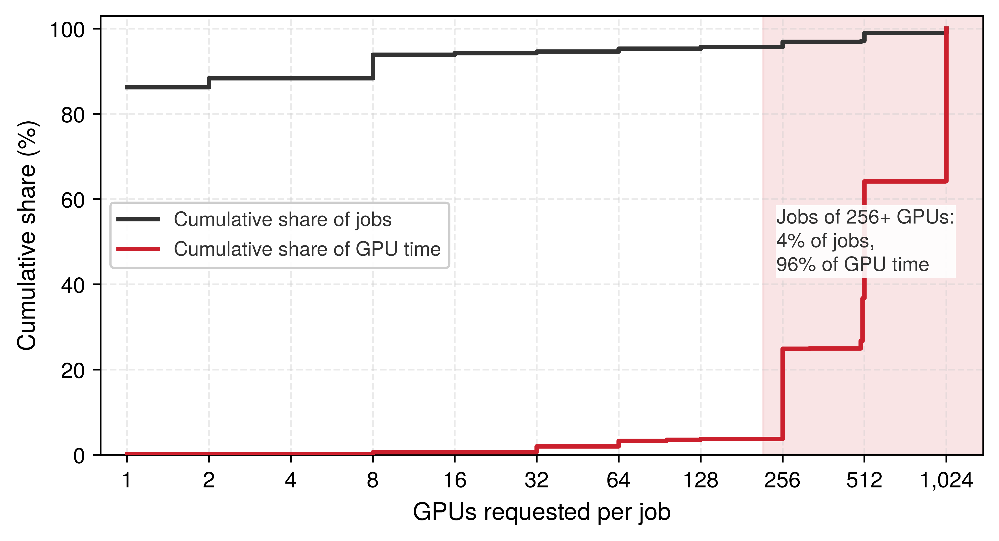
Содержание главы
Содержание
- 8 Оркестрация парка
- 8.1 Задача планирования
- 8.2 Сложность распределённого планирования
- 8.3 Цели планирования и их конфликты
- 8.4 Базовые ограничения выделения
- 8.5 Парадигмы оркестрации
- 8.6 Планирование с учётом топологии
- 8.7 Эластичное планирование
- 8.8 Оптимизация затрат
- 8.9 Пользовательские ML-планировщики
- 8.10 Мощность обслуживания в общем парке
- 8.11 Многопользовательский доступ и квоты
- 8.12 Отладка загрузки кластера
- 8.13 Заблуждения и ловушки
- 8.14 Итоги
8 Оркестрация парка
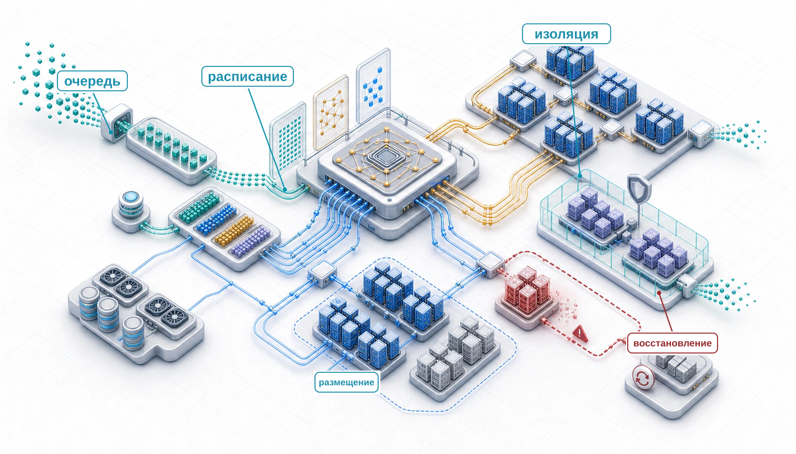
Назначение
Почему задачи ждут, пока дорогие ускорители простаивают?
Тысяча простаивающих ускорителей продолжает генерировать расходы на владение или резервирование, в то время как поставленные в очередь эксперименты не продвигаются. Дополнительное оборудование не устраняет этот простой, если доступные ресурсы не могут образовать группы, которые нужны ожидающим задачам. Свободные устройства могут быть разбросаны по машинам с неподходящими соединениями, или несколько задач могут каждая удерживать часть ресурсов в ожидании остальных. На одной машине ускорение выполнения обычно начинается с уже запущенной работы. В общем парке полезный прогресс зависит ещё и от того, какая работа может начаться, сколько она ждёт и какую другую работу вытесняет её размещение. Короткому эксперименту нужен своевременный результат, долгому обучению — непрерывность, а рабочей нагрузке инференса — ёмкость до того, как запросы начнут нарушать свои сроки. Поддержка одной претензии без учёта остальных может оставить парк занятым, но задержать те результаты, ради которых он существует. Прерывание задачи может освободить ёмкость, но сохранение её состояния и восстановление прогресса расходуют время и пропускную способность. Ожидание лучшего размещения может ускорить выполнение, но удлинить время завершения. Поэтому справедливый доступ нельзя судить только по количеству устройств, а высокая утилизация не доказывает, что ёмкость используется хорошо. Инженерная задача — соблюдать эти конкурирующие претензии при меняющемся спросе и неопределённой доступности ресурсов, сохраняя надёжность самого процесса распределения. В терминах C³ оркестрация платит накладные расходы на координацию, чтобы превращать вычислительную и коммуникативную ёмкость в полезный прогресс, сохраняя справедливость и запас по задержке.
Цели обучения
- Объяснить, как батчевые и декларативные управляющие слои допускают, размещают и согласуют распределения при устаревшем состоянии и частичных отказах
- Применять ограничения ганга, многомерного соответствия и топологии до доминирующего ресурса и справедливости, чтобы находить размещения, которые задача может запустить
- Анализировать конфликты между пропускной способностью, задержкой, справедливостью и стоимостью, используя замедление, задержки в очередях и специфичные для ML сигналы планирования
- Проектировать размещения с учётом топологии, отображающие тензорно-, конвейерно- и данные-параллельные группы на домены NVLink и уровни коммутаторов
- Проектировать эластичные политики, вытеснение и spot-политики, чьи выигрыши в пропускной способности или цене окупают издержки переходов и прерываний
- Диагностировать потери утилизации, разделяя распределённую, активную и производительную ёмкость, и связывая каждый разрыв с его причиной
- Оценивать политики ёмкости инференса и квот, балансирующие запас для инференса, гарантии командам и возвращаемую заёмную ёмкость
8.1 Задача планирования
Рассмотрим две исследовательские команды, разделяющие кластер из 1000 GPU: команда A отправляет задачу на 512 GPU, которая будет выполняться месяц, а команда B — сотни экспериментов на 8 GPU, каждый из которых длится час. Если планировщик будет постоянно допускать любые подходящие задачи, мелкие эксперименты команды B могут бесконечно блокировать большое обучение команды A. Задача планирования — разрешить этот конфликт между пропускной способностью, справедливостью и утилизацией кластера.
Замеры реальных производственных нагрузок показывают, что такая смесь — норма, а не искусственный случай. В кластере Kalos, который Шанхайская лаборатория искусственного интеллекта использовала для разработки языковых моделей в 2023 году, 86 percent из 19,907 задач на GPU запрашивали один GPU, но вместе они потребили 0.1 percent времени GPU кластера. Задачи на 256 GPU и более составили 4 percent заявок и потребили 96 percent времени GPU (Hu и др. 2024 г.), — оба распределения Рисунок 1 строит рядом. Если считать по задачам, кластер — поток мелких экспериментов; если по GPU-часам — это несколько процентов задач, удерживающих почти все ускорители. Планировщик должен обслуживать оба взгляда одновременно, поэтому политики справедливости, упаковки и вытеснения нельзя оценивать лишь по одному из этих счётчиков.
Механизмы эффективной синхронизации работников (Коллективная коммуникация), разбиения вычислений между ними (Распределённое обучение) и восстановления после аппаратных отказов (Отказоустойчивость) решают задачу масштабирования одной задачи. Каждый из них предполагал, что задача уже владеет своими ускорителями. Отказоустойчивость предполагала даже больше. Её пути восстановления опирались на резервный пул, достаточно глубокий, чтобы заменить выведенный узел, и на spot-ёмкость, потерю которой задача могла бы пережить. Ничего из этого не существует, пока нечто вне задачи не выделяет это, держит в резерве или забирает обратно. Это «нечто» — оркестрация: политика, решающая, какие задачи выполняются, где они выполняются, когда одну вытесняют ради другой и как конкурирующие потребности делят парк. Решение о распределении должно быть устойчивым на ненадёжных узлах, балансировать конкурирующие цели парка и удовлетворять ограничения выполнимости каждой задачи. Только после этого управляющие слои платформы, размещения с учётом топологии, эластичные и чувствительные к стоимости политики, планировщики, учитывающие специфику ML-нагрузок, а также практики инференса, мультитенантности и диагностики смогут превратить сырую ёмкость в полезную работу. Обучение и инференс опираются на один и тот же парк, поэтому конверт ёмкости, которую распределяет эта глава, — общий для обоих; как система инференса расходует свою долю, запрос за запросом, — предмет Обслуживание в масштабе.
В стеке парка (показан на полях) оркестрация занимает строку «Надёжность и управление» в полосе распределения, но полоса инфраструктуры под ней ограничивает её решения. Планировщик должен учитывать неоднородность GPU, топологию NVLink, лимиты мощности стоек и бисекционную пропускную способность сети. Когда планирование идёт не так, отладка может потребовать изучения всех четырёх полос, чтобы определить, где корень проблемы: в инфраструктуре (аппаратные ограничения), распределении (ограничения алгоритмов), обслуживании (несоответствие нагрузки) или управлении (неверно настроенные политики). Оркестрация соединяет физическую инфраструктуру с распределёнными алгоритмами, переводя запросы ресурсов в размещения, уважающие и аппаратную топологию, и организационные политики.
Перевод этих запросов в размещения усложняется по мере роста парка и его флагманских нагрузок. В кластере на 10,000 GPU одиночный прогон предобучения модели класса GPT-3 на 175 млрд параметров (Brown и др. 2020 г.) — действующий экземпляр архетипа A (GPT-4/Llama-3), проходящего через всю книгу, — может удерживать распределение на 1,024 GPU неделями. Поскольку законы масштабирования из Законы масштабирования ИИ вознаграждают более крупные модели на большем числе токенов, каждое новое поколение таких прогонов запрашивает больший ганг на более долгий срок, поэтому самые тяжёлые запросы планировщика продолжают расти. Когда задач такого класса в очереди достаточно много и вместе они запрашивают больше GPU, чем есть в кластере, — рядом с тысячами более мелких экспериментов и нагрузками инференса, конкурирующими за тот же пул, — наивные политики перестают работать. Политика «первым пришёл — первым обслужен» без бэкфиллинга (запуска мелких задач в промежутках, пока большая задача ждёт) и вытеснения позволяет большим задачам занимать кластер неделями, задерживая мелкие эксперименты, которые исследователям нужны для быстрой итерации. Политика справедливых долей, делящая ёмкость без учёта минимального набора ресурсов каждой задачи, может оставить множество частичных распределений и ни одной запускаемой большой задачи.
↩︎ Архетип A и его действующий экземпляр на 175 млрд параметров введены в Архетип A (GPT-4/Llama-3).
Экономические ставки делают эти решения значимыми на каждом масштабе. Постоянно арендованный кластер на 10,000 GPU, оценённый по принятому в главе облачному тарифу $2/GPU-hour, представляет $480,000 в день ёмкости — независимо от того, вычисляют ли GPU полезную работу или простаивают, пока задачи ждут в очереди. Если неэффективное планирование оставляет 30 percent GPU простаивающими, это равняется $144,000 в день в виде неиспользованной ёмкости, или около $52.6M в год. Эта доля учитывает только ту простаивающую ёмкость, которую может вернуть лучшее планирование, — разрыв между плохо спланированным парком с утилизацией 50 percent и хорошо спланированным с утилизацией 80 percent. Плохо спланированный парк простаивает больше; полную долю простоя оценивает Глава 8.8.
При неизменной полезной работе на активный GPU-час повышение утилизации с 50 percent до 80 percent добавляет 3,000 полностью активных GPU-эквивалентов производительной ёмкости без покупки дополнительного оборудования. Эта величина измеряет прирост полезной работы. Закупочное планирование задает другой вопрос: сколько оборудования этот прирост заменяет. Для этого сравнения ответ — прирост, делённый на базовую утилизацию 50 percent, то есть 6,000 сырых GPU, потому что новые GPU под той же политикой планирования достигли бы лишь той же утилизации 50 percent. Возвращённая ёмкость становится денежной экономией, только когда она позволяет избежать покупок или оплачиваемого времени ресурсов. Поэтому планирование способно увеличить полезную работу, получаемую от существующей инвестиции, даже когда текущие расходы парка не меняются.
Гибкость планирования определяется семантикой рабочей нагрузки, а не границей между машинным обучением и высокопроизводительными вычислениями (HPC). Жёсткие синхронные задания в обеих областях требуют фиксированного набора совместно планируемых рангов, тогда как гибкие (malleable) задания могут продвигаться в пределах объявленного диапазона количества ресурсов. Gang-планирование1 — центральное ограничение распределения для жёсткой обучающей группы: задание, настроенное на 1,024 GPU, не может завершить свои распределённые итерации, получив лишь половину из них. Гибкое обучение с параллелизмом по данным может вместо этого варьировать число реплик в явных точках реконфигурации, но группы с тензорным и конвейерным параллелизмом обычно сохраняют жёсткое базовое распределение. Следовательно, планировщик должен моделировать для каждого задания минимальную жизнеспособную gang-группу — наименьший набор совместно планируемых устройств, на котором задание может продвигаться, — и разрешённые точки изменения размера, а не выводить жёсткость из поля рабочей нагрузки.
Если gang-планирование определяет, какие ресурсы должны быть доступны одновременно, то учёт топологии через группы размещения2 определяет, насколько эффективно они могут взаимодействовать. Группы с тензорным параллелизмом выигрывают от размещения внутри домена NVLink с высокой пропускной способностью; размещение через более медленные связи всё равно должно укладываться в коммуникационный бюджет задания. Поэтому два распределения одного и того же размера могут обеспечивать весьма разную полезную пропускную способность.
Гетерогенность GPU — третье измерение. Многие кластеры содержат смеси ускорителей A100 и H100 с разной вычислительной пропускной способностью и пропускной способностью интерконнекта. Их соотношение пропускной способности обучения зависит от рабочей нагрузки, числовой точности и пути коммуникации, поэтому планировщику нужны измеренная производительность и применимая стоимость распределения. Ёмкость памяти добавляет жёсткий тест на допуск, когда пулы различаются ею. Распространённые варианты A100 и H100 оба несут 80 GB высокоскоростной памяти (HBM), но варианты того же ускорителя с меньшей памятью и старые поколения часто делят парк с ними. Задание, чей рабочий набор помещается только в устройства большего объёма, не может выполняться на остальных при любом приоритете. Пример отладки в Глава 8.12 возвращается именно к такому смешанному парку. Планировщик должен сопоставлять рабочие нагрузки с подходящим оборудованием на основе фактических требований, а не пользовательских предпочтений, поддерживая при этом высокую утилизацию гетерогенных пулов. Когда пользователи запрашивают определённые типы GPU по привычке, а не по необходимости, несоответствие между запрошенными и требуемыми ресурсами может оставить целые аппаратные пулы простаивающими, а очереди — переполняющимися на предпочитаемом оборудовании.
Длительность заданий также неопределённа: обучающий запуск может сойтись раньше и завершиться за дни, а не за недели, аппаратные сбои могут прерывать задания и возвращать ресурсы в непредсказуемые моменты, а поиск гиперпараметров может рано завершать бесперспективные конфигурации. Как в ML, так и в научных вычислениях задания с фиксированным шагом и стабильным временем итераций позволяют лучше оценивать время освобождения, чем задания с переменными условиями остановки или скоростью выполнения. Следовательно, при решении вопроса, может ли другое задание безопасно использовать временный резерв мощности, планировщик должен отличать оценочное время завершения от принудительного лимита времени выполнения.
Взаимодействие этих задач создаёт комбинаторную сложность. Планировщик должен одновременно обрабатывать ограничения gang-планирования (атомарное распределение), гетерогенные ресурсы (сопоставление возможностей), требования топологии (локальность NVLink для тензорного параллелизма), политики приоритета и справедливости (организационная справедливость), решения о вытеснении (какие работающие задания прервать) и оптимизацию стоимости (spot-размещение против on-demand). Каждое измерение ограничивает остальные. Топологически оптимальное размещение может нарушать политики справедливости, экономически оптимальное spot-размещение — требования надёжности, а распределение ради справедливости — фрагментировать ресурсы так, что gang-планирование становится невозможным. Следовательно, планировщик делает больше, чем упаковывает задания на GPU. Он должен поддерживать согласованное и экономически полезное представление о сбоящем гетерогенном парке. При таком масштабе размещение перестаёт быть просто задачей оптимизации и становится задачей распределённых систем — поддержанием когерентности состояния на тысячах машин.
8.2 Сложность распределённого планирования
Одномашинный планировщик работает внутри границы одной операционной системы, где три свойства выполняются достаточно строго, чтобы строить вокруг них проект: он наблюдает состояние ресурсов непосредственно и согласованно, его решения о распределении вступают в силу атомарно, а сбои почти бинарны (машина либо работает, либо нет). Отказы устройств и отложенная очистка всё же случаются, но они не прячутся за сетью. Кластерный планировщик отказывается от всех трёх свойств. Он координирует независимые узлы через задержанные сообщения и неопределённые наблюдения, поэтому авторитетное решение о распределении не гарантирует, что каждый узел его получил или выполнил. Из этого разрыва вытекает несколько задач распределённых систем.
Частичные сбои — первая задача. Узел может отказать между распределением и запуском задания, создавая разрыв между решением планировщика и его эффектом. Планировщик может успешно распределить 32 GPU на 4 узлах, и затем один узел откажет до запуска задания. Оставшиеся 24 GPU простаивают, пока планировщик обнаруживает отказ, обновляет своё состояние и перепланирует распределение. Тем временем другие задания, которые могли бы использовать эти 24 GPU, уже размещены в другом месте, возможно, на неоптимальном оборудовании. До первого шага обучения восстановление должно починить состояние распределения и запуска, хотя нового прогресса модели, который можно было бы восстановить, не существует. Когда выполнение началось, восстановление ресурсов должно также координироваться с механизмами контрольных точек и членства фреймворка.
Сетевые разделения создают вторую проблему. Планировщик может потерять связность с подмножеством узлов, пока те продолжают работать нормально. С точки зрения планировщика их статус неопределёнен; с точки зрения узлов задания могут всё ещё выполняться и производить полезную работу. Перераспределение их GPU рискует двойным распределением, если разделение заживёт, пока старая работа ещё идёт; ожидание переподключения оставляет возможно здоровую мощность простаивающей. Длительность разделения заранее неизвестна, поэтому любой фиксированный таймаут — догадка о поведении сети, которая может оказаться неверной. Таймаут может запустить восстановление, но не доказывает, что старое выполнение остановлено. Поэтому повторное использование GPU требует подтверждённой очистки или принудительного отзыва старого распределения. Перезапуск задания на доступных replacement-узлах также требует ограждения (fencing) устаревших попыток от разделяемых выходов. Одна распространённая форма ограждения увеличивает номер поколения распределения, так что агенты узлов и хранилище отклоняют любую работу с более старым номером. Политика восстановления может выбирать, сколько ждать переподключения, но каждый выбор должен сохранять исключительное владение там, где это требует рабочая нагрузка.
↩︎ Ограждение эпох и аренды при восстановлении заданий установлены в Процедуры восстановления.
Несогласованность состояния — третья задача, усугубляющая первые две. Состояние ресурсов может различаться между представлением планировщика и реальностью на отдельных узлах. GPU, который планировщик считает свободным, может всё ещё очищаться от предыдущего задания: сбрасывать кэши, освобождать память устройства, выполнять зомби-процесс из упавшего контейнера или завершать сброс драйвера CUDA после ошибки. Наоборот, GPU, помеченный как «используемый», мог быть освобождён заданием, завершившимся между интервалами heartbeat. Следовательно, планировщик оперирует моделью состояния кластера, которая всегда слегка устарела. Степень устаревания различается между узлами в зависимости от частоты heartbeat, сетевой задержки и сложности операций очистки.
Упорядочивание без глобального времени — четвёртая проблема. Сообщения о распределении, выпущенные до и после разделения, могут приходить не по порядку. Логические метки времени — счётчики, упорядочивающие события без общих часов, — могут описать порядок, но сами по себе не предотвращают конфликтующее владение. Управляющая плоскость должна сериализовать конфликтующие решения о распределении, а менеджер ресурсов — отклонять устаревшие поколения распределений до их исполнения. Иначе старый запрос запуска может оживить работу после того, как более новое распределение завладело ресурсами.
Эти четыре задачи перекликаются с CAP-теоремой из Реальность теоремы CAP, согласно которой разделённая система не может гарантировать одновременно согласованность и доступность. CAP — теорема о распределённых системах данных, а не буквальное доказательство о каждом планировщике, но аналогия привлекает внимание к тому, какие решения о распределении остаются безопасными, когда узлы не могут обмениваться сообщениями. Slurm — менеджер HPC-нагрузок — и Kubernetes — платформа оркестрации контейнеров — оба нуждаются в авторитетных записях о распределении и механизмах, сверяющих эти записи с исполнением. Оптимистичный параллелизм позволяет планировщикам планировать по потенциально устаревшим снимкам, а затем валидировать предлагаемые изменения перед фиксацией. Отклонение конфликтующего предложения стоит работы по планированию; принятие конфликтующего владения нарушило бы иной, существенный инвариант.
Напряжение управляющей плоскости становится конкретным, когда планировщик взаимодействует во время разделения с собственной распределённой координационной плоскостью ML-фреймворка. Планировщик может решить, что подмножество узлов недоступно, в то время как воркеры на этих узлах всё ещё заблокированы внутри коллективной операции. Это создаёт краткое окно конфликтующих намерений: планировщик хочет восстановить распределение, но обучающее задание ещё не сошлось на новом представлении о членстве. Механизмы эластичного запуска вроде TorchElastic уменьшают эту неопределённость через рандеву — шаг, на котором воркеры соглашаются о членстве в группе и рангах. Они используют heartbeat и повторные рандеву, чтобы фреймворк мог либо сформировать жизнеспособную группу воркеров, либо корректно завершиться, что даёт планировщику более ясный сигнал восстановления, чем непрозрачный таймаут коллективной операции (PyTorch Contributors 2026 г.b, 2026 г.a). Такая многоуровневая координация — с политикой уровня планировщика для грубого распределения и членством уровня фреймворка для воркеров — характерная архитектура производственных кластеров распределённого обучения.
8.2.1 Допуск, размещение и сверка
Когда единая недифференцированная очередь смешивает проверки квот, привязку к оборудованию и восстановление после сбоев, операторы не могут определить, заблокировано ли ожидающее задание квотой команды, фрагментированной топологией или мёртвым узлом, чья аренда — ограниченное по времени предоставление владения, истекающее без продления, — ещё не истекла. Устаревший повторный запрос также может назначить одни и те же ускорители двум заданиям одновременно. Управляющая плоскость планировщика устраняет эту двусмысленность, разделяя три решения. Контроль допуска решает, может ли задание войти в множество готовых к запуску при ограничениях квоты, приоритета, gang-групп и безопасности. Размещение привязывает допущенное задание к допустимому набору узлов с учётом возможностей ускорителя, топологии, питания, хранилища и ёмкости сети. Сверка сравнивает желаемые распределения с наблюдаемым состоянием узлов и заданий, а затем запускает, повторяет, выселяет или ограждает работу, пока два состояния не согласуются. Явное выделение этих стадий позволяет отличить отказ допуска от неудачи размещения, а версионированные решения и принуждение на уровне ресурсов не дают устаревшим наблюдениям авторизовать конкурирующих владельцев.
Архитектуры управляющей плоскости распределяют эти решения по-разному (Hindman и др. 2011 г.; Burns и др. 2016 г.). Централизованный планировщик сериализует допуск и размещение относительно одного авторитетного состояния, что упрощает обработку конфликтов, но концентрирует задержку планирования и последствия отказа. Двухуровневый дизайн предлагает ресурсы планировщикам фреймворков, получая специализацию политик ценой задержанных или отклонённых предложений. Дизайн с разделяемым состоянием позволяет нескольким планировщикам планировать параллельно относительно общего состояния и разрешает конфликты через проверки версий или оптимистичный параллелизм. В каждом дизайне сверка замыкает контур. Агенты узлов должны принуждать поколения распределений и срок действия аренд, чтобы старое решение не ожило после того, как более новое размещение завладело ресурсами.
Допустимость простирается и дальше числа свободных ускорителей. Допуск с учётом питания отклоняет или откладывает размещение, чей худший случай потребления превысил бы лимит стойки или дата-центра; опора на среднее потребление рискует коррелированным троттлингом, когда совместно размещённые задания одновременно входят в фазы интенсивных вычислений. Размещение с учётом ввода-вывода трактует пропускную способность чтения датасетов и записи контрольных точек как резервируемую ёмкость, поэтому gang-группа, помещающаяся в память GPU, не запускается там, где одновременные входные конвейеры или всплески записи контрольных точек насытят тот же путь хранения. Эти ограничения могут намеренно оставлять ускорители простаивающими. Простаивающая мощность — цена сохранения бюджетов питания и перемещения данных, необходимых допущенным заданиям для продвижения.
8.2.2 Отказ как вход планирования
Планировщик, распределяющий 10 000 GPU так, будто каждый полученный узел останется здоровым до конца задания, увидит, как многотысячная GPU обучающая gang-группа застаивается каждые несколько часов в ожидании replacement-мощности, которая уже была выдана другим нагрузкам. Как установлено в Математика неизбежных отказов, интенсивность отказов парка — это удельная на устройство интенсивность, умноженная на численность (Уравнение (4)), поэтому кластер из десяти тысяч GPU теряет устройство каждые несколько часов (Таблица 1). Там, где отказоустойчивость превращает эту интенсивность отказов в контрольные точки, обнаружение и эластичное восстановление для работающего задания, планировщик должен планировать отказ в каждом решении о распределении. Планировщик использует две интенсивности отказов — по одной на каждое решение. Размер резерва мощности и пути замены он определяет по GPU-only количеству устройств, которые должен заменять. Оценка же того, как часто прерывается работающее задание, использует более короткий полный системный интервал из Расчёт MTBF кластера, добавляющий домены отказов PCIe и сети, поскольку эти сбои тоже останавливают синхронное задание, даже когда заменять GPU не нужно.
Планировщик не может трактовать кластер как статический пул ресурсов, где ресурсы, однажды распределённые, остаются доступными до добровольного освобождения. Он должен предвидеть потерю распределённых ресурсов во время исполнения и предусматривать замещающую мощность или пути повторного планирования. Ответ зависит от сбоя и валидности уцелевшего состояния. Преходящее нарушение может допустить восстановление на месте, если состояние исполнения остаётся пригодным; постоянный аппаратный отказ требует замещающих ресурсов. Даже короткое нарушение может вынудить восстановление с контрольной точки, если фреймворк не может безопасно продолжить (Tiwari и др. 2015 г.).
Когда пропущен heartbeat узла, планировщик стоит перед тремя политиками восстановления с разными затратами задержки и мощности. Он может подождать, возобновится ли heartbeat, хотя это задерживает восстановление, если машина упала навсегда. Он может вместо этого незамедлительно начать восстановление на замещающих ресурсах, при условии, что устаревшее исполнение ограждено до возобновления конфликтующей работы. Промежуточный подход помечает узел как подозрительный и предварительно размещает замещающую мощность, пока проверяется его статус; это сокращает задержку запуска, если замена понадобится, но удерживает мощность, которая могла бы обслуживать ожидающие задания. Какую бы политику он ни выбрал, повторное использование GPU узла всё равно ждёт ограждения, которое требуют сетевые разделения. Исторические измерения отказов и восстановления задают, сколько ждать и сколько замещающей мощности держать.
Декомпозиция времени восстановления из отказоустойчивости (Уравнение (10)) показывает, где политика планировщика вмешивается наиболее эффективно. Из её составляющих — обнаружения, перезапуска, загрузки и прогрева — планировщику принадлежит большая часть
↪ Та же декомпозиция в фазах, видимых планировщику (обнаружение, перепланирование, перезагрузка и воспроизведение работы с последней контрольной точки), развита в Анатомия времени восстановления.
Эти требования связывают планировщик напрямую с инфраструктурой контрольных точек и восстановления. Решения о планировании — резервная мощность, политики вытеснения и поддержка эластичного обучения — определяют, насколько быстро система восстанавливается от статистически ожидаемых отказов. Планировщик, резервирующий запасную мощность или поддерживающий эластичное восстановление, может восстановить пропускную способность гораздо быстрее, чем тот, что требует от каждого упавшего задания ждать полного нового распределения и перезагрузки. Доля резерва следует из измеренной интенсивности отказов и времени восстановления собственных нагрузок парка. Когда управляющая плоскость способна поддерживать когерентное владение через допуск, размещение, сверку и отказы узлов, ей всё ещё нужна явная целевая политика, чтобы решать, какие конкурирующие задания получают мощность, когда спрос превышает то, что парк может запустить одновременно.
↩︎ Обнаружение отказов, процедуры восстановления и пулы запасных узлов описаны в Обнаружение отказов и восстановление.
8.3 Цели планирования и их конфликты
Предоставление крупному обучающему гангу неразрывного выделения ресурсов на недели амортизирует накладные расходы на запуск и перемещение данных, но оставляет короткие интерактивные отладочные задачи ждать в очереди часами. Вытеснение крупного ганга ради немедленного старта коротких задач сжигает ёмкость кластера на сохранении контрольных точек и перезапусках. Каждая политика планирования балансирует четыре конкурирующие цели: пропускную способность, справедливость, задержку и экономическую эффективность. Пропускная способность выигрывает от выделений, поддерживающих полезную работу и амортизирующих накладные расходы на запуск, прерывания и перемещение данных; крупное выделение помогает лишь до тех пор, пока задача эффективно масштабируется. Поддержание справедливости требует равномерного распределения ресурсов между конкурирующими арендаторами, чтобы один доминирующий проект не монополизировал парк. Доминантная справедливость по ресурсам (Ghodsi и др. 2011 г.) формализует этот баланс, выравнивая наибольшую нормированную долю каждого арендатора среди GPU, CPU и памяти. Снижение задержки в очереди помогает коротким интерактивным задачам завершаться быстро, однако агрессивное вытеснение может многократно прерывать долгоидущее обучение. Стремление к экономической эффективности порождает разные издержки у разных политик: спотовая ёмкость рискует прерываниями, внепиковое планирование откладывает допуск задач, а плотная упаковка может усиливать взаимные помехи. Каждую политику следует оценивать по объёму выполненной полезной работы и вносимым задержкам.
Справедливость требует метрики результата, а не только правила входных квот. Для задачи
Каждая из четырёх целей, преследуемая в одиночку, планирует один и тот же пул по-разному и жертвует тем, что защищают остальные (Рисунок 2). Приоритет крупного неразрывного выделения может задерживать короткие эксперименты, а постоянный допуск коротких задач — мешать сборке крупного ганга. Эти конфликты зависят от рабочей нагрузки и доступной ёмкости; улучшение одной цели не обязательно ухудшает все остальные.
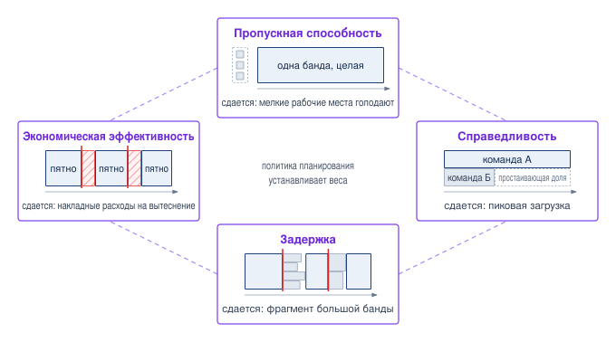
Рассмотрим дообучение модели на 175B параметров, требующее 64 GPU, — значительно меньшее выделение, чем её претренировочный запуск на 1,024 GPU. Если запуск поддерживает высокую утилизацию днями, неразрывное выделение амортизирует накладные расходы на запуск на длинном исполнении. Тем не менее его допуск может потребовать освободить 64 подходяще размещённых GPU, задерживая меньшие эксперименты. И наоборот, постоянное заполнение доступных промежутков короткими задачами может помешать крупной задаче собрать требуемую группу. Вытеснение или изменение размера восстанавливает гибкость, лишь если задача поддерживает такой переход и его стоимость приемлема. Поэтому политика должна сопоставлять полезную пропускную способность и задержку завершения для обоих классов задач. В терминологии планировщиков эти выборы часто предстают классами качества обслуживания: уровнями приоритета задач, определяющими, какая цель победит при столкновении пропускной способности, задержки, справедливости и стоимости.
Очереди добавляют ещё один конфликт между утилизацией и задержкой, поскольку парк, работающий близко к полной загрузке, оставляет прибывающим задачам мало свободной ёмкости. В одноканальной очереди со случайными прибытиями среднее время ожидания, выраженное как кратное средней длительности задачи, равно произведению коэффициента загрузки
Инженерный расчёт 8.1: Теория очередей GPU-кластеров
Чтобы изолировать эффект временной вариативности, рассмотрим очередь M/G/1 с обслуживанием в порядке поступления. Нотация Кендалла именует очередь по процессу прибытия, распределению времени обслуживания и числу серверов: M — для пуассоновских (памятно-свободных) прибытий, G — для произвольного распределения времени обслуживания и 1 — для одного сервера. Представление парка одним сервером означает моделирование его суммарной ёмкости как единого ресурса, обрабатывающего по одной задаче за раз, причём время обслуживания задачи равно её GPU-часам, делённым на число GPU парка. Такое отображение игнорирует упаковку гангов и параллельный допуск, поэтому изолирует эффект вариативности, а не предсказывает ожидание в реальном парке. Задачи прибывают по пуассоновскому процессу
Здесь
Экспоненциальное распределение времени обслуживания даёт эталонный случай с
При утилизации 80 percent
8.4 Базовые ограничения выделения
Назначение запуску дообучения на 64 GPU его справедливой доли кластера не даст никакого прогресса, если эти GPU стоят на узлах с исчерпанной памятью хоста, не имеют требуемой его схемой параллелизма интерконнектной связи или приходят лишь по 32 за раз. Цель планирования может выбирать лишь среди выделений, которые задача реально способна исполнить. Справедливость должна вычисляться по всем ресурсам, потребляемым арендатором, запрос должен умещаться по всем измерениям узла, который его получает, жёсткая группа должна приходить целиком, а ресурсы, удерживаемые задачей, не должны блокировать друг друга. Каждое из этих ограничений сужает множество допустимых вариантов до того, как цель выберет внутри него.
8.4.1 Выделение по доминантной справедливости ресурсов
Выравнивание только по числу GPU не работает, когда задачи одного арендатора насыщают CPU и память хоста, а другого — сетевой fabric, оставляя свободные GPU непригодными из-за исчерпанных вспомогательных ресурсов. Доминантная справедливость ресурсов (DRF) делает многоресурсные права сопоставимыми, нормируя выделение каждого арендатора относительно ёмкости парка и беря его наибольшую долю (Ghodsi и др. 2011 г.). Рассмотрим намеренно малый кластер из Таблица 1: 8 GPU, 32 ядер CPU, 256 ГБ памяти и 80 Гбит/с сетевой ёмкости. Реплика арендатора A требует 1 GPU, 4 ядра, 32 ГБ и 10 Гбит/с; распределённый воркер арендатора B требует 2 GPU, 2 ядра, 16 ГБ и 20 Гбит/с.
| Арендатор | Выделение | Доля GPU | Доля CPU | Доля памяти | Доля сети | Доминантная доля |
|---|---|---|---|---|---|---|
| A | 4 реплики | |||||
| B | 2 воркера |
Для арендатора
Опорный пример 8.1: Маяковые архетипы: размещение меняет справедливость
Одна и та же доля ресурсов имеет разный смысл для трёх маяковых нагрузок, представленных в Три системных архетипа:
- Архетип A (GPT-4/Llama-3) требует жёсткого ганга, совместимого с топологией. Дробные выделения ниже его минимальной конфигурации параллелизма не дают прогресса, поэтому справедливость должна включать максимальное выполнимое ожидание непрерывного размещения, а не только GPU-часы.
- Архетип B (DLRM at Scale) связывает память ускорителей с пропускной способностью разреженной маршрутизации. Номинальное выделение GPU невыполнимо, когда шардированные эмбеддинги или сетевая ёмкость не следуют за ним, поэтому сеть и память должны входить в доминантную долю, а размещение — защищать предел задержки обслуживания.
- Архетип C (Federated MobileNet) планирует участие, а не GPU дата-центра. Фильтры допуска по питанию, связности и возможностям устройства могут систематически исключать часть популяции, поэтому справедливость должна проверяться через уровни участия и результатов по группам устройств и пользователей, а не по равному числу устройств в раунде.
Общее правило: сначала определить допустимый набор размещаемых задач, а уже затем оценивать справедливость по полезному прогрессу. Если считать каждый ускоритель или клиента взаимозаменяемым, то скроется то самое ограничение, которое делает каждый из архетипов трудным.
8.4.2 Упаковка в контейнеры (bin packing)
Даже если в кластере в сумме свободны десятки GPU, ожидающая задача на 8 GPU останется заблокированной, если предыдущие размещения раскидали эти свободные GPU остатками по 1–2 GPU по частично занятым узлам. Укладка задач разного размера в узлы фиксированной ёмкости без «застревания» ёмкости — это экземпляр задачи bin packing (упаковка в контейнеры).3 Поскольку общая задача bin packing NP-трудна, ни один известный алгоритм не находит оптимальных решений за полиномиальное время. Практические эвристики, такие как first-fit decreasing и best-fit decreasing, дают вычислимо посильные варианты, но их качество зависит от размеров задач и ограничений размещения. Сколько полезной ёмкости эвристика вернёт в гетерогенном МЛ-парке, приходится измерять на конкретном наборе задач этого парка, поскольку классические гарантии покрывают лишь одномерную упаковку.
Рассмотрим кластер из 64 узлов по 8 GPU в каждом, всего 512 GPUs. Если каждая задача требует 6 GPU в пределах одного узла, на узел помещается только одна такая задача, 2 GPU остаются неиспользованными, и эффективная ёмкость для этой нагрузки снижается до 75 percent. Оставшиеся 2 GPU на каждом узле нельзя объединить между узлами в ещё одно допустимое размещение на шесть GPU, хотя меньшие совместимые задачи могли бы их занять. При смеси задач на 1, 3 и 7 GPU фрагментация зависит от размещения и от ожидающих запросов: суммарной свободной ёмкости может быть больше потребности ожидающей задачи, но ни на одном отдельном узле не хватает места. Рисунок 3 отображает эту застрявшую ёмкость на сетке размещения
МЛ-размещение — это многомерная задача упаковки. Задачи требуют GPU вместе с ядрами CPU для предобработки данных, память хоста для конвейеров загрузки и аугментации данных, локальный SSD-накопитель для кэширования датасетов и пропускную способность сети для синхронизации градиентов. Задача, запрашивающая 4 GPU, 32 ядра CPU и 256 ГБ ОЗУ, может не поместиться на узел, где свободны 4 GPU, но лишь 16 свободных ядер CPU, потому что другие задачи заняли CPU хоста под предобработку. Планировщик должен одновременно удовлетворить все ресурсные измерения, и задача помещается, только если по каждому измерению на выбранном узле достаточно ёмкости. Узкое место в любом одном измерении, следовательно, способно оставлять ёмкость в остальных неиспользованной.
Ограничения локальности ещё сильнее сужают размещение по сравнению с простой доступностью ресурсов. Обучающая задача может требовать, чтобы тензорно-параллельные группы оставались в пределах узлов, соединённых NVLink, когда её коммуникационный бюджет не выдерживает меньшую на конечную точку пропускную способность внешнего fabric (450 GB/s на направление внутри узла против 50 GB/s на порт между узлами). В такой топологии, где NVLink не соединяет узлы, задача, запрашивающая «4 GPU со связностью NVLink», не может взять 2 GPU с узла A и 2 с узла B, даже если все 4 GPU по отдельности свободны и суммарной ёмкости достаточно. Эти топологические ограничения превращают подсчёт ресурсов в задачу размещения, где важно, какие именно ресурсы доступны, не меньше, чем сколько их. Допустимая по ёмкости упаковка должна также пройти ограничения задачи по локальности.
Планировщики борются с фрагментацией несколькими взаимодополняющими стратегиями, каждая из которых нацелена на свой аспект проблемы. Первая — backfill: она позволяет меньшим задачам работать в промежутках, пока большая задача ждёт непрерывных ресурсов; Глава 8.4.3 развивает её вместе с оговоркой, которую она должна защищать, и оценками времени исполнения, от которых она зависит. Вторая стратегия — периодическая дефрагментация: она мигрирует или вытесняет низкоприоритетные задачи, чтобы консолидировать свободные ресурсы в непрерывные блоки — по аналогии с уплотнением памяти в операционных системах. Планировщик находит узлы, где частичные размещения оставили застрявшие ресурсы, вытесняет занимающие их задачи и переносит их на узлы, где они укладываются эффективнее. Цена включает передачу состояния и перезапуск, плюс повтор работы, не покрытой валидной контрольной точкой. Корректная контрольная точка (checkpoint) может сохранить недавний прогресс, но всё равно требует времени и пропускной способности хранилища. Планировщик должен взвесить эти издержки против выгоды более раннего запуска больших задач, а периоды низкого спроса уменьшают число конкурирующих задач, затронутых переносом.
Третья стратегия — сверхквитирование (over-subscription): она допускает больше спроса, чем измерение ёмкости способно оставить неиспользованной одновременно, но только там, где ресурс делим и планировщик может ограничить взаимные помехи. Средняя активность потоковых мультипроцессоров (SM) GPU — его вычислительных блоков — не создаёт дробных целых GPU. Задача, зарезервировавшая память устройства, требующая эксклюзивного CUDA-контекста или принадлежащая жёсткой группе, продолжает занимать назначенное ей устройство, даже когда ядра простаивают. Статистическое мультиплексирование может быть безопасным для явно разделяемых CPU, сети, хранилища или партиционированной ёмкости GPU, когда арендаторы имеют измеренные, слабо коррелированные пики и соблюдааемые лимиты. Небезопасно превращать 70 процентов средней утилизации GPU в коэффициент сверхквитирования устройства 1,4
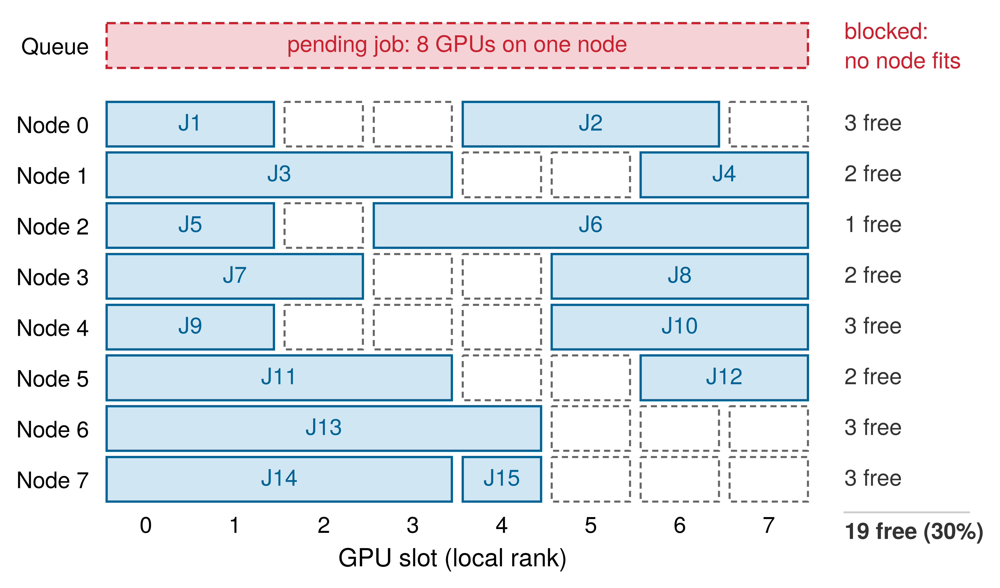
8.4.3 Групповое планирование (gang scheduling)
Частичное размещение жёстких многопоточных по GPU задач создаёт режим отказа распределённого планирования, при котором две задачи удерживают каждая по половине нужных ей ресурсов и блокируют друг друга на неопределённый срок, пока каждый размещённый GPU простаивает. На левой панели Рисунок 4 задачи J1 и J2 удерживают каждая по 4 из 8 требуемых GPU, и весь пул останавливается. Атомарное групповое планирование (правая панель), напротив, выдаёт J1 все 8 GPU одним размещением, пока J2 ждёт, не удерживая ничего, — это предотвращает данный deadlock размещения.
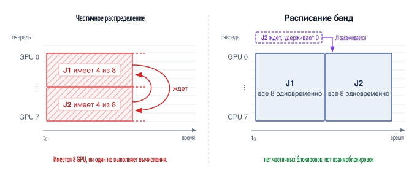
Определение 8.1: Групповое планирование
Групповое планирование — это политика планирования МЛ-кластера, атомарно размещающая ресурсы, которые требуются минимальной жизнеспособной группе исполнения задачи, так что жёсткая группа либо получает своё полное размещение, либо ждёт, не удерживая частичного.
- Значимость: Жёсткая синхронная задача, сконфигурированная на 1,024 GPU, но удерживающая лишь 512 GPU, выполняет ноль шагов обучения, а не половину: каждый коллективный вызов останавливается, пока не придёт каждый ранг его коммуникационной группы, так что удерживаемые GPU потребляют электроэнергию и капитал при нулевой полезной отдаче. Без атомарного размещения две такие задачи могут захватить каждая по половине кластера и войти в deadlock — обе при нулевом прогрессе, но при полном расходе на эксплуатацию кластера.
- Отличие: В отличие от податливого сервиса или параллельной задачи, способной прогрессировать в диапазоне ресурсов, жёсткое синхронное обучение имеет ступенчатую полезность: минимальная жизнеспособная группа или ничего. Это свойство графа исполнения, а не метки ML, cloud или HPC у рабочей нагрузки.
- Типичная ошибка: Частое заблуждение — что одни лишь приоритеты или квоты решают эту проблему. Атомарность должна распространяться на каждый совместно планируемый ресурс, нужный задаче для прогресса (ускорители, домены высокоскоростной связности, сетевая ёмкость для коллективных операций); применять её только на уровне GPU воссоздаёт тот же deadlock на уровень ресурсов ниже.
↩︎ Кольцевые и древовидные схемы AllReduce, каждая из которых завершается только после учёта вклада каждого ранга, определены в Алгоритмы AllReduce и топологии.
Схема частичного размещения — это deadlock «удержание и ожидание»,4, и её цена — всё размещение целиком на всё время существования цикла. В масштабе референсной нагрузки главы две группы по 1,024 GPU, каждая из которых захватила 900 GPU из пула, слишком малого, чтобы завершить любую из них, сжигают примерно $1,800 в час каждая. Предельный случай — две задачи, каждая из которых запрашивает весь кластер: пример, которым OpenAI мотивировала групповой допуск (war story 8.1). На кластере из 10,000 GPU deadlock, оставивший все устройства без дела, при тарифе главы тратит $20,000 в час, не давая прогресса ни одной из задач. По отношению к ставке, вычисленной в начале главы, подъём утилизации с 50 percent до 80 percent возвращает около $144,000 в день в эквивалентной ценности ёмкости. Около 7 часов такого deadlock, следовательно, стирают целый день этого выигрыша. Групповое планирование не создаёт выигрыш, но защищает его. Для жёсткой задачи
Наивное ганговое планирование расточительно предсказуемым образом. Атомарное выделение означает, что ожидающая задача ничего не удерживает, однако большая банда (gang) никогда не соберётся, если каждый освободившийся GPU достанется более мелкой задаче. Поэтому планировщик размещает резервирование для задачи в голове очереди, стягивая ёмкость к ней: он отказывается запускать новую работу на тех GPU, которые понадобятся банде. Если в кластере есть 900 свободных GPU и эта задача запрашивает 1,024, резервирование сохраняет 900 GPU в простое, пока не станут доступны ещё 124, потенциально растрачивая тысячи GPU-часов. Backfill-планирование решает это, выявляя задачи в очереди, которые умещаются в 900 доступных GPU, не откладывая ожидаемое время старта большой задачи (Рисунок 5); эта идея была популяризована системой планирования ANL/IBM SP (Lifka 1995 г.). Задача на 128 GPU с расчётным временем выполнения 2 часа — кандидат на backfill, если 124 дополнительных GPU, необходимых большой задаче, останутся недоступными как минимум 2 часа. Защита резервирования требует принудительной границы времени выполнения или контракта на вытеснение, который своевременно освобождает backfill-выделение, включая любые задержки на контрольные точки и завершение. Оценка выявляет возможность; контракт освобождения делает резервирование исполнимым.
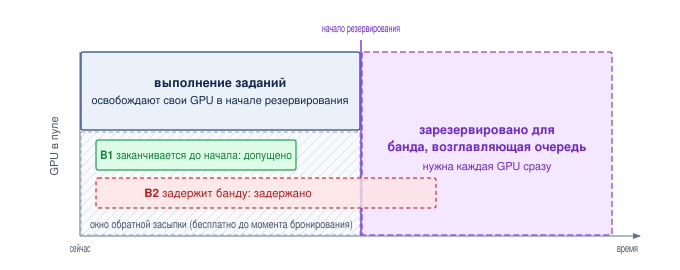
Точность оценок времени выполнения определяет эффективность backfill, и это создаёт теоретико-игровую задачу. Если пользователи завышают времена выполнения, меньше задач, как кажется, умещаются в окно backfill. Если занижают, планировщику может понадобиться вытеснить backfill-задачу, чтобы соблюсти резервирование, оплачивая затраты на восстановление и теряя несохранённый прогресс. Политика, убивающая задачи по заявленному лимиту, поощряет консервативные оценки. Tiresias (Gu и др. 2019 г.), обсуждаемый в Глава 8.9.1, избегает оценок длительности при назначении приоритета, опираясь на наблюдаемое потребление ресурсов. Этот выбор решает задачу упорядочивания в условиях неопределённости, тогда как защита резервирования всё равно требует принудительной границы времени выполнения или контракта освобождения, определяющего, когда backfill-задача вернёт свою ёмкость.
8.4.4 Предотвращение и обнаружение взаимоблокировок
Ганговое планирование устраняет условие hold-and-wait для атомарно выделяемого пакета, но не делает кластер невосприимчивым ко всем формам конкуренции за ресурсы. Последующие запросы вспомогательных ресурсов всё ещё могут создать цикл зависимостей. Правила приоритетов также могут помешать держателю ресурса продвигаться, не создавая цикла. Различать эти случаи важно, потому что разрыв взаимоблокировки и предоставление голодающей задаче достаточных ресурсов для выхода требуют разных вмешательств.
Инверсия приоритетов возникает, когда высокоприоритетная задача ждёт низкоприоритетного держателя ресурса, чей прогресс задерживает другая работа. Рассмотрим дообучение модели на 175 млрд параметров на 64 GPU, отправленное с высоким приоритетом. Планировщик зарезервировал 60 доступных GPU, но оставшиеся 4 удерживает низкоприоритетная задача обработки данных. Обычно планировщик вытеснил бы низкоприоритетную задачу ради высокоприоритетного запроса. Однако если поток среднеприоритетных задач разработки насыщает процессоры или пропускную способность сети кластера, лишая низкоприоритетную задачу ресурсов, необходимых ей для создания контрольной точки и выхода, низкоприоритетная задача останавливается. Её корректный путь освобождения не может завершиться. Высокоприоритетная задача ждёт низкоприоритетную, которая фактически заблокирована среднеприоритетными задачами. Простой блока из 60 GPU продолжается, пока путь выхода не получит ресурсы или политика принудительного завершения не вернёт оставшиеся GPU, потенциально с потерей несохранённой в контрольные точки работы.
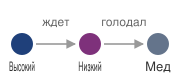
Инверсия приоритетов: высокоприоритетная задача ждёт низкоприоритетного держателя, которого лишает ресурсов среднеприоритетная работа.
Определение 8.2: Инверсия приоритетов
Инверсия приоритетов — патология планирования в ML-кластере, при которой высокоприоритетная задача вынуждена ждать низкоприоритетную задачу, освобождающую общий ресурс.
- Значимость: Она привязывает прогресс высокоприоритетной задачи и зарезервированных за ней ускорителей к прогрессу низкоприоритетной задачи в цепочке ожидания. В ML-кластерах это обычно происходит, когда низкоприоритетная задача, удерживающая GPU, лишается вспомогательных ресурсов (например, пропускной способности для создания контрольных точек), что мешает ей завершиться и освободить ускорители, нужные высокоприоритетным рабочим нагрузкам.
- Отличие: В отличие от стандартной очереди (где задачи ждут своей очереди), инверсия приоритетов предполагает активную блокировку: высокоприоритетная задача готова к выполнению, но транзитивно зависит от задачи, которую планировщик не приоритизирует.
- Типичная ошибка: Распространённое заблуждение — что строгие уровни приоритета это решают. Повышение приоритета ожидающей задачи не предоставляет процессоры или пропускную способность, которые её низкоприоритетному держателю ресурсов нужны для выхода; политика вытеснения должна защищать этот путь освобождения.
Предотвращение и обнаружение решают разные части этой проблемы. Атомарное выделение предотвращает hold-and-wait для ресурсов, входящих в ганг, а резервирование пропускной способности для контрольных точек позволяет вытесненной задаче завершить свой путь выхода. Тайм-ауты лишь ограничивают, как долго система ждёт, прежде чем заняться расследованием или вернуть выделение; они не предотвращают возникновение состояний взаимоблокировки. Мониторинг может запускать восстановление при остановке прогресса, но безопасный возврат всё равно требует принудительного исполнения нового решения о владении.
Обнаружение, в отличие от точного поиска размещения, вычислительно дёшево. До фильтрации по допустимости в кластере с 10 000 GPU и 500 ожидающими задачами может существовать более
Поэтому крупномасштабные планировщики дополняют обнаружение по графу ожидания механизмами, сохраняющими живучесть при неполном состоянии. Ресурс на основе аренды задаёт каждому выделению время жизни; истечение авторизует возврат ресурса только тогда, когда менеджер ресурсов обеспечивает отзыв и очистку перед повторным использованием. Мониторинг прогресса проверяет продвижение по сигналам вроде счётчиков завершённых шагов, используя утилизацию GPU и heartbeats как вспомогательные наблюдения, а не доказательство полезной работы. Когда планировщик должен вытеснить низкоприоритетную задачу, холистическое вытеснение резервирует процессорные, сетевые и дисковые ресурсы, нужные этой задаче для создания контрольной точки и чистого выхода; иначе жертва может оказаться слишком голодающей, чтобы освободить ускорители. Ложные подозрения в отказе могут стоить полезной работы, но не должны обходить проверки владения, необходимые для безопасного восстановления.
8.4.5 Гетерогенное ганговое планирование
В конвейерах обучения на предпочтениях, таких как RLHF (обучение с подкреплением на основе обратной связи от человека), выделение GPU для обучения политики при простаивающих в очереди воркерах генерации роллаутов или оценки наград останавливает рабочий процесс так же основательно, как отсутствие ранга в AllReduce. Гомогенное ганговое планирование выделяет
↩︎ Модели, которые совмещает обучение выравниванию, и их неравные потребности в ресурсах описаны в Мультимодельное обучение для выравнивания и RLHF.
Системный взгляд 8.1: Маршрутизация вместо синхронности
Гетерогенное ганговое планирование расширяет атомарное выделение на роли, которые должны сосуществовать, чтобы рабочий процесс продвигался. Жизнеспособная группа может соединять узлы с большим объёмом HBM для генерации, ограниченной памятью, с вычислительно-ориентированными узлами для обновлений политики. Задача оркестрации тогда смещается от упаковки гомогенного кольца к маршрутизации данных. Вместо редукции градиентов между одинаковыми воркерами задача направляет роллауты потоком от воркеров генерации к воркерам, вычисляющим обновления политики, поэтому размещение должно поддерживать и данные, которыми обмениваются эти роли. Стадии роллаутов и обучения могут обмениваться работой батчами или через буферизованный конвейер; их измеренные скорости производства и потребления определяют, где растут очереди, а где ускорители ждут. Планировщику нужны минимально жизнеспособный пакет ресурсов и поддерживаемая политика масштабирования для каждой роли, а не предположение, что все воркеры взаимозаменяемы или идеально сбалансированы.
Гомогенные и гетерогенные задачи разделяют требование к выделению: планировщик должен собрать жизнеспособную группу прежде, чем ожидать прогресса. Backfill может использовать ёмкость, пока группа ждёт, при условии, что оценки времени выполнения или контракты на вытеснение защищают резервирование. Принуждение этих политик требует управляющей плоскости, представляющей владение и сверяющей выделения после сбоев.
8.5 Парадигмы оркестрации
Ожидающему гангу и очереди мелких backfill-задач нужны и политика разделения ёмкости, и управляющая плоскость, способная её принудить. Описанные выше политики применимы между платформами; парадигма оркестрации определяет, как платформа представляет выделения и восстанавливается, когда наблюдаемое состояние расходится с ними. Slurm, сформированный HPC-батч-системами, тяготеет к явным запросам ресурсов и предсказуемому выделению. Kubernetes, сформированный облачным управлением сервисами, тяготеет к декларируемому желаемому состоянию и непрерывной сверке. Выбор, следовательно, не «Slurm против Kubernetes» как продуктов; это вопрос того, какая модель управления лучше соответствует смеси рабочих нагрузок, поведению при отказах и операционной культуре парка.
Две платформы воплощают две модели управления (Рисунок 6). Slurm следует императивной батч-модели, в которой пользователь указывает ресурсы, нужные задаче, а центральный slurmctld доставляет это выделение через пер-узловые демоны slurmd. Kubernetes следует декларативной модели, в которой пользователь указывает, что должно выполняться, а контроллеры сверяют наблюдаемое состояние с этой декларацией через API-сервер и узловые агенты. Обе платформы принимают явные требования к ресурсам и отслеживают состояние выполнения, поэтому полезное различие — какой жизненный цикл платформа управляет напрямую: выделенную батч-задачу или набор рабочих нагрузок, поддерживаемых контроллерами. Это различие определяет, как ML-нагрузки допускаются, наблюдаются и восстанавливаются после сбоя, а распределённое обучение при любой модели всё ещё нуждается в координации на уровне фреймворка.
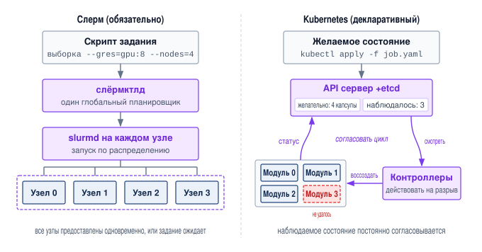
slurmctld), обеспечивающему детерминированное атомарное выделение. Kubernetes (справа) использует декларативную сервисную модель, где контроллеры непрерывно сверяют наблюдаемое состояние кластера в etcd со спецификациями желаемого состояния.
8.5.1 Slurm и HPC-наследие планирования
Когда многоузловая задача нуждается в эксклюзивном, непересекающемся блоке ускорителей на дни за раз — без взаимоблокировок частичного выделения и конфликтов владения узлами — централизованный батч-аллокатор является наиболее прямым вариантом управляющей плоскости. Slurm Workload Manager5 возник в Lawrence Livermore National Laboratory, чтобы решить эту задачу для Linux-суперкомпьютеров (Yoo и др. 2003 г.): долго выполняющиеся задачи, дорогое общее оборудование и пользователи, способные заранее указать потребности в ресурсах. В ML-инфраструктуре та же батч-модель отображается на обучение на GPU через партиции для гетерогенных пулов ускорителей и предсказуемые атомарные выделения для долго выполняющихся распределённых задач.
Батч-модель отправки задач Slurm делает требования к ресурсам явными. Пользователи отправляют скрипты задач, а планировщик выделяет ресурсы в допустимых партициях согласно политике и доступности. Отправка sbatch --gres=gpu:8 --nodes=4 запрашивает 8 GPU на каждом из 4 узлов — выделение на 32 GPU. Запрос задаёт контракт на ёмкость, но полезное выполнение всё ещё зависит от выбранного оборудования и конфигурации запуска приложения. Завышение требований связывает ресурсы; занижение может привести к сбоям по памяти или низкой производительности.
Архитектура Slurm состоит из центрального демона-контроллера (slurmctld), поддерживающего глобальный взгляд на состояние кластера и принимающего решения о планировании, и пер-узловых демонов (slurmd), управляющих локальными ресурсами и исполняющих задачи. Эта централизованная архитектура обеспечивает авторитетную модель выделения, обсуждаемую в Глава 8.2: контроллер — источник истины по назначению ресурсов, что снижает риск конфликтующих выделений. Цена — потенциальная единая точка отказа (решаемая активной-пассивной отказоустойчивостью) и предел пропускной способности планирования. По мере роста парков организации могут разбивать кластер на партиции или федерировать планировщики, чтобы ограничить задержку планирования и последствия отказов; внутри кластера типичная ML-конфигурация определяет партиции Slurm по типу ускорителя и интерконнекту (Таблица 2).
| Партиция | GPU/узел | Интерконнект | Типичное применение |
|---|---|---|---|
| dgx-a100 | 8 |
NVLink + IB NDR | Крупное обучение LLM |
| a100-pcie | 4 |
PCIe + IB HDR | Среднее обучение |
| inference | 2 |
Ethernet | Обслуживание моделей |
| debug | 1 |
Ethernet | Разработка |
Внутри партиции запрос указывает как количество GPU, нужных задаче, так и форму размещения: то, как эти GPU распределены по узлам. В Slurm --gres=gpu:N или --gpus-per-node=N запрашивает количество на узел, а --gpus=N — суммарное количество на задачу. Может ли планировщик делить узел между задачами — отдельная политика расходуемых ресурсов (плагин Slurm select/cons_tres), и политика эксклюзивного узла оставляет незанятыми устройства в примере «шесть из восьми» из Глава 8.4.2. Форма определяет коммуникацию. В пуле с восемью GPU на узел запрос на 16 GPU, фиксирующий также восемь GPU на узел (--gpus-per-node=8), даёт два полностью заполненных узла, чьи домены NVLink следуют из аппаратуры узла, а не из количества. Запрос 16 GPU без ограничения на узел даёт планировщику больше свободы, поэтому он может стартовать раньше на частично занятых узлах, но может разбить группу по нескольким узлам. Полезна ли такая гибкость, зависит от конфигурации параллелизма и её коммуникационного бюджета. Группы тензорного параллелизма с частыми обменами могут оправдать компактное размещение, тогда как группы параллелизма по данным с хорошо перекрытой коммуникацией могут容忍 более широкое размещение.
Механизм планирования с учётом справедливой доли (fair-share scheduling) использует прошлый расход для влияния на будущий приоритет в условиях конкуренции. Иллюстративная эвристика объединяет базовый приоритет, целевую справедливую долю пользователя (
При фиксированных базовом приоритете и целевой доле Уравнение 1 снижает приоритет по мере роста недавнего расхода. Удвоение расхода примерно вдвое уменьшает этот иллюстративный приоритет, когда стабилизирующая константа пренебрежимо мала. Фактический допуск зависит также от других факторов приоритета и доступных ресурсов; низкий недавний расход не гарантирует немедленного старта.
Временной распад истории использования определяет, насколько быстро система «прощает» прошлый интенсивный расход. Период полураспада в одну неделю означает, что интенсивное использование исследователем двухнедельной давности вносит лишь 25 процентов в текущий расчёт его расхода. Короткие периоды полураспада делают политику отзывчивее к недавним изменениям, но могут поощрять чередующиеся всплески использования. Длинные периоды сохраняют эффект завершённого крупного проекта, когда его исследователи возвращаются с меньшими задачами. Полезное окно распада зависит от длительностей задач в парке и периода, за который организация намерена балансировать доступ. Сам расход не обязан учитывать все устройства одинаково. Отслеживаемые ресурсы (TRES) позволяют учёту назначать разным классам ускорителей разные весовые коэффициенты при расчёте расхода в справедливой доле — административная оценка, отслеживающая экономическую стоимость лишь в той мере, в какой это делают выбранные веса.
Политики вытеснения позволяют высокоприоритетным задачам отбирать ресурсы у работающих нагрузок, и для обучения ML изъятие должно оставить время на сохранение состояния. Slurm выражает это время как льготный период. Он посылает сигнал выбранной задаче (SIGTERM), ждёт сконфигурированное GraceTime и лишь затем убивает её (SIGKILL); при PreemptMode=REQUEUE он может также вернуть подходящую задачу в очередь для повторного запуска позднее. Ни сигнал, ни постановка в очередь не сохраняют состояние модели. Приложение должно обработать сигнал, опубликовать валидную контрольную точку в течение льготного периода и восстановить её при перезапуске. Если завершение наступает раньше окончания сохранения, восстановление использует последнюю валидную контрольную точку и воспроизводит последующую работу. Вытеснение, таким образом, покупает доступ для высокоприоритетной работы ценой времени воспроизведения и перезапуска жертвы — цена, которую развивает Глава 8.8.1.
↩︎ Контрольные точки для сохранения прогресса, включая интервал контрольных точек и шаблоны координации, изложены в Контрольные точки и сохранение прогресса.
Несколько возможностей Slurm раскрывают структуру ML перед пакетной системой. Гиперпараметрический перебор — противоположность ганга. Массивы задач отправляют множество проб одной записью (например, --array=0-99), и каждая проба читает свой индекс из переменной окружения SLURM_ARRAY_TASK_ID, чтобы выбрать конфигурацию. Slurm планирует элементы независимо, поэтому отдельные пробы становятся идеальными кандидатами для backfill, заполняющими небольшие провалы в ёмкости, тогда как массив держит накладные расходы на отправку и управление низкими, не превращая пробы в неделимый ганг.
Гетерогенные задачи переносят гетерогенный ганг из Глава 8.4.5 в пакетное размещение. Одна задача может содержать компоненты с различными запросами ресурсов, допускаемые совместно. Запуск дообучения модели 175B на 64 GPU, например, мог бы запросить 8 GPU-узлов для обучения и 2 узла только с CPU для токенизации на лету как единое размещение. Затем он мог бы запустить обучение на GPU-компоненте и воркеры данных на CPU-компоненте (srun --het-group=0 и --het-group=1). Это разделение помогает, только если воркеры данных и путь передачи выдерживают скорость потребления этапа обучения; гетерогенное размещение выявляет этот выбор, но само по себе не балансирует конвейер.
На границах каждого размещения скрипты prolog и epilog превращают переходы задач в проверки здоровья. Prolog проверяет заявленную топологию, счётчики ECC и состояние связей на каждом выделенном узле и выводит из строя отказавший узел до запуска. Epilog удаляет осиротевшие процессы задачи и сегменты разделяемой памяти. Вывод отказавшего узла из строя таким образом применяет практику карантина из Глава 8.6.4 на границах задач, удерживая чувствительную работу вдали от узла, чьи свидетельства здоровья показывают деградацию. Прохождение prolog снижает подверженность известным отказам, но не устанавливает пропускную способность, которую получит задача.
Сильные стороны Slurm для обучения ML включают явные пакетные размещения, настраиваемые политики справедливой доли и интеграцию с распределёнными обучающими фреймворками на основе MPI. Парк, совмещающий обучение и обслуживание, нуждается также в жизненном цикле сервисов, поддерживающем готовые реплики при изменении спроса и отказах. Внутри пакетного планировщика добавление или удаление реплики инференса означает отправку или отмену задачи — операцию значительно более тяжёлую, чем корректировка счётчика реплик контроллером, а отказавшая реплика остаётся недоступной, пока что-то не отправит её заново. Операторы должны интегрировать здоровье реплик, замену и масштабирование по спросу с пакетным планировщиком либо поручить эти обязанности платформе оркестрации сервисов.
8.5.2 Декларативная оркестрация контейнеров Kubernetes
Когда кластер выполняет постоянно работающие сервисы инференса рядом с обучающими задачами, управление репликами обслуживания как пакетными скриптами заставляет операторов вручную выстраивать проверки здоровья, плавающие обновления и замену реплик. Kubernetes решает эту смешанную нагрузку, управляя и сервисами, и пакетными задачами через декларативную модель, которая выражает желаемое состояние нагрузки и использует циклы управления для согласования наблюдений с этим состоянием (Burns и др. 2016 г.; Cloud Native Computing Foundation 2024 г.). Единица размещения — под: один или несколько контейнеров, разделяющих узел и сетевую идентичность; его стандартный планировщик размещает поды по одному. Имя сталкивается с аппаратным подом из Под — множеством стоек, объединённых под одным fabric. Под Kubernetes — программная единица, которая никогда не охватывает более одного узла, поэтому обучающая задача из 64 подов — это 64 группы контейнеров, размещённые на узлах, причём все они могут находиться внутри одного аппаратного пода. Контроллеры над планировщиком придают группам подов назначение: Deployment удерживает заданное число одинаковых реплик-подов работающими, а Job выполняет поды до завершения, повторяя отказы согласно заявленной политике. Следовательно, контроллер нагрузки определяет, что означают завершение, замена или поддержание доступности.
Обработка отказов выявляет важность контракта нагрузки. Slurm может обнаруживать отказы узлов и ставить подходящие задачи обратно в очередь, если он для этого сконфигурирован. Контроллеры Kubernetes поддерживают специфичные для нагрузки цели, такие как счётчик реплик Deployment или политика завершения и повторов Job. Замещающий под всё же должен быть размещён, стать готовым и вновь присоединиться к распределённому обучению, прежде чем прогресс возобновится. Обучающие операторы могут координировать создание воркеров, тогда как за валидность состояния и восстановление группы остаётся ответственным фреймворк. Обе платформы, следовательно, требуют явного соглашения между размещением, жизненным циклом процессов и восстановлением приложения.
Архитектура циклов управления Kubernetes использует шаблон контроллера:6 контроллеры наблюдают и обновляют API-объекты через API-сервер, который хранит состояние кластера в etcd — реплицированном ключ-значение хранилище. Эти объекты содержат желаемое состояние и зарегистрированные наблюдения, а не мгновенную физическую истину. Шаблон повторяется на каждом уровне: контроллер Deployment согласует число реплик подов, планировщик привязывает ожидающие поды к узлам, kubelet (агент на каждом узле) удерживает назначенные ему контейнеры работающими, а контроллер узлов помечает узлы, переставшие сообщать о себе. Каждый компонент действует независимо и общается только через API-объекты, что делает систему устойчивой к отказу любого отдельного контроллера. Цена этой независимости в том, что их взаимодействия требуют ясного разделения ответственности и поведения при повторах, особенно когда последнее заявленное состояние отказавшего узла больше не описывает его исполнение.
Kubernetes требуется явное представление ресурсов, прежде чем он сможет размещать GPU-нагрузки. В модели device-плагинов device-плагины экспонируют ускорители как планируемые расширенные ресурсы. NVIDIA device-плагин регистрирует GPU в kubelet, позволяя спецификациям подов запрашивать GPU-ресурсы декларативно через стандартную модель ресурсов Kubernetes. Под затем запрашивает целые GPU, называя ресурс nvidia.com/gpu в своих limits (Список 1).
nvidia.com/gpu resource name follows Kubernetes extended resource conventions, where the domain prefix identifies the device plugin vendor. This declarative syntax enables portable GPU workload definitions across any Kubernetes cluster with the NVIDIA device plugin installed.
# Kubernetes pod resource specification for GPU allocation
resources:
limits:
nvidia.com/gpu: 4 # Request exactly 4 GPUs for this pod
requests:
cpu: "32"
memory: "256Gi"Когда device-плагин экспонирует эксклюзивные целые GPU, небольшая модель, обслуживающая редкие запросы, может зарезервировать устройство, используя лишь долю его вычислительной ёмкости и памяти. Целостное выделение устройства подходит нагрузкам, которым нужны ёмкость или изоляция, но может оставлять ресурсы занятыми впустую для меньших нагрузок. Поэтому имеет значение единица ресурса, экспонируемая плагином: разделение или партиционирование меняет то, что планировщик может выделять, и то, какую изоляцию получает каждое выделение. Device-плагины могут также экспонировать аппаратные партиции, такие как MIG-инстансы, как планируемые единицы — выбор, который развивает Глава 8.10.1 вместе с подходящими нагрузками обслуживания.
Стандартный планировщик Kubernetes размещает поды независимо, поэтому он не обеспечивает групповой допуск, требуемый Глава 8.4.3. При таком поведении по умолчанию обучающая задача из 64 подов получает 64 отдельных решения о размещении без гарантии, что все они увенчаются успехом. Если в кластере есть ресурсы на 60 подов, но не на 64, эти 60 могут занять ёмкость, пока остальные 4 ждут. Платформа, следовательно, должна конфигурировать групповой контракт допуска и размещения для жёсткой задачи.
Механизм, закрывающий этот пробел, — групповой допуск. PodGroup декларирует минимальный работоспособный состав группы. Планировщик предварительно резервирует размещение для каждого члена по мере нахождения, но не привязывает ни одного из них к узлам, пока не размещено минимальное число членов, и снимает все резервирования, если попытка провалилась или истекло время. Допуск и размещение, таким образом, становятся двумя решениями, причём группа допускается лишь тогда, когда размещение успешно для достаточной её части. Пакетный планировщик Volcano7 и плагин планировщика Coscheduling оба реализуют этот шаблон. Групповой допуск не делает физические запуски одновременными; узлы всё ещё могут отказывать или запускаться в разное время, поэтому фреймворк должен установить коммуникационную группу, прежде чем обучение продолжится.
Практический случай 8.1: Пример группового планирования OpenAI (2021)
Контекст: OpenAI масштабировала кластеры Kubernetes до 7,500 узлов для нагрузок, включая GPT-3, CLIP и DALL-E. Их отчёт поясняет, что согласованные через MPI группы оптимизатора требовали планирования всех членов, прежде чем обучение могло продвинуться (Sigler 2021 г.).
Mechanism: Этот отчёт иллюстрирует риск двумя экспериментами, каждый из которых запрашивал весь кластер. Инкрементальное размещение подов могло выделить половину ёмкости каждому, не оставив ни одного с полной группой.
Impact: В этом примере обе задачи удерживают ёмкость без прогресса. Он демонстрирует механизм дедлока, а не документирует конкретную пару остановившихся продакшн-прогонов.
Fix: OpenAI сообщает о принятии плагина coscheduling, добавившего групповой допуск к планировщику Kubernetes.
Системный урок: Планирование распределённого ML должно кодировать семантику исполнения задачи. Для MPI-подобного обучения «некоторые поды запланированы» — это не частичный прогресс; это потраченное впустую размещение. Продакшн-планировщики нуждаются в ганг-планировании, контроле квот и политиках, учитывающих нагрузку, а не только в generic размещении подов.
Классы приоритетов управляют очерёдностью планирования и правом на вытеснение. Парк может назначить инференсу более высокий приоритет, чем обучению, чтобы защитить цели уровня обслуживания (SLO), но приоритет не заменяет готовую ёмкость во время всплеска спроса. При preemptionPolicy: PreemptLowerPriority ожидающий под может вытеснить поды более низкого приоритета, когда их удаление делает размещение возможным. При preemptionPolicy: Never он сохраняет приоритет в очереди, не инициируя вытеснение, и сам остаётся подвержен вытеснению более высоким приоритетом. Завершение, очистка и запуск замены требуют времени. Обучающим приложениям нужен также путь завершения с учётом контрольных точек, укладывающийся в разрешённый льготный период; назначение приоритетов не создаёт такого пути. Политика должна балансировать готовность обслуживания против многократного прерывания обучения.
Kueue8 делает допуск отдельным управляющим решением. Он управляет тем, когда нагрузки могут расходовать квоту, тогда как совместимый планировщик привязывает их поды к узлам. Политика допуска и политика размещения должны соглашаться о типах ресурсов, групповых требованиях и топологии. Разделение этих обязанностей позволяет каждому слою вести собственную политику ценой поддержания согласованности двух. Kueue представляет каждую команду или проект как очередь с настроенной квотой (ClusterQueue) и группирует очереди в когорты, члены которых могут одалживать друг другу неиспользованную квоту — в рамках контракта заимствования и возврата из Глава 8.11.2.
8.5.3 Экосистема Kubernetes для обучения ML
Групповой допуск решает одно из ограничений, которое оркестрация микросервисов может оставить неявным, а распределённое обучение — не может. Ещё четыре таких ограничения остаются. Воркеры должны запускаться, зная своих пиров; коллективный трафик должен избегать сетевых уровней, построенных для трафика запросов; запись контрольных точек нуждается в пропускной способности, а не только в ёмкости хранилища; и прогресс должен быть наблюдаем ниже уровня контейнера. Операторы и плагины добавляют каждое ограничение к платформе; механизм важнее продукта, который случайно его реализует.
Обнаружение пиров — задача экосистемы обучающих операторов, расширяющей Kubernetes типами ресурсов, специфичными для задач (custom resource definitions). В Kubeflow Training Operator PyTorchJob декларирует число воркеров, образ контейнера и требования к ресурсам. Оператор создаёт поды и вводит адрес рандеву (MASTER_ADDR и MASTER_PORT), размер группы и ранг каждого воркера (WORLD_SIZE и RANK), которые фреймворк использует для формирования коммуникационной группы. Если под-воркер отказывает, оператор может обнаружить отклонение и создать замещающий под для восстановления желаемого числа реплик, но восстановление обучающего состояния всё ещё зависит от логики контрольных точек и рандеву фреймворка.
Коллективный трафик — второе ограничение. Сеть подов (overlay), которую настраивает Container Network Interface (CNI), рассчитана на запросы микросервисов и маршрутизирует пакеты через программную коммутацию на хостовом CPU; когда она оказывается на критическом пути синхронизации градиентов, это добавляет задержку и ограничивает пропускную способность. Для чувствительного к пропускной способности обучения хостовая сеть (hostNetwork: true) размещает поды в сетевом пространстве имён хоста, минуя обычный путь pod overlay. Сама по себе она не выделяет устройства remote direct memory access (RDMA) и не даёт разрешения на их использование; доступ к устройствам, запросы ресурсов, драйверы и контроль доступа требуют отдельной настройки. Операторы вроде Network Operator от NVIDIA автоматизируют этот доступ через RDMA device plugins и конфигурацию GPUDirect RDMA, позволяя контейнеризованным рабочим нагрузкам приблизиться к производительности межсоединений на «голом железе», как только остальная часть стека настроена.
Пропускная способность контрольных точек — третье ограничение, поскольку интеграция с хранилищем должна учитывать «шторм контрольных точек» из определения 4.5, когда множество работников одновременно записывают большие объёмы состояния. PersistentVolumeClaims (PVC) в Kubernetes запрашивают ёмкость на настроенной системе хранения, но не резервируют пропускную способность для записи контрольных точек. Задаче обучения на 1,024 GPU, записывающей возобновляемую контрольную точку объёмом 2.45 TB для модели 175B, нужен измеренный бюджет записи, разделённый с другими рабочими нагрузками. Ограничения пропускной способности на стороне бэкенда, троттлинг на клиенте или разнесённые во времени записи могут ограничить взаимные помехи; платформа должна проверить, какие из этих механизмов реально реализует используемое хранилище.
Четвёртое требование — видимость прогресса. Стек наблюдаемости для обучающих кластеров объединяет мониторинг кластера общего назначения (обычно Prometheus и Grafana) с телеметрией ускорителей, например экспортёром Data Center GPU Manager (DCGM), который сообщает об утилизации, пропускной способности памяти, температуре и ошибках ECC. Эти наблюдения локализуют симптомы. Сопоставление их с прогрессом по шагам, ожиданием входных данных и трассировками коммуникаций — то, что отличает полезные вычисления от простоев и выявляет, какая зависимость ограничивает обучающую задачу.
↪ Телеметрия парка на уровнях устройств, сети и дата-центра, а также корреляция, сужающая домен отказа, разобраны в Телеметрия парка и наблюдаемость железа.
Предобучение модели 175B на 1,024 GPU показывает, как эти обязанности сочетаются. Один из возможных вариантов развёртывания определяет PyTorchJob с 128 worker-подами, каждый из которых запрашивает 8 GPU. Хостовая сеть убирает pod overlay с пути градиентов, а Network Operator предоставляет работникам доступ к адаптерам InfiniBand каждого узла через RDMA device plugins. PVC на базе Lustre — параллельной файловой системы — открывает доступ к токенизированному обучающему корпусу объёмом 6 TB и к пути контрольных точек, устойчивую пропускную способность которого нужно проверить. Метрики DCGM передаются в Prometheus, поддерживая оповещения о неисправимых ошибках ECC и отклонениях от рабочих базовых линий коммуникаций данной нагрузки.
8.5.4 Компромиссы парадигм и критерии выбора
Выбор управляющей плоскости требует сопоставления её контракта выделения и восстановления с составом рабочих нагрузок. Жёстким обучающим группам нужны надёжное атомарное размещение и вытеснение с учётом контрольных точек; репликам сервиса — проверки готовности и непрерывное восстановление. На выбор влияют и накопленный операционный опыт, и стоимость содержания второй управляющей плоскости. Парк, целиком занятый долгими однородными обучающими прогонами с использованием bare-metal коллективных операций, управляемый командой, свободно владеющей батч-планированием, извлекает наибольшую пользу из авторитарного выделения ресурсов и зрелого fair-share в Slurm. Парку, который смешивает обучение с постоянно работающим сервисом и уже эксплуатирует cloud-native средства развёртывания и наблюдаемости, больше подходит Kubernetes с добавленным слоем gang-admission для жёстких задач. Компромисс Slurm vs. Kubernetes выстраивается вокруг измерений, наиболее значимых для ML-нагрузок (Таблица 3).
| Измерение | Slurm | Kubernetes |
|---|---|---|
| Модель планирования | Императивная: пользователь указывает точные ресурсы, планировщик их выделяет | Декларативная: пользователь задаёт желаемое состояние, система непрерывно его согласует |
| Обработка отказов | Зависящие от конфигурации повторная постановка в очередь и workflow контрольных точек | Самовосстановление через циклы управления |
| Gang/атомарный старт нескольких узлов | Атомарное выделение задачи плюс backfill; «gang scheduling» в Slurm означает именно разделение времени/вытеснение | В производственных кластерах обычно используется поддержка на базе PodGroup: Volcano, Coscheduling, Kueue или upstream alpha gang scheduling |
| Fair-share | Зрелый многофакторный приоритет с настраиваемым затуханием | Kueue обеспечивает базовый fair-share с заимствованием между ClusterQueue |
| Накладные расходы контейнеров | Отсутствуют от контейнерного runtime, когда задачи выполняются прямо на узлах | Зависящие от конфигурации накладные расходы сети и время запуска контейнеров |
| Управление сервисами | Нет встроенной поддержки долгоживущих сервисов | Встроенные Deployment, плавающие обновления, проверки здоровья |
| Экосистема | MPI, OpenMP, библиотеки научных вычислений | Cloud-native, mesh микросервисов, стек наблюдаемости |
Строка таблицы о gang-планировании сжимает легко упускаемое столкновение терминов. В этой главе gang scheduling означает атомарное выделение целой группы исполнения — требование, которое предъявляет распределённое обучение. Slurm резервирует это название для более старого значения в духе Ousterhout, при котором совместно планируемые задачи делят узлы, разделяя время в синхронизированных раундах. Slurm обеспечивает атомарное выделение на нескольких узлах в рамках своей обычной модели задач, так что требование выполнено, хотя опция «gang scheduling» в Slurm означает нечто иное.
Выбор парадигмы планирования отражает и организационную траекторию. Команды, начинающие с HPC-инфраструктуры для обучения, могут стартовать со Slurm и добавить Kubernetes для сервиса. Команды, растущие из cloud-native инфраструктуры приложений, могут начать с Kubernetes и добавить HPC-ориентированные расширения (Volcano, Kueue) для обучения. Slurm тем временем обзавёлся REST-интерфейсом и поддержкой контейнеров, так что возможности двух платформ теперь пересекаются. Любой из путей приводит к работоспособной гибридной архитектуре, но стартовая точка определяет, какие возможности окажутся сильнее всего, а какие потребуют наибольших вложений.
8.5.5 Гибридные архитектуры на практике
Хотя выбор между Slurm и Kubernetes часто выглядит бинарным, инженерные организации могут разворачивать гибридные архитектуры, использующие сильные стороны обеих систем. Релевантная граница опять же следует за семантикой рабочей нагрузки, а не за ярлыками. Жёсткие, чувствительные к топологии задачи подходят под контракт атомарного выделения батч-планировщика, тогда как гибкие сервисы — под цикл согласования, непрерывно корректирующий число реплик. Некоторые обучающие задачи эластичны, а некоторые реплики сервиса — жёсткие многоускорительные группы (gang), поэтому ни «обучение», ни «сервис» сами по себе не определяют управляющую плоскость.
Паттерн Kubernetes-over-Slurm оборачивает HPC-планировщик в cloud-native управляющую плоскость. Kubernetes управляет жизненным циклом обучающих задач через собственные операторы, передавая батч-допуск и размещение Slurm. Центральная инженерная проблема — владение: ровно одна управляющая плоскость должна авторизовать каждое размещение, а внешний контроллер согласует состояние жизненного цикла, не выдавая конфликтующего выделения. Такая компоновка сочетает декларативную поверхность управления с батч- и топологическими политиками Slurm, но и создаёт межплоскостную границу отказов, которую операторы должны явно ограждать.
Паттерн Slurm-alongside-Kubernetes действует грубее: он поддерживает отдельные кластеры для обучения и сервиса, которые черпают ресурсы из общего пула физических узлов. Мета-планировщик или брокер ёмкости выступает арбитром, динамически перераспределяя узлы между партицией Slurm и кластером Kubernetes по сигналам спроса. В периоды интенсивных обучающих кампаний узлы выводятся из Kubernetes и присоединяются к Slurm; при запусках продуктов или всплесках трафика поток меняется на обратный. Главная трудность — стоимость переключения режимов: слив узла, смена его владельца и конфигурации и допуск к другой управляющей плоскости занимают гораздо больше времени, чем обычное решение о размещении. Эта задержка ограничивает совместное использование запланированными сдвигами ёмкости, а не поминутными всплесками инференса.
Общая среда исполнения приложений, такая как Ray, исполняет и обучение, и сервис через две абстракции: задачи (stateless-вызовы функций на удалённых worker’ах) и акторы (долгоживущие процессы, сохраняющие состояние между вызовами). Placement groups в Ray, в отличие от одноимённой облачной абстракции сетевой локальности, резервируют наборы логических ресурсов для работы, которая обязана выполняться вместе; репликам сервиса тоже могут требоваться многодевайсные группы. Внутри общей среды рабочие нагрузки сохраняют свои различающиеся требования к состоянию, задержке и восстановлению, поэтому платформа всё равно должна согласовывать логические выделения Ray с нижележащим менеджером ресурсов и проверять изоляцию и поведение восстановления, необходимые каждой нагрузке.
Продумывая эти паттерны вместе, рассмотрим жизненный цикл нашей модели со 175 млрд параметров. Гибридная платформа может выделить обучающую группу через Slurm, а позже разместить реплики сервиса через Kubernetes. Граница оркестрации касается владения ресурсами: обучающая задача освобождает своё выделение, а управляющая плоскость сервиса допускает реплики по собственным требованиям к ёмкости и готовности. Решение о готовности обученного артефакта к продакшену требует валидации и политики релиза вне планировщика; CI/CD для ML в масштабе разворачивает эти проверки валидации и политики выката.
Гибридная платформа оправдана тогда, когда её раздельные контракты выделения оправдывают дополнительную границу владения и восстановления. Измерять нужно стоимость координации между управляющими плоскостями, включая слив и перераспределение узлов, а не предполагаемое преимущество по производительности от самого названия продукта. Поскольку Slurm и Kubernetes теперь пересекаются по возможностям, выбор парадигмы — проектное решение, зависящее от нагрузки, и командам следует установить требуемые гарантии выделения и восстановления прежде, чем накладывать поверх них физические ограничения размещения.
Контрольная точка 8.1: Компромиссы парадигм планирования
Перед тем как глава перейдёт к размещению с учётом топологии, повторите ключевые компромиссы:
Управляющая плоскость теперь может представлять, допускать и согласовывать выделение, но она по-прежнему считает ускорители так, будто любые группы запрошенного размера взаимозаменяемы. Два выделения одного размера могут отвечать очень разным коммуникационным бюджетам в зависимости от того, где в кластерном fabric расположены устройства. Следующему слою планировщика поэтому нужно взвешивать физическое расположение наряду с количеством ресурсов.
8.6 Планирование с учётом топологии
Разрозненное выделение может поместить частый коллективный трафик на разделяемые межстоечные пути, обнажая ограничения задержки или пропускной способности, которых избегает более компактное выделение. Штраф определяется тем, какая часть трафика задачи проходит через эти пути и сколько ёмкости fabric там выделяет, а не числом стоек. Ранее правила допустимости уже требовали совместимой топологии; планирование с учётом топологии делает это требование явной частью цели размещения, учитывая пути коммуникации наряду с сырыми вычислениями.
8.6.1 Иерархия топологии
Разнесение тензорно-параллельной группы через границы узлов переносит её послойные обмены активациями с внутриузлового NVLink на внешний сетевой fabric, где однонаправленная скорость NVLink у H100 составляет 9× от скорости одного порта NDR (Иерархия пропускной способности). Каждый уровень коммуникационной иерархии кластера задаётся оборудованием, которое его строит, и определяет отдельный бюджет пропускной способности и задержки. GPU внутри узла обмениваются данными по NVLink — ярусу, достаточно быстрому для послойных обменов тензорного параллелизма. Узлы под одним leaf-коммутатором обмениваются данными через внешний fabric вроде InfiniBand или RoCE. Стойки, соединённые через spine-коммутаторы, добавляют коммутационные переходы, чья фактическая пропускная способность зависит от параллельных потоков и переподписки даже в fat-tree. Межстоечная коммуникация также добавляет вариативность хвостовой задержки: хотя медианная задержка может быть лишь немного выше, p99 может подскакивать во время событий перегрузки, порождая эффекты straggler’ов в синхронном обучении, где самый медленный коммуникатор задаёт темп для всех работников.
↩︎ Бисекционная пропускная способность и топологии fat-tree вводятся в Сети с топологией толстого дерева (Клоза).
Задача на 64 GPU в пределах одной стойки может избежать межстоечных путей, которыми вынуждено пользоваться разнесённое выделение. Она превосходит разнесённое выделение лишь тогда, когда эти пути добавляют видимую задержку или конкуренцию за пропускную способность; неблокирующий, незагруженный spine не обязан снижать устойчивую пропускную способность. Разница в производительности напрямую вытекает из иерархического анализа коммуникаций в Иерархический AllReduce: плоский кольцевой AllReduce работает со скоростью самого медленного звена кольца, а межстоечные переходы вносят и более высокую задержку, и повышенный риск конкуренции. При синхронном обучении каждая итерация ждёт самого медленного работника до завершения его AllReduce, поэтому даже эпизодические межстоечные перегрузки раздувают коммуникационный член Закона парка
Таким образом, планировщик должен моделировать кластер как иерархический граф с дискретными границами пропускной способности (Рисунок 7). В показанном парке H100 пропускная способность на направление понижается от 450 GB/s через NVSwitch внутри узла до 50 GB/s на порт под leaf-коммутатором и примерно до 12.5–25 GB/s на конечную точку, когда сбалансированный трафик насыщает переподписанный fabric-коммутатор верхнего уровня (spine). Граница узла может дать большое снижение пропускной способности, но неблокирующая граница стойки или пода необязательно уменьшает пропускную способность на конечную точку. Переподписанность добавляет отдельное ограничение, когда трафик насыщает разделяемые восходящие каналы. Топология-осознанное размещение минимизирует стоимость коммуникаций с учётом фактического шаблона трафика задачи, а не применяет фиксированный штраф к каждой границе.
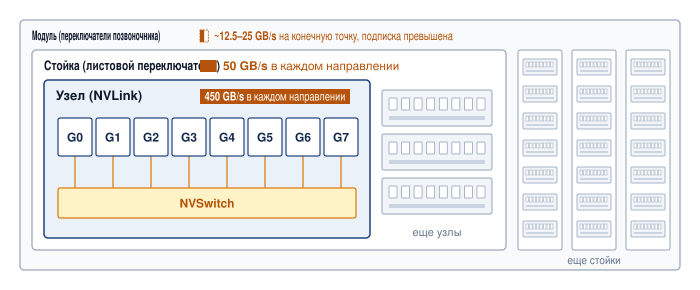
Для коллектива из 4 GPU маршрутизация делает эту стоимость конкретной (Рисунок 8). В показанной перегруженном fabric рассредоточение рангов между стойками A и B вынуждает путь из 3 хопов leaf-spine-leaf с эффективной пропускной способностью около 12.5 GB/s на конечную точку — это доля в конкурирующих восходящих каналах, а не физическая скорость линии. Размещение всех четырёх рангов (G0–G3) под leaf-коммутатором стойки A избегает этих разделяемых восходящих каналов и даёт около 50 GB/s на GPU при принятых в примере предположениях о нагрузке.
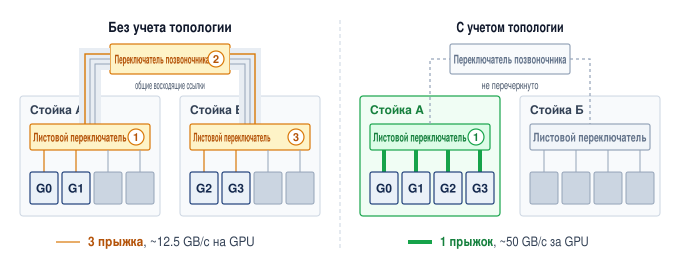
8.6.2 Алгоритмы размещения
Показанная разница пропускной способности в 4× раз между путём в 1 хоп через leaf и маршрутом в 3 хопа через spine (Рисунок 8) растягивает компоненту передачи во столько же раз, когда время передачи определяется пропускной способностью. Пересечение fabric spine не вносит этот коэффициент независимо от нагрузки и топологии. Превышает ли коммуникация вычисления, зависит также от модели и графика перекрытия, а повторяющиеся обмены могут усиливать проявленную стоимость. Алгоритмы топология-осознанного размещения назначают задачи на узлы, снижающие эту стоимость, превращая упаковку ресурсов в графовую оптимизацию над физической топологией. Простая стоимость локальности, определяемая в Уравнение 2, штрафует размещения, охватывающие несколько топологических доменов:
где
Более изощрённые алгоритмы различают коммуникационные требования разных стратегий параллелизма. Частые обмены активациями при тензорном параллелизме требуют домена с высокой пропускной способностью и низкой задержкой, соответствующего измеренному коммуникационному бюджету; этот домен необязательно совпадает с одним сервером. Параллелизм по конвейеру обменивается активациями через границы стадий, а не между каждым слоем, но его устойчивость к задержке линий зависит от размера микробатча и графика конвейера. Синхронизация градиентов при параллелизме по данным может перекрываться с вычислениями, что делает более широкое размещение возможным, пока проявленная коммуникация остаётся в бюджете. Эти паттерны направляют размещение, не устанавливая универсального ранжирования для каждой модели или fabric.
Algorithm 1 объединяет ограничение «всё или ничего» (gang) из Глава 8.4.3, стоимость локальности из Уравнение 2 и иллюстративное отображение параллелизма на топологию. Алгоритм строит допустимые отображения рангов, оценивает каждое размещение и выбирает наименьшую иллюстративную оценку локальности, оставляя задачу в очереди, если ничего не подходит. Этот суррогат не гарантирует минимального времени коммуникации или времени завершения. Реализация в масштабе парка должна ограничивать этот поиск эвристиками, а не перечислять каждое размещение.
Алгоритм 1 Размещение с учётом топологии
Требуется: задача, запрашивающая
Гарантируется: допустимое размещение по принципу «всё или ничего» с наименьшей иллюстративной оценкой локальности либо ожидание задачи в очереди
1:перечислить варианты размещения: множества из
2:оставить только варианты с отображением рангов, удовлетворяющим коммуникационным ограничениям тензорного, конвейерного параллелизма и параллелизма по данным
3:если нет допустимого варианта размещения то
4:оставить задачу в очереди, не удерживая ускорители ▷ предотвращает взаимоблокировку из-за удержания ресурсов при ожидании
5:
6:вернуть размещение отсутствует
7:конец условия
8:для каждого допустимого варианта выполнить
9:использовать допустимое отображение рангов: тензорно-параллельные ранги внутри домена NVLink, стадии конвейера внутри стойки, реплики параллелизма по данным между стойками, где это разрешено
10:оценить вариант по
11:конец цикла
12:
13:вернуть допустимый вариант с наименьшим
Применённое к целой задаче, то же рассуждение упорядочивает стратегии размещения. Задержки в этом сравнении иллюстративны, а не выведены. Они построены так, чтобы оставаться выше границы пропускной способности кольцевого AllReduce для данного объёма данных, и показывают порядок, в котором размещение устраняет задержку, а не значения, которые читатель мог бы пересчитать из названий топологий. Для синхронизации градиентов в 0,5 GB на 64 GPU случайное размещение охватывает несколько стоек и fabric-коммутаторов и занимает предположительные 120 ms. Каждая следующая стратегия устраняет источник задержки, который оставляет предыдущая. Ограничение группы одной стойкой убирает хопы через spine и снижает задержку до 85 ms. Rail-оптимизированное выравнивание отображает ранги так, что каждый член каждого коллектива находится на одном локальном индексе GPU и, следовательно, на одной сетевой направляющей (rail) (развивается в Глава 8.6.3). Трафик, который ранее перескакивал между направляющими через fabric spine, теперь остаётся внутри коммутаторов одной направляющей, что снижает задержку до 40 ms. Топология-оптимальное размещение дополнительно избегает портов leaf, занятых другими задачами, и достигает 25 ms — снижения в 4.8× (Рисунок 9, где каждая полоса также несёт свою алгоритмическую пропускную способность). Это отношение сравнивает целые коллективы при четырёх предположительных размещениях, поэтому оно не обязано совпадать с отношением пропускной способности линий двухстоечных путей выше.
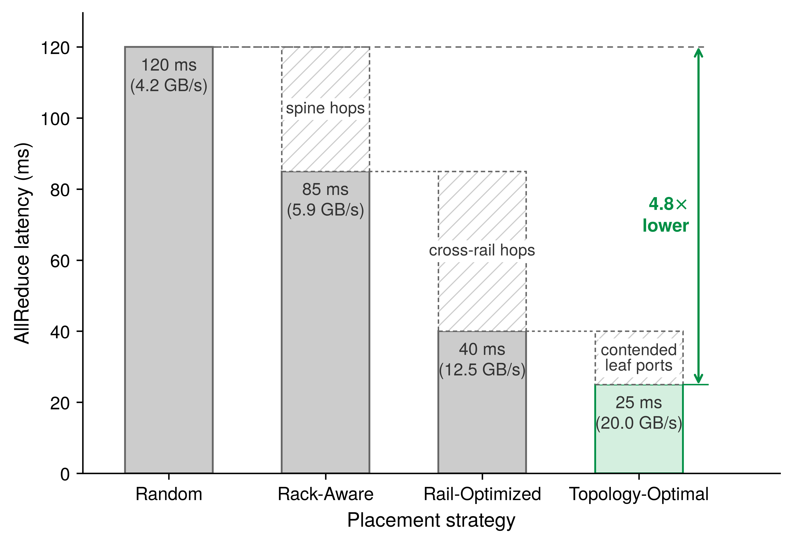
Алгоритм иерархического размещения применяет эти ограничения от самого ограничительного коммуникационного домена наружу, сопоставляя каждое измерение 3D-параллелизма с уровнем fabric, который его трафик может выдержать (Рисунок 10). В показанном парке он размещает каждую группу тензорного параллелизма внутри узла, соединённого NVLink, где послойные обмены активациями идут на 450 GB/s. Он размещает последовательные стадии конвейера под одним leaf-коммутатором, где границы стадий пересекаются на 50 GB/s. Реплики параллелизма по данным он распределяет между стойками только тогда, когда однократная за шаг синхронизация градиентов укладывается примерно в 12.5–25 GB/s на конечную точку, что оставляет переподписанный fabric spine. Такое выравнивание снижает дорогостоящие пересечения границ, но одно лишь размещение не может зарезервировать полную бисекционную пропускную способность fabric против других задач.
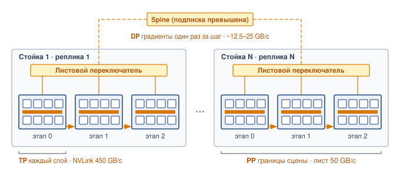
Перебор всех возможных вариантов размещения задания на 256 GPU в кластере из 10 000 GPU комбинаторно неразрешим, поэтому промышленные планировщики полагаются на эвристики. Распространённые варианты: жадные алгоритмы, строящие размещение снизу вверх (сначала заполняются домены NVLink, затем стойки, затем распределяются между стойками), алгоритмы поиска по дереву с отсечением, которые сначала исследуют наиболее перспективные варианты, и подходы на основе скоринга, оценивающие выборку допустимых размещений и выбирающие лучшее. Долгие задания могут окупить более дорогой поиск, но частые подачи, короткие задания и всплески восстановления тоже расходуют мощность планировщика, поэтому полезным сравнением становится сквозное время завершения, включая задержку размещения, а не только скорость исполнения. Тем же сравнением определяется, как долго задание должно ждать компактного размещения. Удержание задания, пока под одним leaf-коммутатором не освободится достаточно GPU, задерживает его старт, и ожидание оправдано лишь тогда, когда ускоренные коллективные операции вернут больше, чем эта задержка, за время выполнения задания.
Инженерный расчёт 8.2: Влияние размещения на 3D-параллельное обучение
Сценарий: рассмотрим задание обучения на 256 GPU с 3D-параллелизмом: тензорный параллелизм ×8, конвейерный ×4, параллелизм по данным ×8.
Хорошее размещение (с учётом топологии):
- Группы тензорного параллелизма: 32 группы по 8 GPU, каждая confined в одном 8-GPU узле (NVLink: 450 GB/s в каждом направлении)
- Стадии конвейера: 4 последовательных узла в одной стойке (1 хоп через коммутатор, InfiniBand: 50 GB/s в каждом направлении)
- Реплики параллелизма по данным: 8 стоек (3 хопа через коммутатор по путям leaf-spine-leaf)
Плохое размещение (без учёта топологии):
- Группы тензорного параллелизма разбиты между 2 узлами (InfiniBand вместо NVLink)
- Стадии конвейера разбросаны по стойкам (3 хопа через коммутатор вместо 1)
- Реплики параллелизма по данным распределены случайно
Математика: одна лишь коммуникация тензорного параллелизма иллюстрирует влияние. При NVLink с пропускной способностью 450 GB/s в каждом направлении передача активации объёмом 1 GB занимает примерно 2.2 ms. По InfiniBand при 50 GB/s та же передача занимает примерно 20 ms — замедление в 9× раза.
Системный вывод: этот расчёт оценивает только тензорно-параллельную составляющую плохого размещения. Разбиение группы тензорного параллелизма между узлами замедляет каждый обмен активациями в 9× раза, а группа выполняет такие обмены на каждом слое трансформера каждого шага, так что штраф умножается с глубиной модели, а не проявляется однократно. Сколько из этого доходит до времени шага, зависит от того, какая часть обмена была скрыта за вычислениями, и именно поэтому иерархическое размещение отдаёт тензорно-параллельным группам самый быстрый уровень в первую очередь. Разбросанные стадии конвейера и реплики параллелизма по данным добавляют свои штрафы сверху, и планировщик должен профилировать задание целиком, прежде чем приписывать размещению выигрыш в пропускной способности.
8.6.3 Планирование с учётом rail-оптимизации
Даже когда два узла находятся в одном поде, размещение соответствующих шардов параллелизма по данным на несовпадающих локальных индексах GPU заставляет их градиентный коллектив пересекаться между сетевыми rail через spine вместо того, чтобы оставаться на одном rail-коммутаторе. В rail-оптимизированных топологиях соответствующие позиции GPU на разных узлах соединяются параллельными сетевыми «рельсами» (rail), которые подходящее отображение рангов может использовать одновременно. Сбалансированная пропускная способность зависит от распределения трафика по этим путям, а не от концентрации на их подмножестве. Удержание коллективной группы на одном rail исключает межрельсовые передачи для этой группы, тогда как размещение других групп определяет, сколь значительной долей rail-ёмкости придётся делиться.
↩︎ Rail-оптимизированные архитектуры fabric и изоляция трафика между rail установлены в Rail-оптимизированная топология.
Rail-осознанное планирование назначает соответствующие шарды модели в репликах параллелизма по данным на GPU, подключённые к одному rail. Когда внутрисистемный параллелизм разбивает реплику модели между восемью GPU узла, каждый градиентный коллектив параллелизма по данным редуцирует только один шард
Выравнивание по rail, таким образом, действует на двух уровнях, и они относятся к разным компонентам. Внутри узла это решение об отображении рангов. Лаунчер или фреймворк должны давать каждому члену группы параллелизма по данным один и тот же локальный индекс GPU на его узле — именно это устраняет межрельсовые хопы в сравнении размещений выше. Отображение, кладущее шард
Между узлами выравнивание по rail ограничивает планировщик только тогда, когда выделения меньше узла. Когда каждая стадия конвейера реплики занимает целый узел и каждый узел соединяет локальный GPU
8.6.4 Обнаружение топологии и динамическая адаптация
Когда отказывает spine-коммутатор или деградирует оптический канал и начинает ретранслировать, статический конфигурационный файл вроде topology.conf в Slurm или метки узлов Kubernetes всё ещё рапортует стойку как здоровую и полноскоростную. Планировщик размещает коммуникационно-тяжёлые ганги на испорченном пути. Работающее во время исполнения обнаружение топологии дополняет статические карты сведениями, которые сообщают операционная система и библиотеки устройств. NCCL использует системную топологическую информацию, включая иерархию PCIe и сетевые устройства, доступные через пути вроде /sys/class/infiniband, чтобы определять коммуникационные пути и близость сетевых интерфейсных карт (NIC). Найденный граф описывает заявленную связность; проверки здоровья и измерения трафика должны установить, действительно ли эти пути дают ожидаемую производительность.
Топология кластера — это операционное состояние, а не фиксированная схема. Отказы оборудования, окна обслуживания и троттлинг из-за нагрева меняют пути и эффективную ёмкость, доступную планировщику. Отказ spine-коммутатора в резервированной Clos-сети может сохранить связность, убрав при этом ёмкость. Влияние на AllReduce параллелизма по данным нашей модели с 175 млрд параметров зависит от перенаправления, конкурентного трафика и того, какую пропускную способность задание использовало. Если отказ увеличивает открытое время коммуникации, планировщик должен сравнить продолжение на сниженной пропускной способности со стоимостью перехода на более здоровое выделение. Деградировавший канал может также проходить бинарные проверки «вверх/вниз», режя фактическую пропускную способность, поэтому планировщику нужны свидетельства производительности — счётчики ретрансляций и коллективная пропускная способность, линк-уровневая телеметрия из Телеметрия уровня линий, — а не только достижимость.
Миграция через контрольную точку и перезапуск тратит время на сохранение состояния, освобождение старого выделения, получение нового и восстановление исполнения. Её ценность зависит от измеренной стоимости перехода и оставшейся работы. Если миграция занимает 10 минут и устраняет устойчивую потерю 20 процентов пропускной способности, каждая последующая минута обучения возвращает пятую часть минуты прогресса, так что переход окупается менее чем за час последующего обучения. Это сравнение предполагает, что здоровое назначение доступно и выигрыш сохраняется. Практичная политика также учитывает задержку в очереди и требует свидетельств того, что размещение вызывает замедление — например, растущего коллективного времени на затронутом пути, — прежде чем перемещать задание.
Практический случай 8.2: Проверки здоровья с учётом производительности (2021)
Контекст: рассказ OpenAI о масштабировании Kubernetes описывает автоматические проверки здоровья, которые удаляют плохо себя ведущие узлы из пула, доступного планировщику (Sigler 2021 г.).
Механизм: пассивные проверки следят за достижимостью, дисками и ошибками GPU, но коды ошибок не раскрывают каждую проблему железа или драйвера. Активные GPU-тесты проверяют устройство перед допуском обычных рабочих нагрузок и периодически в течение его жизни.
Решение: узлы входят с предварительным taint — меткой, отталкивающей обычные поды, — что блокирует обычное планирование до прохождения тестов. Проваленные пассивные проверки кордонят узел, помечая его непригодным для новой работы; более серьёзные отказы могут порождать запросы на выселение.
Системный урок: одна лишь достижимость — недостаточный тест для допуска. Планировщику нужны свидетельства здоровья, отражающие ресурсы, от которых зависят его задания, вместе с политикой удаления подозрительных узлов из размещения.
Общая идея планирования — карантин: когда данные времени исполнения говорят, что узел, стойка или канал деградировали, планировщик должен прекратить размещать там чувствительную работу, даже если номинальный счётчик ресурсов всё ещё выглядит доступным. Kubernetes реализует этот паттерн через taints и tolerations,9 тогда как кластеры Slurm обычно используют состояния drain, node features или правила партиций.
↩︎ Медленные компоненты, проходящие проверки живости при задании темпа каждого синхронного шага, и как отличать их от fail-stop отказов, установлены в Страгглеры против fail-stop-отказов.
Дополнительная проблема — как задания адаптируются, когда доступные ресурсы меняются динамически. Вместо трактовки выделения ресурсов как фиксированного на время жизни задания эластичное обучение позволяет логическим заданиям расти, сжиматься и восстанавливаться.
8.7 Эластичное планирование
Когда спрос кластера колеблется, жёсткое выделение создаёт две категории waste. В часы затишья задание на 256 GPU не может поглотить простаивающие ресурсы, чтобы ускорить обучение. В часы пиковой нагрузки то же задание не может освободить избыточные ресурсы для более приоритетной работы, не будучи полностью вытесненным. Единственные варианты планировщика — «оставить ему все ресурсы» или «убить его целиком», без промежуточных.
Эластичное планирование расширяет этот бинарный выбор. Механика восстановления эластичного обучения показывает, как распределённое задание может менять число воркеров, адаптировать батч-политику и перестраивать коммуникационную группу после отказа. С точки зрения планировщика та же способность решает задачу распределения ресурсов при колеблющемся спросе. Задание обучения может стартовать на 128 GPU, масштабироваться до 256, когда ресурсы освободятся, и сжиматься до 192, когда придёт более приоритетная работа, — при условии, что каждое выделение поддерживает жизнеспособную группу воркеров. Изменение размера может приостановить обучение и перезапустить воркеров из сохранённого состояния. Перезапускаются ли процессы воркеров, зависит от фреймворка; TorchElastic перезапускает свою группу воркеров при изменении состава. Поэтому планировщик выбирает среди поддерживаемых размеров выделения, каждый со своей стоимостью перехода, а не предполагает непрерывный прогресс при любом уровне ресурсов.
↩︎ Подстройка размера батча и скорости обучения и сжатие коммуникационной группы при эластичном восстановлении установлены в Механизмы адаптации при восстановлении.
8.7.1 Контракт планировщик–фреймворк
Если планировщик отнимает у работающего задания четыре узла, резко убивая их контейнеры, или добавляет четыре свободных узла без запуска нового rendezvous, уцелевшие ранги трактуют изменение как фатальный таймаут коллектива, а не как эластичное изменение размера. Изменение размера живого задания без его краха требует явного контракта между планировщиком и фреймворком обучения. Для планового изменения размера планировщик и фреймворк координируют высвобождение ресурсов через определённые сигналы и согласованное окно адаптации. Неожиданные отказы могут миновать это окно, поэтому фреймворк должен также восстанавливаться из валидного сохранённого состояния. Его путь восстановления перестраивает коммуникационные группы и либо сохраняет глобальный батч, либо применяет валидированную политику размера батча и скорости обучения. Жизненный цикл членства воркеров, таким образом, ведёт себя как конечный автомат с центром в активном обучении (Рисунок 11). Простаивающие GPU запускают масштабирование вверх, вытеснения — вниз, а таймауты хостов или ошибки ECC перенаправляют ранги на замену воркеров; каждый путь возвращается к активному обучению, как только коммуникационная группа перестроена или присоединился резервный узел.
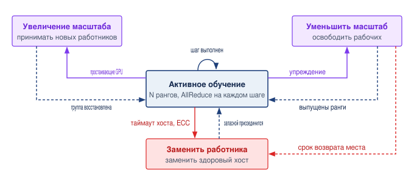
С точки зрения планировщика этот контракт определяется тремя управляющими параметрами: эластичным диапазоном, стоимостью перехода и кривой эффективности масштабирования. Эластичный диапазон, $[, ], задаёт нижнюю и верхнюю границы числа воркеров; раскладка параллелизма задания определяет допустимые приращения выделения внутри них. Стоимость перехода включает любые контрольные точки, перезапуски, перераспределение состояния и rendezvous, требуемые средой исполнения. Измерение полного прерывания определяет, как часто планировщик может триггерить перераспределения, прежде чем накладные расходы перехода съедят любой выигрыш в пропускной способности. Наконец, кривая эффективности масштабирования квантифицирует пропускную способность при каждом числе воркеров относительно линейного масштабирования. Предельная пропускная способность каждого добавленного воркера следует из этой кривой и указывает, даёт ли выделение простаивающих GPU этому заданию больше суммарного прогресса, чем удержание их для собираемой ганг-планируемой рабочей нагрузки. Вместе эти параметры дают планировщику количественные границы, необходимые для динамического изменения размера заданий без трактовки эластичности как бесплатной ёмкости.
Планировщик должен также учитывать влияние числа воркеров на размер глобального батча (
--nnodes=4:16 настраивает эластичную группу воркеров на приём от 4 до 16 узлов, то есть от 32 до 128 воркеров. Отдельный кластерный планировщик или оператор должен приобретать, запускать и освобождать узлы внутри этого диапазона.
# Launch elastic training with min 32 to max 128 workers
torchrun \
--nnodes=4:16 \
--nproc_per_node=8 \
--rdzv_backend=c10d \
--rdzv_endpoint=head-node:29500 \
--max_restarts=3 \
train.pyTorchElastic задаёт эластичный диапазон в конфигурации запуска как минимальное и максимальное число узлов (Список 2). Там спецификация --nnodes=4:16 настраивает rendezvous и диапазон членства воркеров TorchElastic как от 4 до 16 узлов (от 32 до 128 воркеров при 8 процессах на узел). Он не приобретает и не меняет размер кластерных ресурсов; отдельный кластерный планировщик или оператор должен размещать узлы и запускать или останавливать эластичные агенты по мере изменения ёмкости.
Системный взгляд 8.2: Эластичное и жесткое планирование
Рассмотрим перегруженный кластер, где job с параллелизмом по данным на 128 GPU, не имеющая ограничений на число воркеров со стороны параллелизма по модели, ждёт полной gang-аллокации 8 часов. Это первое сравнение предполагает, что пропускная способность растёт линейно с числом воркеров, одинаковый учебный прогресс на обработанный пример и пренебрежимо малые накладные расходы на изменение размера; позднее решение о масштабировании ослабит предположения о пропускной способности и переходах.
Жёсткое планирование (rigid): ждать 8 часов, затем обучать 24 часов на полной пропускной способности. Общее время на часах: 32 часов.
Эластичное планирование (elastic) (минимум 32, максимум 128):
- Начать немедленно с 32 GPU (пропускная способность = 25 percent от полной)
- На 2-м часу, когда освободятся 64 GPU, масштабировать до 64 (пропускная способность = 50 percent)
- На 8-м часу, когда освободится полный gang и жёсткая задача также начнётся, масштабировать до 128 (пропускная способность = 100 процентов)
Работа, выполненная за 8 часов ожидания в очереди, в часах обучения в полном масштабе:
- Часы с 0 по 2: 25 percent пропускной способности
2 часов = 0.5 - Часы с 2 по 8: 50 percent пропускной способности
6 часов = 3 - Итого: 3.5 часов эквивалентной работы в полном масштабе
Эластичная задача завершается примерно за 28.5 часов (8 часов обучения в частичном масштабе плюс 20.5 часов в полном масштабе), экономя 3.5 часов по сравнению с жёстким планированием. Это улучшение, около 11 percent, целиком происходит из продуктивного использования ресурсов в течение того времени, которое иначе простаивало бы в очереди.
Планировщик не может считать любое число воркеров допустимой эластичной конфигурацией. Параллелизм по модели ограничивает шаг изменения аллокации, когда политика изменения размера сохраняет тензорную и конвейерную раскладки фиксированными и добавляет или убирает целые реплики параллелизма по данным. Для задачи на 175 млрд параметров, опирающейся на тензорный параллелизм степени 8 внутри каждого узла и 8 конвейерных стадий между узлами, эта политика работает на уровне целой реплики модели в 64 GPUs. Глубина конвейера 8 — наименьшая степень двойки, при которой доля каждого GPU смешанного тренировочного состояния Adaptive Moment Estimation (Adam) помещается в его HBM, когда это состояние не шардировано между репликами. Раскладка из Распределённое обучение вместо этого использует более мелкий конвейер и шардирует состояние оптимизатора по группе параллелизма по данным с ZeRO (Эффективное по памяти параллелизм по данным с ZeRO и FSDP). Эта задача сознательно отказывается от шардированной раскладки. Содержание состояния каждой реплики самодостаточным стоит памяти, но позволяет планировщику добавлять или убирать реплику без перераспределения шард оптимизатора всех остальных реплик. Примеры на 175 млрд параметров в Глава 8.7.3 предполагают такие самодостаточные реплики. Задача может масштабироваться между 128 узлами (1,024 GPU) и 32 узлами (256 GPU) по одной реплике за раз, меняя степень параллелизма по данным. Удаление одного GPU из тензорно-параллельной группы, напротив, потребовало бы новой раскладки шардирования и перераспределения тренировочного состояния. Изменение степени конвейера также потребовало бы перепартиционирования стадий и перестройки конвейерного расписания. Среда исполнения, поддерживающая такие переходы, может предоставить их планировщику, но их осуществимость и измеренные издержки относятся к контракту изменения размера, а не следуют автоматически из эластичности параллелизма по данным.
Стоимость переходов также ограничивает частоту изменения размера со стороны планировщика. Каждое событие масштабирования может прервать полезную работу, пока фреймворк восстанавливает коммуникационную группу и восстанавливает или перераспределяет состояние. Длительность должна быть измерена для выбранной среды исполнения и пути контрольных точек. Планировщик должен амортизировать эти издержки на последующую длительность запуска, поэтому малые шаги изменения размера оправданы, только если задача будет работать в новом масштабе значительно дольше окна перехода — тест, который Глава 8.7.3 применяет к политикам изменения размера.
8.7.2 Интеграция с планировщиком
Без интеграции с планировщиком задача, объявляющая эластичный диапазон
Каждое действие должно уважать контракт фреймворка. Самое значимое из трёх — изящное вытеснение (graceful preemption): когда приходит работа с более высоким приоритетом, планировщик сначала сжимает эластичную задачу к
8.7.3 Эластичные политики масштабирования
Добавление ресурсов к запущенной задаче не всегда ускоряет время до сходимости. Накладные расходы на коммуникацию и синхронизацию ограничивают выигрыш в пропускной способности, требуя от планировщика соблюдения эластичных политик масштабирования на основе эмпирических кривых эффективности, а не одной лишь доступности ресурсов. При фиксированной глобальной работе на шаг кривая эффективности масштабирования задачи
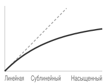
Пропускная способность отходит от идеального линейного масштабирования и выходит на насыщение.
Задача на 175 млрд параметров демонстрирует эти режимы собственными числами главы. Смоделированная при фиксированном глобальном батче с разложением времени шага из закона парка (Уравнение (3)), её эффективность масштабирования падает с 87 percent при 256 GPU до 83 percent при 1,024 GPU и 69 percent при 4,096 GPUs (Рисунок 12, панель a). Эффективность падает, однако четырёхкратное увеличение с 1,024 до 4,096 GPUs всё же поднимает пропускную способность в 3.3×, так что более низкая эффективность — это убывающая предельная отдача, а не замедление. Панель (b) локализует потери. Коммуникация тензорного параллелизма сокращается вместе с вычислениями каждого воркера, поэтому её доля в шаге никогда не поднимается выше 11 percent. Спад вместо этого создаётся заполнением и опустошением конвейера и нескрытой синхронизацией градиентов, которые занимают примерно фиксированное время на шаг, в то время как доля каждого воркера в батче сокращается. Пузырь конвейера растёт быстрее всех трёх — по причине, которую делает явной доля пузыря
Затенённое окно от 256 до 1,024 GPU — это, следовательно, выбор политики, а не интервал, выведенный из одних лишь этих эффективностей. Минимальная аллокация могла бы следовать из срока завершения или объявленного ресурсного контракта задачи. Она не следует из недостаточности вычислений на воркера при меньшем масштабе, поскольку при фиксированной глобальной работе меньше воркеров обычно выполняют больше работы каждый. Верхний предел точно так же требует сравнения дополнительного полезного прогресса со стоимостью изменения размера и ценностью обслуживания задач из очереди. Реальный планировщик должен получать эти входные данные из профилирования и целевого качества рабочей нагрузки.
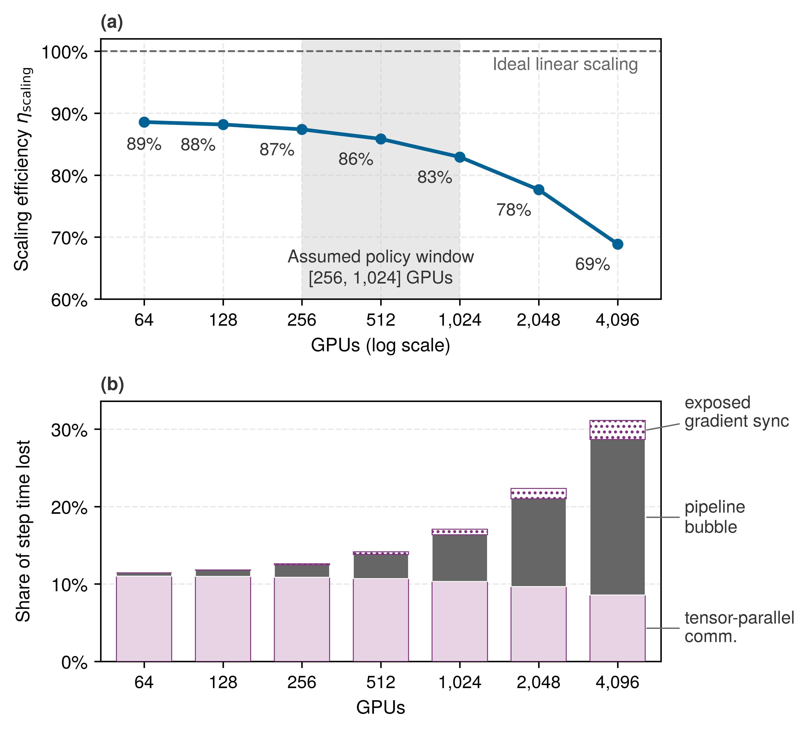
Эта логика распространяется и на временное измерение, где планировщик должен сопоставлять немедленный прогресс меньшего выделения с ожиданием большего. Если задача на 512 GPU может начаться сразу на 128 GPU или подождать полный запрос, лучший выбор зависит от интегрирования пропускной способности по времени. Накладные расходы на изменение размера (стоимость остановки, сохранения контрольной точки и перезапуска, когда этого требует среда исполнения) должны быть амортизированы на последующей продолжительности работы. Политика «возможностного масштабирования» (opportunistic scaling), изменяющая размер задачи каждый раз, когда освобождается один узел, может потерять своё преимущество в пропускной способности из-за повторяющихся прерываний, выполнив меньше полезной работы, чем стабильное выделение.
Инженерный расчёт 8.3: Решение об эластичном масштабировании
Сравнение упругого и жёсткого планирования выше предполагало линейное масштабирование и бесплатное изменение размера; в этом решении оба допущения отброшены. Рассмотрим обучающую задачу с целевым размером батча, которой для максимальной пропускной способности среди рассмотренных конфигураций требуется 512 GPU. Оцениваются три стратегии планирования в окне продолжительностью 24 hours.
Дано: пропускная способность на 128 GPUs составляет 1 эпох/час (базовая). Пропускная способность на 256 GPUs составляет 1.8 эпох/час (90 percent эффективности масштабирования относительно этой базовой). Пропускная способность на 512 GPUs составляет 3.2 эпох/час (80 percent эффективности масштабирования). Стоимость изменения размера составляет 10 minutes (0.17 hours) на сохранение контрольной точки, переразбиение и перезапуск.
Стратегия 1 (немедленный старт, без масштабирования): задача стартует сразу на 128 GPUs и работает все 24 hours. Всего работы:
Стратегия 2 (ожидание полного выделения): задача ждёт в очереди 4 hours, пока не освободятся 512 GPUs, затем работает 20 hours. Всего работы:
Стратегия 3 (упругий шаг вверх): задача стартует сразу на 128 GPUs. Через 4 hours освобождается мощность, позволяющая стратегии 2 начаться, но упругая политика ограничивает рост 256 GPUs, чтобы оставшиеся GPU остались доступными для задач в очереди. Задача приостанавливается, масштабируется и продолжается. Фаза 1:
Упругая стратегия выполняет почти в 1.7× больше эквивалентной работы в эпохах, чем немедленный запуск в малом масштабе, но всё ещё отстаёт от полного выделения примерно на 38 percent. Это сравнение учитывает эпохи данной задачи, а не потраченные на них GPU-часы. Стратегия 2 держит вдвое больше GPU, чем стратегия 3, на протяжении большей части окна и работает с эффективностью масштабирования 80 percent против 90 percent у стратегии 3. Поэтому упругая задача выполняет больше работы на GPU-час, а оставляемые ею свободные GPU обслуживают задачи в очереди. Какая стратегия выигрывает, зависит от того, ценит ли парк время завершения этой задачи или суммарную работу по всем задачам. Этот разрыв сокращается, когда растут ожидания в очереди или пиковая мощность остаётся дефицитной. Накладные расходы на изменение размера составляют лишь 10 minutes, поэтому стратегия шага вверх сохраняет преимущество перед немедленным запуском в малом масштабе, если только медленная передача контрольной точки или компиляция не растянут эти расходы сверх примерно 9 hours.
Размещение и упругость определяют, какие выделения возможны и сколько полезного прогресса они приносят конкурирующим задачам. Экономика парка добавляет цену этих решений. Каждое размещение, вытеснение и резервирование потребляет мощность, которая могла бы обслуживать другую рабочую нагрузку, поэтому планировщик должен сравнивать и полезный прогресс, и альтернативные издержки.
8.8 Оптимизация затрат
Простой ускоритель в корпоративном парке несёт операционные расходы каждый час — считает ли он или блокирован в очереди, — превращая решения о размещении и вытеснении в прямые финансовые компромиссы. Оркестратор переводит эту связь между утилизацией и деньгами из Глава 8.1 в онлайн-сигнал планирования, балансируя цены ресурсов, обязательства по резервированию, риск прерываний, стоимость контрольных точек и сроки задач, чтобы решить, допускать, откладывать, вытеснять или изменять размер работы. Планирование капитала, доходность портфеля, атрибуция затрат и совокупная стоимость владения на протяжении жизненного цикла — это более крупные и медленные решения, разбираемые в Экономика парка и утилизация; планировщик потребляет их результаты в виде цен и ограничений.
При фиксированной утилизации простаивающая мощность растёт линейно с размером парка, поэтому долларовая стоимость неэффективности планирования растёт с каждой закупкой (Рисунок 13). При 10,000 GPU, работающих с утилизацией 50 percent, годовые потери достигают $87.6M в рамках учётного сценария главы — $2/GPU-час. Опубликованные измерения показывают, что такая недоутилизация возникает в продакшене. Исследование кластера Microsoft Philly (Jeon и др. 2019 г.) измерило среднюю утилизацию GPU примерно 52 percent. Заштрихованная полоса от 30 до 70 процентов на рисунке — иллюстративный рабочий диапазон для модели затрат, а не универсальное эмпирическое утверждение обо всех продакшен-кластерах. Переход от утилизации 50 percent к 80 percent — улучшение, оценённое во вступлении главы, — возвращает свыше $52M в год в эквивалентной стоимости мощности. Это те же 3,000 GPU-эквивалентов, которые вступление считало восстановимой долей простоя 30 percent, и они становятся денежной экономией только тогда, когда позволяют избежать оплачиваемого использования или запланированной закупки.
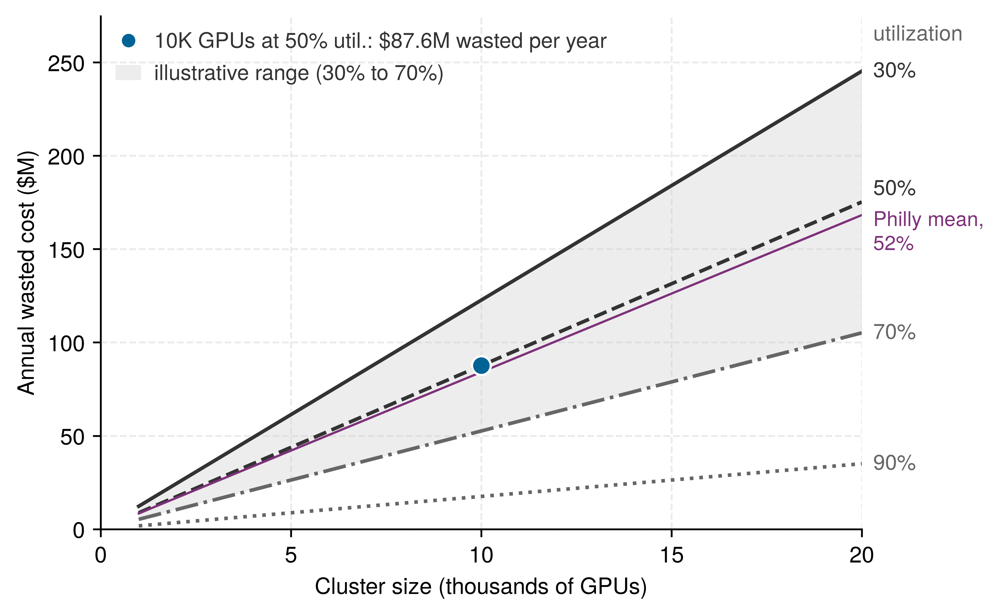
Возврат простаивающих мощностей требует оценивать каждый рычаг планирования с учётом вызываемых им нарушений. Поскольку возврат GPU у запущенных задач — самый прямой способ допустить более ценную работу, сначала рассматривается стоимость одного вытеснения и каскадов, которые оно может запустить. Дисконтированные спотовые мощности затем снижают почасовую цену обучения, устойчивого к перезапуску, диверсификация и политики контрольных точек не дают коррелированным изъятиям свести этот дисконт на нет, а уровни резервирования мощностей вместе с политиками стоимости рабочей нагрузки маршрутизируют задачи между зарезервированными, по требованию и прерываемыми пулами.
8.8.1 Стоимость вытеснения и каскады
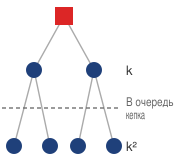
Каждое вытеснение может вызвать новые вытеснения, так что одно допущение затрагивает
Когда высокоприоритетная задача входит в насыщенный кластер, планировщик должен решить, какие запущенные рабочие нагрузки завершить, чтобы освободить ресурсы. Это решение редко бывает изолированным. В плотно упакованных кластерах вытеснение среднеприоритетной задачи ради высокоприоритетного запроса часто запускает каскад вытеснений: вытесненная задача немедленно пытается перепланироваться, смещая низкоприоритетные нагрузки. Нарушение множится с каждым уровнем. Если срочная задача смещает
Инженерная стоимость вытеснения выходит за пределы задержки планирования. Накладные расходы на вытеснение зависят от пути выхода. Успешная корректная контрольная точка добавляет время сохранения и перезапуска с сохранением выполненного прогресса; принудительная остановка может вместо этого отбросить работу с момента последней надёжной контрольной точки. Рассмотрим такую жертву — принудительное прерывание дообучения на 64 GPU нашей модели со 175 млрд параметров. Сценарий предполагает потерю работы, эквивалентную 15 minutes исполнения. Затем перезапуск повторяет шаги холодного рестарта из бюджета восстановления в Процедуры восстановления, без шага обнаружения, поскольку задачу остановил сам планировщик. Эти шаги занимают 3 minutes на перезапуск, 24.5 seconds на загрузку контрольной точки объёмом 2.45 TB вместе с состоянием оптимизатора и 2 minutes прогрева, пока заполняются конвейеры данных и завершаются just-in-time (JIT) компиляция и инициализация среды исполнения. Расчёт оценивает повторное исполнение и перезапуск в рамках одного и того же выделения; успешное финальное сохранение при этом не тарифицируется.
Восстановление распределённого конвейера данных также входит в контракт вытеснения. Контрольная точка должна сохранять состояние сэмплирования и загрузчика, необходимое для возобновления задуманного порядка данных, наряду с состояниями модели и оптимизатора. Если путь перезапуска опускает это состояние, он может повторить или пропустить примеры и утратить точное воспроизведение траектории обучения. Другой порядок перемешивания сам по себе не доказывает статистическую порчу, но политика восстановления должна указывать, какие изменения допустимы. Поэтому планировщику следует измерять восстановление и прогрев конвейера как часть стоимости восстановления, а не предполагать, что одной загрузки весов модели достаточно, чтобы задача снова была продуктивной.
Итоговые накладные расходы в 20.4-minute объединяют отброшенное исполнение — их большую часть — со временем перезапуска, загрузки и прогрева; это не измерение непрерывной активности ядер после вытеснения. Разбросанные по запуску, они относятся к координационному члену Закона парка
8.8.2 Спотовые инстансы и прерываемые виртуальные машины
Аренда облачных GPU по требованию для многонедельного обучения защищает задачу от изъятия провайдером, но платит полную цену, даже если свободные GPU простаивают в дата-центре провайдера. Аренда прерываемой мощности снижает почасовую ставку на 60–90 percent, но позволяет провайдеру вернуть эти GPU по уведомлению на условиях best-effort. Облачные провайдеры продают такие свободные мощности через спотовые инстансы10 (AWS) или прерываемые виртуальные машины (GCP), где фактические скидки зависят от ресурса и рынка. Эталонные окна прерывания варьируются от до 30 seconds для остановки прерываемых VM GCP до 2 minutes для уведомлений об остановке или завершении AWS, с доставкой по принципу best-effort, а не гарантированным интервалом восстановления. При ставках сценария $0.70/GPU-hour вместо $2/GPU-hour разобранный ниже пример показывает, как экономия может превысить половину стоимости по требованию после учёта предполагаемых накладных расходов на прерывание.
Жизнеспособность спотовых инстансов для обучения ML зависит от двух факторов, определяющих, превращается ли скидка в реальную экономию. Первый — стоимость каждого прерывания (накладные расходы на контрольную точку плюс время перезапуска плюс потерянная работа с момента последней контрольной точки). Второй — частота прерываний (она зависит от типа инстанса, региона, времени суток и общего спроса в облаке). Уравнение 3 даёт эффективную стоимость спотового обучения:
где
Спотовая экономия и инфраструктура отказоустойчивости связаны. Механизмы отказоустойчивости (частое асинхронное сохранение контрольных точек, быстрая загрузка контрольных точек, эластичное восстановление) делают спотовую мощность пригодной к использованию, снижая стоимость каждого прерывания. Эластичное обучение может возобновить логическую задачу с меньшим числом воркеров после изъятия — при условии, что оставшееся выделение жизнеспособно, — хотя фреймворк всё же может перезапустить процессы воркеров и восстановить состояние из контрольной точки, так что эластичность снижает стоимость восстановления, а не устраняет её. Поэтому та же инфраструктура приносит двойную отдачу: она защищает от потерь оборудования и позволяет сознательно использовать прерываемую мощность. Обе выгоды требуют измерения. Планировщик сочетает наблюдаемые частоты прерываний, стоимость восстановления и сохранённый прогресс обучения с ценами ресурсов, чтобы оценить, окупают ли спотовые сбережения дополнительную инфраструктуру восстановления. Те же данные поддерживают оценку защиты от отказов оборудования; ни одна из выгод не следует из самой скидки или механизма контрольных точек.
8.8.3 Стратегии спотовых инстансов для обучения ML
Спотовая мощность оправдывает себя лишь тогда, когда прерывание редко удаляет всю задачу целиком, поэтому планировщики, использующие её, диверсифицируют источники мощности, а не просто повторяют попытку после сбоя. Диверсификация по зонам доступности снижает вероятность одновременного изъятия по всему парку. Облачные провайдеры обычно управляют спотовыми пулами независимо по зонам доступности (AZ). Если задаче обучения требуется 1,024 GPU, выделение их единым блоком в одной зоне подвергает задачу полной остановке, если спотовый пул именно этой зоны будет изъят. Диверсификация независимых задач или мест перезапуска по зонам снижает подверженность одному исчерпанному пулу. Разделение одного синхронного gang-задания по зонам также меняет его пути коммуникации, поэтому перед принятием такого размещения планировщик должен учесть межзонную пропускную способность, задержку и стоимость передачи. Планировщику по-прежнему нужно тщательно моделировать корреляцию: независимые прерывания отдельных инстансов делают крупные одновременные потери маловероятными, но изъятия на уровне пула или зоны могут убрать сотни GPU разом и должны рассматриваться как события эластичного сжатия или переключения, а не как обычные изолированные отказы.
Разнообразие типов инстансов расширяет набор пулов ёмкости, которые может использовать задача, хотя доступность в этих пулах может оставаться взаимосвязанной. Задача, запрашивающая лишь один тип инстансов, не может задействовать свободную ёмкость в другом пуле. Поэтому принятие альтернатив требует списка совместимости, включающего объём памяти, поддержку среды исполнения, коммуникационные пути и измеренную пропускную способность. Инстанс с большим объёмом памяти всё равно может оказаться неподходящей заменой, если его поддержка среды исполнения, коммуникационные пути или пропускная способность отличаются. Планировщик сравнивает для каждой допустимой альтернативы цену и стоимость восстановления на единицу сохранённого прогресса; смешение устройств внутри синхронного ганга также требует учёта неравной скорости воркеров.
Сигналы спотовой ёмкости могут подсказывать размещение, но не обязательно предсказывают частоту прерываний. Например, AWS Spot Placement Score оценивает текущую вероятность того, что запрос ёмкости увенчается успехом в регионе или зоне доступности; он явно не предсказывает риск прерываний. Планировщик может использовать этот сигнал, чтобы выбрать, где запрашивать ёмкость, но оценка числа прерываний в день требует отдельных исторических измерений для данного типа инстансов и региона. Если построенная для конкретной рабочей нагрузки модель восстановления показывает, что накладные расходы от прерываний сводят на нет скидку, планировщик должен перевести задачу на on-demand ёмкость или в другой регион.
Оптимизация частоты контрольных точек для спотовых инстансов расширяет логику надёжности. Формула Янга—Дейли, разработанная в Интервал контрольных точек Юнга—Дейли, моделирует потери от непредсказуемых прерываний, вызванных ли это отказом оборудования или изъятием без пригодного предупреждения. Уведомления провайдера дают дополнительную возможность сохранить состояние, используя окно в 2 minutes на AWS и до 30 seconds на вытесняемых ВМ GCP. Подход с двухуровневым сохранением контрольных точек сочетает периодические контрольные точки — с интервалом, выбранным по модели прерываний данной рабочей нагрузки, — и контрольную точку по мере возможностей, запускаемую уведомлением. Контрольная точка, вызванная уведомлением, сокращает потерянную работу, только если она успевает стать долговременной до изъятия; в противном случае задача восстанавливает последнее долговременное состояние — порождённое ли периодической, асинхронной или инкрементальной контрольной точкой — и повторяет последующую работу. Такое планирование на случай непредвиденного важнее тогда, когда спотовые прерывания коррелируют в пределах пула, а не изолированы на отдельных машинах.
8.8.4 Стратегии резервирования ёмкости
Обязательство по долгосрочной резервированию ёмкости на 100 процентов пиковой нагрузки оставляет дорогие GPU простаивающими при каждом спаде трафика, тогда как опора исключительно на спотовые или on-demand пулы грозит дефицитом ёмкости во время запусков продуктов и внезапными изъятиями в дедлайн-периоды. Чтобы не платить за простаивающие резервы и не морить голодом срочные рабочие нагрузки, организации, полагающиеся на облачную инфраструктуру (или оценивающие собственную ёмкость в экономических терминах), комбинируют три уровня вычислительной ёмкости. Каждый уровень обменивает стоимость и обязательства на доступность и риск прерываний (Таблица 4).
| Уровень ёмкости | Стоимость и обязательства | Доступность и риск прерываний | Наиболее подходящие рабочие нагрузки |
|---|---|---|---|
| Резервируемая ёмкость | Резервирование ёмкости; ценовые скидки требуют отдельного договора о покупке. | Гарантия ёмкости в рамках условий резервирования; запуск всё же требует времени. | Предсказуемые непрерывные нагрузки: инференс 24/7, плановое обучение, CI и регрессионное тестирование, задачи под соглашениями об уровне обслуживания (SLA). |
| On-demand ёмкость | Полная цена без долгосрочных обязательств. | Допуск зависит от доступной ёмкости; выделение ресурсов и запуск добавляют задержку. | Срочное переобучение, интерактивная отладка и короткоживущие задачи, для которых управление спотами не оправдано. |
| Спотовая ёмкость | Скидочная прерываемая ёмкость. | Доступность меняется в зависимости от спроса в облаке, воркеры могут быть изъяты. | Задачи, устойчивые к перезапуску: перебор гиперпараметров, абляции, прерываемое предобучение с контрольными точками и исследовательская работа. |
Сконструированный портфель в Рисунок 14 делит ёмкость на резервируемый уровень, покрывающий постоянную базовую нагрузку в 60 процентов, полосу on-demand между 60 и 80 процентами и прерываемый спотовый уровень, обслуживающий пики до 92 процентов. Организация с 60 процентами стационарной утилизации и 40 процентами пикового спроса может зарезервировать ёмкость на 60 процентов пиковой потребности, использовать on-demand для всплесков, чьи дедлайны допускают задержки допуска и запуска, и использовать споты для устойчивой к перезапуску работы. Эти доли иллюстрируют политику, а не устанавливают оптимальный портфель. Планировщик должен сопоставлять дедлайн и контракт восстановления каждой рабочей нагрузки с уровнем ёмкости. Резервируемая ёмкость может поддерживать стационарную нагрузку инференса или базовое выделение для обучающей задачи, тогда как споты могут поддерживать эластичные реплики или независимые эксперименты, допускающие изъятие. Пик срочного спроса не может быть автоматически отнесён к спотам лишь потому, что он лежит выше резервируемой полосы.
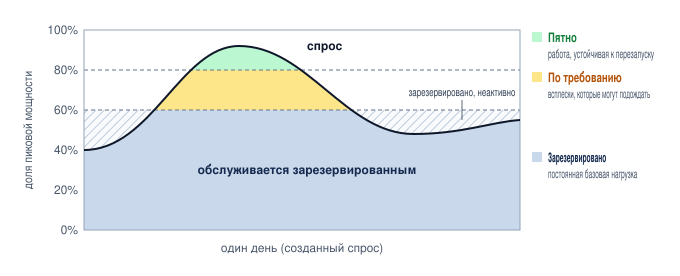
Системный взгляд 8.4: Спотовое обучение или обучение по требованию
Рассмотрим обучение модели на 70B параметров — рабочей нагрузки меньше, чем 175B-эталон этой главы, — на 512 GPUs в течение 14 days. Сценарий фиксирует бюджет событий в 196 interruptions за пробег и трактует каждое как штатное, так что никакой прогресс не воспроизводится заново.
On-Demand: 512 GPUs
Spot (скидка 65 percent, накладные расходы на контрольные точки 5 percent, 14 interruptions на день полезного обучения с перезапуском 30 minutes):
- Базовая стоимость: 512 GPUs
336 hours $0.70/GPU-hour = $120,422 - Накладные расходы на контрольные точки:
336 hours = 16.8 hours - Накладные расходы на перезапуск: 196 interruptions
0.5 hours = 98 hours - Общее время: 336 hours + 16.8 hours + 98 hours = 450.8 hours
- Общая стоимость: 512 GPUs
450.8 hours $0.70/GPU-hour = $161,567
Экономия: $182,497 (53.0 percent) ценой примерно 34.2 percent большего астрономического времени.
Эта экономия предполагает, что инфраструктура отказоустойчивости уже развёрнута. Без контрольных точек одно прерывание вынуждает начать с нуля, потенциально тратя дни вычислений и обнуляя всю экономию.
8.8.5 Политики планирования с учётом стоимости
Когда парк охватывает резервируемый, on-demand и спотовый уровни, новая поданная задача часто может запуститься немедленно на резервируемых A100 GPU или подождать два часа спотовых H100 инстансов, которые — при иллюстративных допущениях — дают вдвое большую пропускную способность при вдвое меньшей стоимости выполнения. Решение о том, окупают ли эти сбережения двухчасовую задержку и риск прерываний, превращает уровни покупки в оперативное решение планирования. Наряду со временем завершения, утилизацией и справедливостью оркестратор, учитывающий стоимость, оценивает три повторяющихся компромисса: ждать или запускаться немедленно; вытеснять менее приоритетную работу на резервируемой ёмкости (например, перебор гиперпараметров) или маршрутизировать приоритетное обучение на более дорогие on-demand инстансы; заменять изъятые спотовые инстансы on-demand узлами или сжиматься эластично. Каждый выбор требует оценки стоимости ожидания, восстановления и вытесненной работы, а также цены нового выделения.
Эти решения требуют, чтобы планировщик моделировал и временную ценность вычислений (организационную стоимость двухчасовой задержки в продуктивности исследователей, графиках запуска продуктов или конкурентной позиции), и финансовую стоимость различных распределений ресурсов. Задержка производственного переобучения модели на 2 часа может нарушить соглашение об уровне обслуживания (SLA), тогда как та же задержка исследовательского эксперимента может лишь отложить исследовательское решение или заблокировать зависимую работу. Допустимость задержки для класса рабочих нагрузок — это, следовательно, политический вход, основанный на его зависимостях и дедлайнах, а не предположение, что исследовательская работа не имеет временной стоимости.
Производственные системы могут определять политики стоимости для каждого класса рабочих нагрузок, кодируя эти компромиссы в конфигурации, а не требуя человеческого суждения при каждом решении. Одна политика размещает стационарный спрос инференса на резервируемой ёмкости и поддерживает готовые реплики для выполнения целевой задержки; само резервирование не гарантирует доступность приложения или задержку. Крупные обучающие прогоны могут сочетать резервируемый минимально жизнеспособный объём выделения с прерываемым эластичным расширением, запрашивая on-demand замены, когда дедлайн оправдывает стоимость и ёмкость доступна. Исследовательские нагрузки с гибкими дедлайнами могут использовать спотовую ёмкость, принимая прерывания и вариативное время завершения. Эти назначения выражают приоритеты организации, а не универсальное отображение типа нагрузки на уровень покупки.
Планировщик не реализует финансовую учётную систему организации. Он потребляет результирующие ценовые и политические сигналы: предельную цену каждого уровня ёмкости, резервирование, которое проект может востребовать, риск прерываний, который он может принять, и дедлайн, который должен быть соблюдён. Эта учётная система отчитывает или выставляет счёт каждой команде за её использование (showback или chargeback) и распределяет общие затраты; планировщик использует её выходы только для ранжирования допустимых действий планирования. Совокупная стоимость владения (TCO) на протяжении жизненного цикла достигает планировщика тем же способом — как удельные альтернативные издержки на ресурс и ограничения, фиксирующие, является ли ёмкость собственной, резервируемой, on-demand или прерываемой, — а не как механизм планирования.
↪ Распределение затрат по тегам, аллокация общих затрат и chargeback развиты в Видимость и атрибуция затрат.
↪ Фреймворк TCO жизненного цикла, сочетающий затраты на обучение, инференс, данные и итерации, развит в Структура TCO ML-систем.
Контрольная точка 8.2: Компромиссы при планировании с учетом затрат
Прежде чем перейти к специфичным для МЛ планировщикам, повторите, как взаимодействуют механизмы оптимизации стоимости:
Спотовое ценообразование и стратегия резервирования снижают стоимость ёмкости, но не определяют, какая конкурирующая задача должна её получить. Неопределённость во время исполнения, неравные задержки завершения и стоимость прерывания итерации остаются даже при известных ценах. Их разрешение требует сигналов от самой рабочей нагрузки. Планировщик, отслеживающий прогресс обучения, может оптимизировать время до точности — астрономическое время до достижения прогоном целевой валидационной метрики, — а не только скорость выполнения.
8.9 Пользовательские ML-планировщики
Короткий эксперимент, ожидающий за долгим обучающим прогоном, может страдать, даже если каждая запущенная задача имеет эффективное размещение. Чтобы улучшить этот исход, нужна политика, решающая, какая задача получит следующие доступные ресурсы. Пользовательские ML-планировщики используют разные сигналы для этого решения: потреблённое обслуживание может приоритизировать задачи без оценок времени исполнения, границы итераций могут удешевить вытеснение, нормализованное время завершения может выявить несправедливую задержку, а измеренный goodput может направлять совместные изменения ресурсов и размера батча. Только последний из них требует модели прогресса обучения; остальные улучшают время завершения, утилизацию или справедливость без предсказания сходимости.
8.9.1 Планирование без учёта длительности (Tiresias)
Когда исследователь подаёт исследовательский обучающий прогон, не зная, завершится ли он сбоем через десять минут или будет идти неделю, политики планирования, зависящие от априорных оценок длительности (Глава 8.4.3), либо неверно упаковывают очередь, либо штрафуют неточные догадки. Tiresias (Gu и др. 2019 г.) полностью устраняет требование оценок длительности. Он использует двухмерный планировщик достигнутого обслуживания11, принимающий решения о приоритете на основе того, что задача уже потребила, а не того, что она обещает потребить. Задачи накапливают «обслуживание» в зависимости от потреблённого GPU-времени, причём приоритет убывает с ростом обслуживания. Два измерения — время (как долго задача выполняется) и ресурсы (сколько GPU использует задача), — охватывающие как прошедшую длительность, так и ресурсоёмкость.
Дискретизированный вариант группирует задачи в «ящики» по накопленному обслуживанию (например, менее 1 GPU-часа, от 1 до 10 GPU-часов, от 10 до 100 GPU-часов, более 100 GPU-часов), назначая более высокий приоритет ящикам с меньшим обслуживанием. Когда длительности задач имеют тяжёлые хвосты, задача, потребившая мало ресурсов, скорее всего окажется короткой, поэтому приоритет задачам с малым накопленным обслуживанием приближает порядок кратчайшего остатка времени без каких-либо оценок во время исполнения. Новые задачи могут получить обслуживание раньше долго работающих, но их итоговая длительность остаётся неизвестной, а высокоприоритетному гангу по-прежнему нужна выполнимая схема размещения. Tiresias также продвигает задачи, ожидающие слишком долго, обменивая часть выигрыша в среднем времени завершения на защиту от голодания. Таким образом, правило приоритетов заменяет предсказание времени исполнения наблюдаемым сигналом и явной политикой по времени ожидания; оно не гарантирует, что каждая короткая задача начнётся незамедлительно.
Оценка Tiresias показывает более низкое среднее время завершения задач (JCT) на её тестовом стенде и нагрузках, полученных из трасс (Gu и др. 2019 г.). Результат зависит от потока прихода задач, их размеров и политики сравнения. Приоритизация задач с малым накопленным обслуживанием может задерживать долго работающие задачи, поэтому среднее время завершения нужно оценивать вместе с предотвращением голодания и задержкой, испытываемой каждым классом задач.
8.9.2 Планирование с учётом итераций (Gandiva)
Вытеснение задачи посреди шага обучения либо отбрасывает частично выполненный шаг, либо требует сохранения гигабайтов временных активаций прямого прохода вместе с весами модели. Gandiva (Xiao и др. 2018 г.) избегает передачи состояния посреди шага, используя повторяющиеся итерации обучения для профилирования задач и разделения GPU по времени на границах итераций. Чтобы отдать GPU другой задаче, Gandiva приостанавливает работающую задачу в конце минибатча, копирует её «живую» память GPU в память хоста и возобновляет на устройстве другую задачу; переключение обратно обращает копирование. Несколько задач могут, таким образом, поочерёдно использовать один GPU, а тот же путь приостановки и возобновления позволяет Gandiva мигрировать задачу на более удачно размещённые устройства или упаковывать совместимые задачи на один GPU, когда их суммарная память помещается. Граница — дешёвое место для переключения, потому что временные активации уже освобождены и переносить приходится гораздо меньше состояния, чем посреди шага. Веса, состояние оптимизатора и выделения среды исполнения остаются, поэтому каждое переключение всё равно стоит передачи, пропорциональной этому постоянному состоянию, а задача, постоянное состояние которой почти заполняет устройство, не может им делиться. Планировщик должен измерить потребность в памяти, взаимные помехи и стоимость перехода, прежде чем допускать дополнительные задачи.
Gandiva также реализует эластичность роста-сжатия, применяя механизм распределения из Глава 8.7 к задачам, которые явно разрешают изменение размера. Она расширяет подходящие задачи на свободные мощности и сжимает их, когда спрос возвращается, используя профили для оценки того, каким задачам это выгодно. Опубликованная реализация ограничивает рост одним сервером и выжидает период простоя перед расширением. Её вклад — связь измеренного поведения задач с управлением ресурсами, а не утверждение, что произвольные задачи обучения могут дёшево менять размер.
8.9.3 Справедливость по времени завершения (Themis)
Равные доли GPU-времени могут давать неравные задержки завершения, когда рабочие нагрузки по-разному реагируют на размещение. Themis (Mahajan и др. 2020 г.) измеряет справедливость в нормализованном времени завершения. Каждое приложение, которое может содержать связанные задачи обучения, сравнивает своё время завершения в общем кластере со временем завершения на изолированной доле кластера в
Themis нацелена на худшее отношение справедливости по времени завершения среди приложений. Её аукционные раунды предлагают доступные ресурсы приложениям, наиболее отдалённым от справедливого времени завершения, позволяя эффективности размещения влиять на то, какие конкретные GPU каждое из них получит внутри раунда. При двух приложениях с текущими оценками 1.2 и 2.0 второе, по прогнозу, завершится вдвое позже, чем позволила бы его справедливая доля, поэтому оно входит в раунд раньше первого. Отношение первого приложения растёт, пока оно ждёт, и, как только оно обгонит второе, оно перемещается в начало последующих раундов. Сигнал — относительная задержка завершения, а не близость к завершению или уже потреблённые GPU-часы.
Внутри раунда конкурирующие приложения делают ставки на кандидатные подмножества GPU, сообщая отношение справедливости по времени завершения, которого они достигли бы на каждом подмножестве. Поскольку задача с интенсивными коммуникациями завершается значительно быстрее на компактном подмножестве, чем на разрозненном, тогда как задача со слабыми коммуникациями видит мало разницы, эти ставки раскрывают чувствительность к размещению, а не денежную готовность платить. Арбитр может затем назначить компактные подмножества отстающим приложениям, чьи отношения времени завершения сильнее всего выигрывают от локальности. Этот аукцион обменивает краткосрочную эффективность распределения на долгосрочную цель справедливости, делая качество оценок времени завершения и размещения частью рабочих допущений планировщика.
8.9.4 Адаптивное распределение ресурсов (Pollux)
Добавление GPU к работающей задаче путём увеличения её глобального размера батча повышает пропускную способность в примерах в секунду. Однако после критического размера батча каждый пример вносит меньше прогресса оптимизации, поэтому дополнительные GPU могут замедлить сходимость, а не ускорить её. Pollux (Qiao и др. 2021 г.) решает эту связанность, распространяя адаптацию ресурсов на гиперпараметры обучения. Тогда как Gandiva меняет только распределения устройств, Pollux совместно рассматривает распределение, размер батча и масштабирование скорости обучения, поскольку больший батч может эффективно использовать больше устройств, одновременно меняя объём работы, необходимый для сходимости. Поэтому предпочтительная конфигурация может меняться как с нагрузкой на кластер, так и со стадией обучения.
Pollux использует статистический goodput, чтобы связать пропускную способность системы, измеряемую в обучающих примерах в секунду, со статистической эффективностью, которая измеряет прогресс на пример относительно эталонного размера батча. Слово goodput уже несёт два других значения. Goodput уровня запуска из Закон парка дисконтирует работу, потерянную из-за сбоев и перезапусков, а goodput продуктивности ML от Google перемножает факторы программы, среды исполнения и планирования. Статистический goodput вместо этого дисконтирует каждый пример на прогресс оптимизации, который он вносит при текущем размере батча, а Одно слово, несколько измерений ставит все три рядом. Статистическая эффективность падает, когда батч растёт за критический размер батча из Критический размер батча и убывающая отдача, поэтому больше GPU при большем батче может поднять пропускную способность, снижая goodput. Pollux оценивает, как изменения распределения и батча влияют на обе величины, а затем использует эти оценки для направления разделения ресурсов между задачами. Дополнительные GPU ценны лишь тогда, когда их выигрыш в пропускной способности переживает соответствующее изменение статистической эффективности и стоимость изменения распределения.
Оценка Pollux показывает среднее время завершения задач на 37–50 percent ниже, чем у новейших планировщиков глубокого обучения, с которыми она сравнивалась и которые не выполняют такой же совместной подстройки ресурсов и размера батча (Qiao и др. 2021 г.). Это число относится к тому стенду и той трассе. Его долговечный урок — связанность: распределение может увеличить число примеров в секунду, уменьшая прогресс на пример. Планировщик должен оценивать оба эффекта и проверять время завершения при том же целевом качестве, а не переносить заявленное улучшение на другую рабочую нагрузку.
8.9.5 Рамка сравнения планировщиков
Каждый исследовательский планировщик преследует свою цель, и каждая цель требует собственных наблюдений и средств управления (Таблица 5). Накопленную услугу можно получить из учёта ресурсов, тогда как синхронизация итераций и оценки прогресса обучения требуют более тесной интеграции со средой исполнения. Поэтому выбор определяется тем, что платформа может наблюдать и контролировать, а не ранжированием изощрённости планировщиков.
| Планировщик | Ключевая идея | Сигнал планирования | Цель оптимизации | Требование интеграции |
|---|---|---|---|---|
| Tiresias | Накопленная услуга задаёт приоритет | Потреблённые GPU-часы | Минимизировать средний JCT | Учёт ресурсов и реприоритизация очереди |
| Gandiva | Границы итераций позволяют делить устройства | Синхронизация итераций | Повысить утилизацию | Профилирование во время исполнения и координированное разделение времени |
| Themis | Задержка завершения определяет справедливость | Нормализованное время завершения | Улучшить худшую справедливость | Оценки времени завершения и аукционы распределения |
| Pollux | Размер батча и распределение связаны | Goodput | Максимизировать goodput кластера | Изменение размера во время исполнения и адаптация размера батча |
Общий урок — согласовать сигнал политики с целью планирования. Накопленная услуга решает проблему неопределённости времени исполнения и может работать по учётным записям. Границы итераций снижают стоимость прерывания работы, но требуют надёжных профилей синхронизации. Нормализованное время завершения измеряет неравную задержку, а goodput связывает распределение ресурсов с прогрессом обучения, что требует от цикла обучения принимать изменения распределения и размера батча. Каждое новое средство управления создаёт собственный режим отказа: неточные профили могут усилить взаимные помехи, а неточная модель прогресса обучения — выбрать распределения, не улучшающие сходимость. Поэтому платформе следует испытать выбранную политику на задержке очереди, риске голодания и измеренной стоимости восстановления, прежде чем принимать её.
8.9.6 От исследований к производству
Производственный кластер с V100 рядом с A100 и H100, имеющий как пути InfiniBand, так и Ethernet, даёт одно и то же число GPU с очень разной производительностью в зависимости от размещения, при этом работающие задачи падают, зависают или превышают заявленную потребность в памяти. Поскольку оценка исследовательского планировщика устанавливает результаты на конкретном тестовом стенде, трассе нагрузки и наборе средств управления средой исполнения, производственный парк должен проверить, сохраняются ли эти выигрыши на его собственном оборудовании и условиях отказов. Развёртывание политики, следовательно, требует интеграции её решений с приёмкой, восстановлением после отказов и существующим оркестратором, а затем измерения её выгоды под реальной нагрузкой парка.
Рассмотрим применение адаптивного распределения к нашему обучению модели на 175B параметров. Среда исполнения должна сначала раскрыть выполнимые конфигурации изменения размера и их стоимости. Путь «контрольная точка и перезапуск» может требовать сохранения и восстановления большого состояния оптимизатора, тогда как другие механизмы передачи состояния налагают иные издержки. Повторяющееся изменение размера может израсходовать ожидаемый выигрыш в пропускной способности до того, как задача получит пользу от нового распределения. Поэтому политика должна сравнивать предсказанный дополнительный прогресс за ожидаемую длительность распределения с измеренной стоимостью перехода, удерживая стабильное размещение, когда изменение размера не окупает этой стоимости. Решение следует за нагрузкой и спросом кластера, а не за универсальной фазой обучения.
Производственное решение — улучшает ли специализированная политика предельное распределение достаточно, чтобы оправдать её операционную нагрузку, что оценивается мерами, уже построенными в этой главе: задержка очереди и замедление, полезные GPU-часы, накладные расходы вытеснения и эффективность размещения. Приёмка групп решает, может ли ганг начаться вообще; исследовательские планировщики отвечают на следующий вопрос — какую выполнимую группу принять, — и каждый налагает разные требования на среду исполнения. Выбор политики, следовательно, означает согласование её цели и допущений с парком, а не выбор единственного планировщика как универсально лучшего.
Контрольная точка 8.3: Пространство проектирования пользовательского планировщика
Рассмотрите компромиссы между четырьмя исследовательскими планировщиками:
Сравненные политики обучения балансируют время завершения, справедливость, утилизацию и прогресс обучения. Обслуживание добавляет другой крайний срок: мощность должна быть готова до того, как прибывающий запрос исчерпает свой бюджет задержки. Это требование делает задержку подготовки и запас на всплески центральными для того, как парк распределяет мощность на обслуживание.
8.10 Мощность обслуживания в общем парке
Когда платформа электронной коммерции запускает крупную распродажу, запросы могут приходить быстрее, чем их успевают обработать обслуживающие реплики. Задача обучения может стерпеть ожидание в очереди приёмки; обслуживающий запрос упускает свой крайний срок, пока дополнительная мощность ещё запускается. Для оркестратора парка обслуживание — это, следовательно, претензия на ускорители, которую нужно удовлетворить быстро и которая конкурирует с гангами обучения за те же устройства.
Единица оркестратора — обслуживающая реплика, готовая группа исполнения с загруженной моделью, которая может занимать один ускоритель, раздел устройства или ганг из нескольких ускорителей. Модель на 175B параметров может сделать группу тензорного параллелизма из восьми GPU планируемой репликой. Архетип B (DLRM в масштабе) налагает то же ограничение через свои таблицы эмбеддингов: реплика, чьи таблицы шардированы по нескольким ускорителям, может обслуживать только когда размещён каждый шард. У каждой реплики есть измеренная пропускная способность обработки запросов при заданном сочетании нагрузок и целевой задержке, и именно эта измеренная мощность — величина, которой оркестратор пользуется для масштабирования и размещения реплик. Он решает, сколько таких групп существует, где они находятся, как защищены от помех и какие низкоприоритетные распределения уступают, когда растёт спрос на обслуживание. Языковые модели добавляют к этой претензии измерение памяти. Каждый незавершённый ответ удерживает состояние внимания на токен — кэш ключей и значений (KV), занимаемый объём которого растёт с длиной контекста и конкурентностью, хотя веса остаются фиксированными, поэтому реплика может исчерпать свою память раньше, чем свои вычисления.
Сколько реплик запускать в каждый момент — задача управления со своими сигналами и задержками. Сама по себе утилизация ускорителей не определяет мощность, необходимую для целевой задержки запросов, а загрузка больших моделей может задерживать готовность новой реплики. Контроллер должен сочетать сигналы спроса с измеренным временем запуска и резервной готовой мощностью; Автомасштабирование и управление ёмкостью развивает этот контур управления. Для оркестратора непосредственное следствие состоит в том, что изъятие устройства у обучения не делает его мгновенно доступным для обслуживания. Отсюда три вопроса уровня парка: как обслуживающие нагрузки делят устройства без недопустимых помех, когда разделение окупается и где должна проходить граница между пулами обучения и обслуживания.
8.10.1 Изоляция ресурсов
Когда несколько нагрузок инференса делят физическое оборудование, конкуренция «шумного соседа»12 возникает всякий раз, когда потребление ресурсов одной нагрузкой ухудшает скорость исполнения другой. На GPU общие исполнительные блоки могут ограничивать параллельные ядра, а насыщенные интерфейсы HBM стесняют работу, связанную памятью. Конкурирующие рабочие наборы могут вытеснять строки из общего кэша L2, а одновременные передачи хост–устройство конкурируют за пропускную способность PCIe. Суммарные лимиты мощности и температуры также могут снижать рабочие частоты. Эти механизмы связывают решение о размещении с критическим путём запроса. Размещение, помещающее каждую модель в память, всё равно может пропустить своё соглашение об уровне обслуживания, если разделение достаточно растягивает исполнение или ожидание в очереди, чтобы исчерпать бюджет задержки.
Multi-Instance GPU (MIG)13 закрывает несколько из этих каналов на аппаратном уровне, разбивая GPU A100 (80 GB) и H100 (80 GB) на аппаратно изолированные инстансы. В отличие от программного разделения GPU — например, разделения по времени (time-slicing), при котором несколько процессов вытесняют друг друга на одном целом устройстве, — MIG выделяет каждому инстансу собственные память, кэш и вычислительные ресурсы, снижая интерференцию по этим разделённым ресурсам. Профили MIG у A100 в Таблица 6 демонстрируют следствие для планирования. Один физический A100 превращается в несколько ресурсов фиксированного размера, которые плагин устройства из Глава 8.5.2 может предоставлять как независимо планируемые ускорители.
| Профиль MIG | Память GPU | Число SM | Типичная рабочая нагрузка |
|---|---|---|---|
| 1g.10gb | 10 GB | 14 SM | Небольшой инференс |
| 2g.20gb | 20 GB | 28 SM | Средний инференс |
| 3g.40gb | 40 GB | 42 SM | Крупный инференс |
| 7g.80gb | 80 GB | 98 SM | Обучение |
Поэтому MIG находится на сильном конце спектра изоляции ресурсов в этом пространстве решений. Операционное следствие: аппаратное разбиение снижает межнагрузочную интерференцию, но превращает выбор профиля в ограничение на размещение. MIG доступна на поддерживаемых NVIDIA дата-центровых GPU с поддержкой MIG, для некоторых профилей может требоваться слив (drain) затронутых задач перед переконфигурацией, а фиксированные размеры профилей могут не соответствовать требованиям рабочих нагрузок. В примерах с подбором памяти и совместным использованием каждая помеченная ёмкость устройства или профиля принимается за консервативный бюджет допуска в соответствующее число десятичных гигабайт, так что инстанс допускает рабочий набор не больше своего номинала. Рабочая нагрузка, требующая 15 GB памяти GPU, оставит 5 GB неиспользованными в бюджете MIG-инстанса 20 GB или превысит бюджет инстанса 10 GB.
Программное разделение предлагает иные механизмы управления изоляцией исполнения, памяти и отказов; они не образуют единой шкалы «производительность против безопасности». На простейшем уровне CUDA time-slicing позволяет нескольким процессам совместно использовать GPU за счёт вытесняющего переключения контекста вычислительных ресурсов. Это гибко, но даёт слабую изоляцию производительности: контексты со временем конкурируют за всё устройство целиком. NVIDIA Multi-Process Service (MPS)14 позволяет ядрам и копированиям памяти разных процессов перекрываться, снижая накладные расходы на переключение контекста и повышая утилизацию, когда один процесс не способен заполнить устройство (NVIDIA 2026 г.). В рассматриваемой конфигурации MPS с разделяемыми ресурсами клиенты Volta и новее имеют отдельные виртуальные адресные пространства GPU, но конкурируют за ресурсы исполнения и памяти. Дополнительные механизмы разбиения зависят от железа, версии ПО и выбранного режима, и именно настроенные лимиты, а не разделение адресных пространств, определяют, сколько изоляции производительности и отказов обеспечивает MPS.
Учёт памяти GPU по-прежнему должен не позволять одной модели потреблять ёмкость, зарезервированную для другой. Отдельное виртуальное адресное пространство блокирует прямое обращение к чужим аллокациям клиента, но не создаёт фиксированного раздела по ёмкости памяти. Без принудительных лимитов на клиента утечка памяти или неожиданно крупный батч могут исчерпать общую память устройства и нарушить работу совместно размещённых нагрузок. Поэтому MPS подходит для взаимно доверяющих нагрузок, чьи совокупный занимаемый объём памяти и интерференция измерены; MIG или выделение всего устройства — для более жёстких требований к доверию и предсказуемости. На уровне хоста привязка ядер CPU и NUMA-учитывающее размещение дополняют эти механизмы управления устройством, удерживая процессы инференса вдали от конкурируемых ядер и удалённой памяти, что сокращает хвостовую задержку, когда эти пути хоста лежат на критическом пути запроса.
Механизмы GPU образуют спектр: от гибкого программного разделения (time-slicing и MPS) через аппаратное разбиение (MIG) к эксклюзивному выделению, и каждая точка жертвует эффективностью упаковки ради изоляции (Таблица 7). Для обслуживания выбор определяется интерференцией и учётом памяти; когда совместно размещённые нагрузки принадлежат разным командам, он становится ещё и решением о границе доверия — к этому мы вернёмся в Глава 8.11.3 вместе с остальной мультиарендной безопасностью.
| Вариант | Сила изоляции | Эффективность и гибкость | Подходящая нагрузка или граница доверия |
|---|---|---|---|
| Time-slicing | Отдельные контексты; общие производительность и домен отказов устройства. | Гибко; без пространственного резервирования. | Доверенные, взрывные задачи. |
| MPS | Отдельные адресные пространства; общие производительность и домен отказов GPU. | Параллельные ядра; настраиваемые лимиты. | Взаимно доверяющие задачи с измеренным спросом. |
| MIG | Аппаратно разделённые память, кэш и вычисления. | Предсказуемо; фиксированные профили. | Работа, чувствительная к SLO; для внешних арендаторов нужны ещё и платформенные механизмы безопасности. |
| Полный passthrough устройства | Эксклюзивный доступ к GPU. | Сильнейшая изоляция устройства; наименьшая эффективность упаковки. | Задачи, насыщающие устройство или запрещающие разделение. |
8.10.2 Экономика совместного использования GPU
Решение разместить несколько моделей на одном GPU обменивает потенциальную экономию ёмкости на интерференцию. Выбор эксклюзивного доступа исключает конкуренцию со стороны другого арендатора устройства, но может оставить ёмкость неиспользованной, если одна нагрузка не заполняет устройство. Производственные данные говорят, что такой «застрявшей» ёмкости много. На суперкомпьютере Perlmutter в NERSC, по данным Li и др. (2023 г.), 50 percent задач использовали менее 25 percent выделенной им памяти GPU. Переход к агрессивному совместному использованию (через MPS или time-slicing) может допустить больше работы, при условии что конкуренция не съест выигрыш и не нарушит целевые показатели задержки. Эксклюзивное выделение устройства по-прежнему зависит от окружающих механизмов безопасности хоста, драйвера, идентификации, сети и хранилища для защиты арендаторов. Поэтому планировщик должен оценивать соответствие памяти и измеренную пропускную способность сервиса вместе.
Совместное размещение упаковывает двух арендаторов, сокращая неиспользуемый бюджет памяти с 67.5 percent до 35 percent.
Используя тот же консервативный бюджет допуска, рассмотрим GPU A100 с бюджетом памяти 80 GB, обслуживающий модель с 7B параметрами. Веса модели в FP16 занимают примерно 14 GB. С принятыми в сценарии накладными расходами на KV-кэш и активации суммарный занимаемый объём в рантайме составляет около 26 GB. Эксклюзивный доступ оставляет 54 GB (67.5 percent) бюджета памяти неиспользованными при этой нагрузке. Вернуть этот бюджет можно лишь в той мере, в какой он превышает требуемые ресурсы рантайма и запас на пики. MIG-профиль (например, 3g.40gb) оставляет примерно 35 percent выделенного бюджета профиля неиспользованными; остальная ёмкость устройства зависит от допустимых комбинаций разбиения. Упаковка двух таких моделей на тот же 80 GB-устройство через MPS потребляет 52 GB, оставляя 35 percent бюджета памяти устройства неиспользованными при том же допущении о занимаемом объёме. Сокращение числа устройств также требует достаточного запаса вычислений и пропускной способности, чтобы сохранить пропускную способность и задержку при параллельном спросе; уместить модели в память — лишь первое условие допуска.
Эта плотность порождает интерференцию. Когда две нагрузки совместно используют ресурсы исполнения и памяти через MPS, их спрос может пересекаться на SM и пропускной способности памяти. Пара «вычислительно-ограниченная + память-ограниченная» модель — кандидат на комплементарное размещение, поскольку поодиночке каждая насыщает свой ресурс, но метки узких мест описывают изолированное поведение, а не гарантируют совместимость. Обе нагрузки всё равно используют несколько ресурсов, и параллельный спрос может изменить лимитирующий ресурс. Планировщик должен измерить пропускную способность и хвостовую задержку пары по всему ожидаемому диапазону нагрузки, прежде чем считать плотность памяти пригодной ёмкостью.
Для гетерогенного парка эта логика диктует раздвоенную стратегию. Нашей модели на 175B параметров требуется около 350 GB на одни только веса FP16; с бюджетом допуска 80 GB на устройство это как минимум 5 GPU ещё до учёта KV-кэша, буферов активаций, рабочего пространства рантайма и гранулярности тензорного параллелизма. На практике реплика с 8-GPU тензорным параллелизмом — более чистая единица планирования и кандидат на эксклюзивный доступ. Напротив, десятки вспомогательных моделей на 1B–7B параметров — классификаторы токсичности, энкодеры эмбеддингов запросов и вспомогательные генеративные модели — кандидаты на совместное использование. Упаковка этих меньших моделей на общих утилитарных узлах освобождает высокопроизводительные узлы для реплик фундаментальных моделей.
Инженерный расчёт 8.4: Окупаемость инвестиций в совместное использование графического процессора
Рассмотрим парк, обслуживающий 100 различных моделей 7B (занимаемый объём памяти каждой — 26 GB) и 10 различных моделей 175B (занимаемый объём памяти каждой — 350 GB). Предположим, что нагрузочное тестирование показало: каждая предлагаемая совместно размещаемая пара достигает целевых показателей пропускной способности и хвостовой задержки с требуемым запасом и изоляцией. Проценты утилизации памяти используют те же консервативные бюджеты допуска. Пример вычисляет итоговое сокращение требуемой ёмкости в предположении нагрузочного тестирования; одного лишь размещения по памяти было бы недостаточно.
Стратегия A (эксклюзивный доступ, одна модель на GPU): Модели 7B требуют 100 GPU A100 (по 80 GB каждый), достигая лишь 32.5 percent утилизации памяти (используется 100
Стратегия B (MPS для малых моделей, эксклюзивный доступ для больших): Размещаем 2 модели на один A100 для моделей 7B (2
При предположении нагрузочного тестирования совместное размещение сокращает требуемый размер парка на 27.8 percent (на 50 GPU меньше). При ставке $2/GPU-hour освобождённая ёмкость стоит примерно $876,000 в год по ставке сценария. Это становится денежной экономией, когда организация освобождает оплачиваемые ресурсы или отказывается от покупки такой ёмкости.
8.10.3 Граница ресурсов обучения и обслуживания
Раздельные пулы обучения и обслуживания упрощают распределение ответственности за ёмкость, но могут оставить полезную работу в очереди рядом с простаивающими устройствами. Представим пул обслуживания, зарезервированный под пиковый трафик, в то время как пул обучения остаётся перегруженным. Такая статическая партиция защищает ёмкость обслуживания от спроса на обучение, но неиспользуемые ресурсы обслуживания не могут помочь очереди обучения. Динамический обмен допускает такое заимствование только тогда, когда оркестратор успевает вернуть готовую ёмкость обслуживания до того, как она понадобится. Стоимость переключения режимов определяет, сколько ёмкости можно безопасно перемещать между пулами.
Перепрофилирование GPU с обучения на обслуживание может потребовать сохранения состояния обучения, освобождения старого выделения, запуска среды исполнения инференса, загрузки весов и прогрева реплики. Оркестратор должен измерить весь путь до готовности, включая любое перекрытие этих операций. Если этот путь занимает минуты, возврат ёмкости обучения не успеет покрыть всплеск, исчерпывающий резерв обслуживания за секунды. Прогнозы позволяют планировать передачи заранее, до предсказуемого спроса, а уже готовый запас покрывает более короткие всплески; требуемый резерв зависит от ошибки прогноза и измеренного времени возврата.
Рассмотрим суточный pattern трафика с низким спросом в 3 часа ночи, ростом в 8 утра, пиком в 2 часа дня и спадом в 10 вечера. Прогноз с заблаговременностью 30 минут позволяет оркестратору начать возврат выделений обучения в 7:30 утра — при условии, что измеренное время запуска реплики укладывается в этот интервал. По мере падения трафика он опустошает избыточные реплики, прежде чем вернуть их устройства обучению. Для оценки такой политики против статического разделения нужны три величины: что резервирует обслуживание, что оно использует в среднем и какую часть разницы обучение может поглотить, не подрывая аварийный буфер. Пример ниже предполагает, что его аварийного буфера достаточно; производственная политика должна рассчитывать размер буфера по собственному распределению всплесков и ошибкам прогноза.
Инженерный расчёт 8.5: Суточное перераспределение GPU
Рассмотрим парк из 1,024 GPUs, управляемый в двух режимах:
Сценарий A (статическое разделение): Пул обслуживания резервирует 400 GPUs. Эта резервация — прогнозный пик 283 GPUs плюс аварийный буфер в 117 GPU, поглощающий ошибки прогноза и всплески короче времени запуска реплики. Средняя загрузка составляет лишь 150 GPUs (утилизация 37.5 percent). Пул обучения занимает остаток парка после резервации обслуживания и 6 GPUs, удержанных как запас на обслуживание, что оставляет 618 GPUs, а его очередь удерживает их на утилизации 100 percent. Итог: 150 GPUs + 618 GPUs = 768 активных GPU. Утилизация парка: 75 percent. Запас на обслуживание остаётся невыделенным в обоих сценариях.
Сценарий B (динамический обмен): Обслуживание удерживает прогнозный спрос (в среднем 150 GPUs) плюс тот же аварийный буфер в 117 GPU. Обучение возвращает остаток резервации обслуживания — неиспользуемые в среднем 250 GPUs минус буфер, — что составляет в среднем 133 GPUs за сутки (тёмно-синяя полоса на Рисунок 15). Поскольку каждое переключение роли стоит минут, оркестратор перемещает эту ёмкость по прогнозу, а не гонится за отдельными всплесками трафика. Итог: обслуживание (150 GPUs) + обучение (618 GPUs + 133 GPUs) = 901 активных GPU (второе слагаемое обучения — возвращённая ёмкость обслуживания). Утилизация парка: 88 percent.
Динамический обмен возвращает 133 GPUs эффективной ёмкости. При ставке $2/GPU-hour это создаёт примерно $2.3M в год ценности без покупки ни одного дополнительного ускорителя.
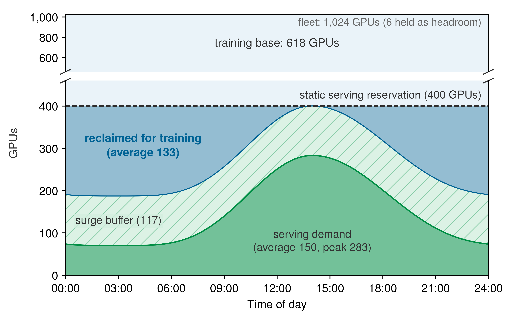
Безопасное совместное использование требует как измеренного бюджета на интерференцию, так и обеспечимого права на возврат ёмкости. Механизмы изоляции отвечают на первое требование; они не решают, какая команда владеет устройством и когда заёмщик обязан его освободить. Второе требование — это договор о распределении ресурсов между командами, и он применяется к каждому пулу, которым управляет оркестратор, — к обслуживанию и обучению в равной мере.
8.11 Многопользовательский доступ и квоты
Когда команда компьютерного зрения неделю удерживает 500 GPU, в то время как команда обработки естественного языка заблокирована в попытках выкатить критическое исправление в продакшен, общий кластер вырождается в «трагедию общин». Команды с самыми агрессивными темпами отправки задач, самыми крупными задачами или самыми настойчивыми скриптами повторной отправки потребляют непропорционально много ресурсов, тогда как команды со скромными или эпизодическими потребностями обнаруживают кластер постоянно занятым. Итог — организационное трение и недоинвестирование в медленно движущиеся, но потенциально более ценные проекты, команды которых не могут конкурировать за ёмкость одним лишь объёмом отправок. Статическая резервация обслуживания испытывает то же давление с другой стороны: команда обучения, увидевшая простаивающие устройства обслуживания, захочет их себе.
Многопользовательский доступ и квоты превращают организационные приоритеты в правила распределения, заимствования и возврата ресурсов, которые планировщик может обеспечить. Квота определяет право или лимит. Станет ли это право оперативным и продуктивным доступом, зависит от заимствования, которое одалживает незанятые гарантии другим командам, и от возврата, который возвращает их за ограниченное время, — оба механизма разбираются ниже. Учёт, разделяющий ёмкость, которую команда удерживает, и ёмкость, которую она использует хорошо, относится к отладке утилизации в Глава 8.12.1.
8.11.2 Пиковая ёмкость и заимствование квот
Одалживание превращает неиспользованные гарантии в пиковую (burst) ёмкость. Пусть небольшая команда владеет гарантией в 64 GPU, но ей нужно 256 GPU для обучающего прогона на выходные, в то время как гарантированная доля команды-сиблинга простаивает. Небольшая команда может одолжить простаивающие целые устройства вплоть до своей максимальной квоты. Эти устройства остаются частью физической ёмкости кластера, а не становятся виртуальной ёмкостью, и их приоритет вытеснения ниже, чем у собственных ресурсов. Когда команда-сиблинг отправляет работу, требующую её гарантии, планировщик возвращает заимствованные устройства, вытесняя или сокращая оппортунистические задачи заёмщика.
Заимствование разрешает дилемму статических квот лишь тогда, когда одолженная ёмкость остаётся возвращаемой в пределах целевого времени отклика платформы, запаса безопасности и текущей физической ёмкости. Команда, имеющая право на 500 GPU, может вернуть заимствованные устройства в соответствии с этим контрактом, но планировщик не должен обещать немедленное выделение 500 GPU, когда отказы, невытесняемые резервирования или резерв на восстановление сокращают возвращаемую ёмкость.
Пиковая ёмкость, таким образом, повышает максимум, которым команда может владеть, при том что её гарантия остаётся фиксированной. Приведённая выше небольшая команда может владеть до 256 GPU, но платформа обещает ей только гарантию в 64 GPU одновременно с гарантиями всех остальных команд. Сумма гарантий, которые платформа обязуется соблюдать одновременно, должна помещаться в возвращаемую физическую ёмкость после невытесняемых резервирований и запаса безопасности. Команды могут декларировать более высокие максимумы или веса справедливого раздела — целевые доли, задающие приоритет в Уравнение 1, — поскольку заимствованные задачи уступают место, когда возвращается гарантированный спрос, но эти значения не являются гарантиями.
Возврат ресурсов связывает политику квот с инфраструктурой контрольных точек. Контроллер допуска разделяет гарантированные и оппортунистические задачи. Гарантированные задачи работают на собственной квоте команды и сталкиваются с вытеснением только со стороны более приоритетной работы. Оппортунистические задачи работают на заимствованной ёмкости, уступают первыми и должны сохранять контрольные точки достаточно часто, чтобы возврат ресурсов сводил потери работы к минимуму, — ведь каждое принудительное изъятие оплачивает накладные расходы вытеснения из Глава 8.8.1. Эластичные задачи смягчают возврат ещё больше за счёт мягкого вытеснения из Глава 8.7.2, сокращая по одной реплике за шаг вплоть до минимально жизнеспособного распределения, а не завершаясь.
Одна из политик заимствования квот использует четыре уровня. Продакшн-обслуживание (Priority 0) владеет ёмкостью, защищённой от рутинного вытеснения. Продакшн-обучение (Priority 1) уступает только по определённой политике отказоустойчивого переключения обслуживания. Интерактивные и отладочные сессии (Priority 2) получают короткие лимиты исполнения, чтобы сохранить скорость итераций без бессрочного занятия ресурсов. Батчевые и исследовательские задачи (Priority 3) используют избыточную ёмкость и уступают в соответствии со своим контрактом возврата. Эти числа — метки уровней данного примера; это не значения приоритетов Kubernetes, где большее целое означает более высокий приоритет. Иерархия устанавливает старшинство, но защита дедлайнов всё равно требует реализуемой ёмкости и ограниченного времени возврата, а низкоприоритетной работе нужна явная политика против голодания.
Как было показано в обсуждении сверхподписки в Глава 8.4.2, частично занятое устройство — это всё равно выделенное целое устройство, поэтому безопасный предел пикового потребления определяется возвращаемостью, а не средней загрузкой SM. Дробное разделение — отдельный механизм, требующий явного контракта MIG, MPS или разделения времени. Планировщик должен измерять, насколько быстро заимствованные задачи могут сохранить контрольную точку, сократиться или завершиться, и резервировать пропускную способность ввода-вывода и сети, необходимую для этого перехода. Только тогда он сможет ограничить объём оппортунистической ёмкости, который безопасно одалживать, продолжая соблюдать целевое время отклика гарантии. Пока возврат не завершён, заимствованная задача, продолжающая работать рядом с возвращающейся работой владельца, — это «шумный сосед» на общих сетевых и дисковых путях (Глава 8.10.1). Изоляция и дедлайн возврата должны вместе ограничивать, насколько сильно заёмщик может замедлить владельца.
8.11.3 Безопасность и изоляция пространств имён
Команды, разделяющие парк, должны быть также защищены от наблюдения или изменения чужих весов моделей, обучающих данных и трафика инференса. Пространство имён даёт лишь административную границу, которую должны обеспечивать механизмы контроля хоста, устройств, сети и хранилища. Сетевая политика должна охватывать коллективные пути, которые допущенный ганг реально использует, а хостовая сеть уводит точку обеспечения политики с сети подов, поэтому каждый путь требует собственной проверки.
↩︎ Изоляция на уровне fabric — через виртуальные каналы и классы трафика, не позволяющие бёрстам одной задачи растягивать коллективы другой задачи, — описана в Изоляция трафика и качество обслуживания.
Между командами спектр изоляции из Таблица 7 становится выбором границы доверия, поскольку совместно размещённые рабочие нагрузки теперь принадлежат владельцам с разной степенью взаимной уязвимости. Атаки по побочным каналам на общих GPU — документированная уязвимость: наблюдая за конкуренцией на разделяемых кэшах или контроллерах памяти, вредоносный арендатор может определить архитектуру и даже свойства данных совместно размещённой модели. В чувствительных средах MIG или выделенные устройства могут усилить изоляцию ресурсов устройств, но ни один из этих механизмов сам по себе не создаёт полной границы безопасности от внешних арендаторов. Мультиарендная платформа сочетает разбиение устройств с изоляцией на уровне ВМ или контейнеров, конфигурацией блока управления памятью ввода-вывода (IOMMU), ограничивающей доступ устройств к памяти хоста, укреплением драйверов и среды исполнения, аутентификацией и авторизацией, а также механизмами контроля сети и хранилища. Нагрузки одной организации с более узкой границей доверия могут использовать MPS или разделение времени, когда ослабленная отказоустойчивая и производительная изоляция приемлема.
↪ Поверхность атак на разделяемые ускорители и то, какие механизмы разделения оставляют совместно размещённых арендаторов наблюдаемыми друг для друга, рассматривается в Разделяемые ускорители и кэши.
8.11.4 Управление квотами и организационная динамика
Даже если планировщик точно соблюдает квоты, гарантия, установленная полгода назад, может оставить 60 процентов зарезервированных GPU команды невостребованными после выпуска её флагманской модели, в то время как очередь срочного запуска другой команды растёт. Пока планировщик управляет текущими назначениями ресурсов, управление квотами пересматривает права и лимиты, которым эти назначения должны подчиняться. Периодические циклы пересмотра квот сопоставляют наблюдаемое использование, прогнозируемый спрос и стоимость выполнения каждым обещания по ёмкости. Команда, использующая лишь 40 процентов гарантии в 128 GPU, не обязательно блокирует другие команды, если простаивающие устройства можно одолжить. Управленческий вопрос — остаётся ли гарантия обоснованной и позволяет ли её контракт возврата продуктивно использовать свободную ёмкость парка между пиками спроса.
Центральное противоречие управления квотами — проблема накапливания (hoarding problem), при которой команды удерживают простаивающие резервирования, чтобы снова не стоять в очереди, когда работа будет готова. Процесс, приостановивший обучение политики в ожидании ручной разметки, или обучающий прогон, задержанный неоконченной токенизацией, может оставить зарезервированные ускорители неиспользуемыми — это отражает зависимости конкретных процессов, а не неизбежную фазу простоя любого обучения. Возврат ресурсов по уровню использования может освобождать простаивающие физические распределения для заёмщиков — при условии, что платформа сохраняет обещанное время возврата; пересмотр же долгосрочной гарантии команды требует сопоставления ожидаемого спроса с наблюдаемым использованием. Ясные контракты возврата снижают стимул удерживать простаивающие устройства, не делая низкую активность сама по себе основанием для нарушения обещания по ёмкости.
Учёт квот должен оставаться близким к решению планировщика. Каждой допущенной задаче нужны владелец, проект, класс нагрузки и контракт вытеснения, чтобы планировщик мог единообразно применять политику квот и восстановления, — метки Kubernetes и аккаунты Slurm несут эту учётную идентичность для планирования. GPU-часы, списанные на резервирование, заимствованную долю или класс вытеснения, делают стоимость возможности накапливания видимой и позволяют управляющей плоскости возвращать простаивающие гарантии.
Пример 8.1: Накапливание квот
Сценарий: исследовательская команда резервирует статический блок из 500 GPU под предстоящее обновление модели.
Диагноз: задержки данных на предыдущем этапе откладывают обучение, но команда сохраняет резервирование ради будущей доступности. GPU простаивают 3 weeks, при этом ёмкость стоимостью $504,000 остаётся неиспользованной, а очереди других команд растут.
Системный урок: простаивающее резервирование должно стать поводом пересмотреть право на одалживание и будущий спрос. Оркестратор может допускать оппортунистических заёмщиков в рамках ограниченного контракта возврата, не меняя гарантию владельца. Сокращение этой гарантии — отдельное управленческое решение; одалживание собственной ёмкости не превращает её в спотовую ёмкость облака.
Политика возврата «используй или потеряй» устраняет самый заметный симптом накапливания квот. Однако одалживание простаивающей ёмкости другой команде требует, чтобы система различала заимствованную ёмкость, вытесняемую на коротком уведомлении, и гарантированные резервирования, защищённые SLO. Определение уровней заимствования, вытеснения и гарантии как первоклассных примитивов политики — ключевое дизайнерское решение мультиарендности.
Контрольная точка 8.4: Дизайнерские решения мультиарендности
Рассмотрим кластер на 2 000 GPU, разделяемый исследовательской командой (распределение 60 процентов) и продакшн-командой (распределение 40 процентов):
Даже при наличии изоляции, квот и динамического разделения кластер может показывать низкую загрузку рядом с полной очередью. Верхнеуровневые дашборды редко объясняют, почему ожидающие задачи не могут занять свободные устройства. Поиск этих потерь требует систематической отладки использования в разрезе аппаратных пулов, ограничений планировщика и привычек пользователей при запросах.
8.12 Отладка загрузки кластера
Дашборд кластера показывает среднюю загрузку GPU, застывшую на 60 процентах, но разработчики жалуются на трёхдневное ожидание в очереди для небольших отладочных задач. Сотни GPU простаивают, но ни одна задача не запускается. Объяснить этот разрыв можно, только проследив взаимодействие аппаратной топологии, политик планировщика и поведения пользователей.
Часть парадокса — арифметика очередей из ноутбука 8.1. Множитель
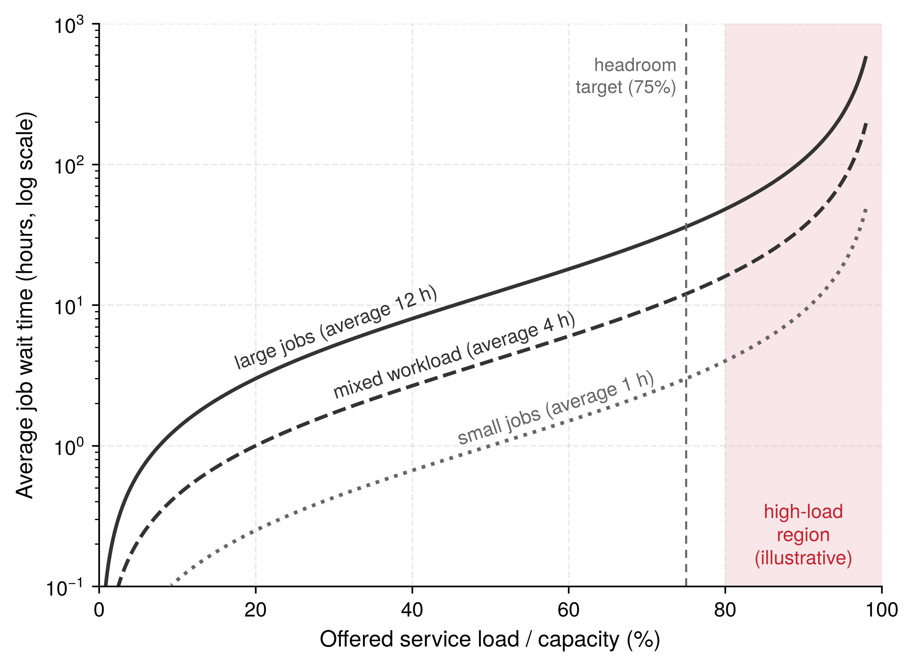
8.12.1 Выделенная, активная и продуктивная утилизация
64 GPU, простаивавшие все выходные из-за того, что исследователь забыл отменить резервирование, — это невидимые потери в мультиарендном облачном парке. В выделенном кластере такие потери хотя бы видны команде, владеющей оборудованием. В разделяемой среде стоимость скрыта и накапливается на тысячах задач. Эффективное управление требует выйти за пределы единственного числа утилизации и перейти к многоуровневой модели учёта, различающей то, что было выделено, то, что использовалось, и то, что было полезно.
Три уровня измерений вскрывают этот разрыв между выделенным оборудованием и реальным прогрессом. Выделенная (allocated) ёмкость учитывает ресурсы, удерживаемые полными выделениями, поэтому устройства, назначенные группе gang, которая всё ещё ждёт остальных своих членов, не учитываются. Частичная gang не может выполнить ни одного шага, поэтому удерживаемые ею устройства — это потери планировщика ниже уровня выделенной ёмкости, а не сама выделенная ёмкость. Активная утилизация измеряет активность оборудования при заданном определении счётчика, которое может включать коммуникационные ядра или работу, позже воспроизведённую заново. Продуктивная утилизация требует метрики уровня рабочей нагрузки — сохранённого прогресса обучения или обслуживающей работы, достигшей своей цели, — нормированной на собственную безотказную скорость шагов задачи. Например, команда, которой выделено 500 GPUs, может в среднем иметь 350 активных эквивалентов устройств (70 percent активности), доставляя 280 эквивалентов устройств полезной работы на своей безотказной скорости (56 percent от своего выделения). Это усреднённые по времени эквиваленты, а не обязательно различные множества активных и продуктивных устройств. Этот разрыв мотивирует профилирование; он не указывает его причину и не подразумевает, что необходимую коммуникацию и восстановление можно полностью устранить. Выделенный и продуктивный уровни также служат границами двух факторов goodput, которые измеряет Границы учёта. Scheduling goodput — это доля предлагаемой ёмкости, удерживаемой полными выделениями, а runtime goodput — доля выделенного времени, ставшая сохранённым прогрессом.
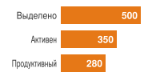
Выделенная, активная и продуктивная ёмкость в GPU-эквивалентах, каждый уровень меньше предыдущего.
Эти данные питают панель утилизации — главный инструмент оператора кластера для оценки здоровья парка. Это представление должно синтезировать утилизацию по командам относительно квот, глубину очереди по классам приоритета и индекс фрагментации — меру свободных GPU, которые нельзя выделить из-за ограничений топологии. Оно также должно отслеживать частоты вытеснения, прерывания спотовых инстансов, трафик контрольных точек и порождаемые ими накладные расходы на восстановление. Эти измерения позволяют планировщику отличать простаивающую ёмкость, которую можно вернуть, от выделенной ёмкости, чья кажущаяся незанятость отражает коммуникацию, ввод-вывод или жёсткую зависимость gang.
Автоматическое обнаружение аномалий превращает эти метрики в триггеры расследования. Внезапный скачок потребления команды до 3
Системный взгляд 8.5: Три метрики утилизации
Каждый уровень сужает расследование. Низкая выделенная утилизация требует проверки спроса, квот, здоровья устройств и выполнимости размещения. Низкая активная утилизация на выделенных устройствах требует трассировки подачи входных данных, коммуникационных ожиданий и исполнения в среде выполнения. Низкая продуктивная утилизация при занятых ядрах требует сравнения сохранённого прогресса с воспроизведением, синхронизацией и другими накладными расходами. Метрика выбирает следующие свидетельства для сбора; сама по себе она не выбирает средство.
8.12.2 Несоответствие политики и инфраструктуры
Когда кластер добавляет новое поколение GPU с большим занимаемым объёмом памяти рядом со старыми пулами, шаблоны задач, написанные под новейшее оборудование, могут оставлять старые пулы простаивающими, пока десятки задач стоят в очереди за новейшим разделом. Диагностика этого несоответствия политики и инфраструктуры требует сравнения состояния планировщика с физическими возможностями и сверки запросов задач с каждым аппаратным пулом. Полная очередь и простаивающие ускорители могут сосуществовать, когда планировщик соблюдает ограничения, которые сводная панель агрегировала. Кластер в центре примера 8.2 использует гетерогенное оборудование из Таблица 8, накопленное за три цикла закупок.
| Тип GPU | Количество | Память | Интерконнект | Узлы |
|---|---|---|---|---|
| A100-80 GB | 400 GPUs | 80 GB HBM2e | NVLink (600 GB/s) | 50 nodes |
| A100-40 GB | 424 GPUs | 40 GB HBM2e | NVLink (600 GB/s) | 53 nodes |
| V100-32 GB | 200 GPUs | 32 GB HBM2 | PCIe Gen3 (15.8 GB/s) | 50 nodes |
Пример 8.2: Отладка низкой утилизации GPU
Сценарий: Кластер на 1,024 GPU сообщает о средней утилизации 60 percent при более чем 50 задачах в очереди.
Диагноз: Избыточная спецификация (пользователи копируют шаблоны A100-80 GB для задач, которым нужен 35 GB памяти), фрагментация пулов и избегание устаревших V100 оставляют узлы A100-40 GB и V100 простаивающими, пока большие задачи ждут выделений A100-80 GB. Планировщик корректно исполнял политики, написанные для однородного парка, который больше не соответствовал гетерогенной инфраструктуре.
Системный урок: Поверхностная диагностика часто принимает несоответствия политики и инфраструктуры за ошибки алгоритма планирования. Обновление политик планировщика для поддержки автоматического сопоставления возможностей, динамического профилирования памяти и backfilling повышает утилизацию кластера до 84 percent, возвращая $7M годовой вычислительной ёмкости. Таблица 9 раскладывает этот прирост по пулам, используя выделенный и активный уровни из Глава 8.12.1.
| Пул | До | После | Изменение |
|---|---|---|---|
| A100-80 GB | 95% выделено, 72% активно | 89% выделено, 94% активно | +22 pp |
| A100-40 GB | 64% выделено | 88% выделено | +24 pp |
| V100 | 0% выделено | 71% выделено | +71 pp |
| Весь кластер | 60% | 84% | +24 pp |
Для этой оценки ёмкости предположим, что каждый активный GPU-час доставляет одинаковый сохранённый полезный объём работы до и после изменения политики, в том числе между аппаратными пулами. При этом упрощающем допущении наблюдаемый прирост утилизации эквивалентен примерно 246 полностью активным GPU продуктивной работы (Таблица 9). Гетерогенный производственный парк должен проверять эту конверсию по прогрессу рабочей нагрузки и измеренной пропускной способности в каждом пуле. Как и в начале главы, планирование закупок сравнивает прирост с оборудованием, которое оно заменяет, — здесь 410 дополнительных «сырых» GPU, — поскольку новые устройства при старых политиках тоже работали бы с утилизацией лишь 60 percent. При цене $2/GPU-hour эта избегнутая закупка представляет примерно $7M годовой восстановленной ценности, достигнутой изменениями политики, не требующими дополнительных вложений в оборудование.
8.12.3 Распространённые антипаттерны утилизации
Исправление несоответствий политики и инфраструктуры ставит задачи из очереди на GPU, но панель, сообщающая о 85 процентах выделения, по-прежнему говорит лишь о том, сколько ёмкости назначено, а не о том, доставляют ли эти выделения продуктивную работу. Внутри выделенной ёмкости четыре паттерна среды исполнения обычно расширяют разрыв между выделенным, активным и продуктивным уровнями, и их разделение требует сопоставления телеметрии устройств с временными шкалами исполнения.
Задача-зомби удерживает выделение после того, как её полезное исполнение прекратилось, поэтому её устройства остаются на выделенном уровне, не давая ничего продуктивному, и могут как регистрироваться как активные, так и нет. В распределённом запуске обучения модели на 175B параметров отказ одного ранга может оставить группу из 128 GPU простаивающей, если очистка воркеров или распространение отказа не завершились. Уцелевшие ранги могут блокироваться внутри коллектива, который никогда не завершится, или процесс, оставленный отказом на уровне драйвера, может сопротивляться завершению со стороны среды исполнения контейнеров, так что устройства остаются выделенными до таймаута или устранения неисправности на уровне узла. Стойкое выделение памяти в сочетании с низкой активностью SM — это сигнал к расследованию, а не доказательство отказа драйвера; валидные ожидания ввода или коммуникации могут выглядеть похоже. Оператор должен сравнить здоровье среды исполнения, прогресс шагов и контракт таймаутов рабочей нагрузки, а затем убедиться, что старые воркеры остановлены, прежде чем освобождать или переназначать их устройства.
Паттерн голодания по данным снижает активный уровень. Он проявляется как высокочастотная пилообразная волна в утилизации GPU, где устройство колеблется между 100-процентной нагрузкой (прямой/обратный проход) и 0-процентной (ожидание следующего батча). Хотя средняя утилизация может казаться приемлемой на уровне 60–70 процентов, GPU фактически простаивает треть своей жизни. Это происходит, когда привязанный к CPU конвейер данных не может поддерживать требуемую GPU пропускную способность — частый сценарий в компьютерном зрении, где декодирование JPEG и аугментация насыщают CPU хоста. Отношение остановки данных из Уравнение (4) количественно определяет потери как долю каждого шага, потраченную на ожидание входных данных. Временная шкала, совмещающая интервалы простоя с ожиданиями ввода, поддерживает диагноз; одна лишь вариативность утилизации причину не выявляет. Средство зависит от того, что ограничивает входной путь: декодирование, хранилище или передача.
Коммуникационное узкое место может заставлять ранги ожидать коллективные операции, что снижает активный уровень, хотя коммуникационные ядра также могут поддерживать высокую активность SM и маскировать это ожидание на этом уровне. Трафик градиентов на ранг зависит от точности градиентов, шардирования и схемы параллелизма, поэтому отношение времени шага к времени «только вычислений» (прямой и обратный проходы в изоляции) — более быстрая первая оценка открытых накладных расходов. Если полное время итерации превышает 1.5
На стороне обслуживания фрагментация памяти может помешать реплике принимать новые запросы, даже когда занятость её HBM указывает на свободную ёмкость, что снижает продуктивный уровень, не обязательно отражаясь на активном. Её сигнал — реплика, удерживающая меньше одновременных запросов, чем предсказывает её занятость. Аллокатор KV-кэша, а не агрегированный процент занятости, решает, помещается ли новая последовательность в непрерывные или страничные блоки памяти. Для планировщика парка аллокатор важен через свой результат — число одновременных запросов, которое может удерживать реплика, — поскольку эта измеренная ёмкость определяет, сколько реплик требуется обслуживающему конверту.
↪ Страничное выделение KV-кэша и его влияние на параллелизм реплик развиваются в PagedAttention.
Пример отладки связывает механику планирования с управлением парком. Технические политики (соответствие типов GPU, таймауты gang-планирования, льготные периоды вытеснения) взаимодействуют с организационными политиками (квоты команд, иерархии приоритетов, распределение затрат) и человеческим поведением (повторное использование шаблонов заданий, привычки в запросе ресурсов, шаблоны отправки в очередь). Эффективная оркестрация парка требует одновременного внимания ко всем трём уровням, потому что самая дорогая ошибка планирования часто не дефект ПО, а политика, которая была верна для старой инфраструктуры и никогда не обновлялась для новой.
8.13 Заблуждения и ловушки
Эти несоответствия политик и инфраструктуры повторяются в виде небольшого набора заблуждений, которые могут заставить внешне здоровый планировщик растрачивать дорогую ёмкость парка. Кластер, работающий с утилизацией 98 процентов, может выглядеть здоровым, в то время как исследователи перестали отправлять задания, потому что время ожидания растянулось до недель. Каждое заблуждение ниже следует одному и тому же шаблону, в котором оптимизация одного видимого показателя ухудшает результат, ради которого парк существует.
Заблуждение: Более изощрённые алгоритмы планирования всегда улучшают утилизацию.
Инженеры, столкнувшись с низкой утилизацией, часто тянутся к более продвинутым планировщикам, полагая, что алгоритм является узким местом. Как показывает пример отладки в Глава 8.12, первопричина — часто неверная конфигурация политик, а не алгоритмическое ограничение. Простой FIFO-планировщик с корректными политиками (соответствие на основе возможностей, backfill с таймаутами, подходящие ограничения gang-планирования) часто превосходит изощрённый планировщик с неверными политиками. Прежде чем обновлять планировщик, проведите аудит политик: убедитесь, что пользователи не запрашивают ресурсы, которые им не нужны, что гетерогенные ресурсы корректно представлены и что таймауты gang-планирования настроены. Аудит повторяется по мере эволюции рабочих нагрузок, поскольку льготный период вытеснения, достаточный для одной модели, может оказаться слишком коротким для другой, чтобы сохранить состояние, а веса размещения, подходившие для прежней топологии, могут обесценить ёмкость после расширения.
Ловушка: Считать все GPU-часы равными при измерении утилизации.
Непомеченный процент «GPU utilization» может смешать выделение с активностью или полезной работой. Например, 80 percent ёмкости парка может быть выделено заданиям, при этом 15 percent парка находится в группах, всё ещё ожидающих своих оставшихся участников, и ещё 5 percent ожидает ввода. Только 65 percent тогда выделено полным группам, и не более 60 percent выполняет полезное обучение в этом снимке. Такая разбивка происходит из свидетельств планировщика и среды исполнения, которые счётчик активности предоставить не может. Выделенный, активный и продуктивный уровни Глава 8.12.1 удерживают эти измерения раздельными, причём продуктивная ёмкость привязана к заявленной цели рабочей нагрузки и безотказной скорости задания.
Заблуждение: Gang-планирование всегда необходимо для распределённого обучения.
Gang-планирование предотвращает дедлок частичного выделения для жёсткой синхронной группы, но требуемая группа не обязана равняться максимальному запрошенному размеру задания. Асинхронные работники могут прогрессировать независимо, тогда как эластичное обучение может начинаться с минимальной жизнеспособной группы и менять размер на поддерживаемых границах. Независимые испытания гиперпараметров также могут выполняться раздельно. Планировщик получает гибкость, допуская фактическую единицу прогресса, сохраняя при этом атомарное выделение там, где этого требуют синхронные зависимости. Изменения числа работников или политики синхронизации по-прежнему требуют проверки сходимости.
Ловушка: Установка статических квот на основе пикового спроса.
Организации обычно устанавливают квоты команд под худший случай, рассуждая, что командам нужен гарантированный доступ в периоды аврала. Если пиковый спрос команды A — 500 GPU, а команды B — 300 GPU, кластеру со статическими квотами нужно 800 GPU. На практике пики редко совпадают. Кластер на 600 GPU может вместить любой из пиков, когда одновременный спрос другой команды оставляет достаточно ёмкости, но не может гарантировать оба пика одновременно. Иерархический fair-share с заимствованием использует эту статистическую возможность только тогда, когда заявленные гарантии вписываются в физическую ёмкость, а заимствованная работа может быть вытеснена в рамках контракта возврата. В этом примере расчёт статических квот по сумме пиков выделяет 800 GPU там, где общий кластер на 600 GPU с заимствованием покрывает любой из пиков. Дополнительные 200 — четверть большего кластера — это гарантии, которые простаивают всякий раз, когда пики не совпадают.
Заблуждение: Спотовые инстансы всегда дешевле для обучения.
Фактическая экономия зависит от оплачиваемых накладных расходов, которые добавляет каждое прерывание, а не от диапазона скидок 60–90 percent сценария. Рассмотрим 15-minute накладных расходов на контрольную точку на медленное хранилище и 30-minute накладных расходов на перезапуск для повторного получения ёмкости и перезагрузку — намного дольше, чем перезапуск на собственном файловом кластере, что в сумме составляет 45 minutes оплачиваемого непродуктивного времени на событие. Если каждое событие следует за 2 hours удержанного прогресса обучения, номинальная скидка 65 percent превращается примерно в 52 percent экономии в модели фиксированного распределения. Эта иллюстрация предполагает успешное сохранение и отсутствие повтора; реальный бюджет прерывания должен также включать отброшенный прогресс, когда сохранение не может завершиться. Планировщик должен отдельно учитывать неоплачиваемые ожидания ёмкости при оценке дедлайнов. Достаточные оплачиваемые накладные расходы могут стереть скидку, независимо от заявленной ставки.
Ловушка: Игнорирование топологии при планировании распределённого обучения.
Планировщики, игнорирующие связность, могут разместить коммуникационно-интенсивные группы на путях с меньшей доступной пропускной способностью или большей конкуренцией. В парке, где NVLink ограничен узлом, распределение тензорно-параллельной группы по узлам переносит её трафик на межузловой fabric; другое оборудование может предоставлять более крупные домены NVLink. Пересечение spine-коммутатора само по себе не доказывает затор, поэтому решение о размещении должно сравнивать эффективную ёмкость пути и конкурирующий трафик. Измеренный штраф по пропускной способности накапливается за долгий прогон и может превысить задержку ожидания более подходящего выделения. Планировщик должен взвесить этот выигрыш против задержки в очереди и фрагментации.
Ловушка: Использовать эластичное обучение, чтобы избежать решений gang-планирования.
Эластичное обучение дополняет gang-планирование, перемещаясь между жизнеспособными группами исполнения. При фиксированной 8-путевой тензорно-параллельной схеме каждая группа по-прежнему требует восемь работников; изменение числа реплик параллелизма по данным не ослабляет это требование. Среда исполнения, меняющая тензорную или конвейерную схему, должна также перераспределить состояние и установить новую жизнеспособную группу. Планировщик должен соблюдать поддерживаемую гранулярность изменения размера, требования атомарного допуска и бюджет размещения для каждой конфигурации. Эластичность добавляет возможные варианты; она не делает неполную группу продуктивной, а произвольное размещение — эффективным.
Ловушка: Считать высокую утилизацию доказательством здоровья кластера.
Высокий процент выделенных GPU не устанавливает, что у кластера достаточно запаса, чтобы оперативно принимать новую работу, поскольку время ожидания круто растёт по мере приближения предлагаемой нагрузки к ёмкости (Рисунок 16). Эта модель очередей не превращает процент занятости GPU в прогноз для парка с gang-планированием. Реальные цели запаса зависят от всплесков прибытия, размеров заданий, ограничений размещения и целевого показателя задержки в очереди или задержки обслуживания. Измерение этих результатов вместо применения универсального порога утилизации избавляет платформенные команды от оптимизаций, которые улучшают метрику дашборда, откладывая работу, ради которой парк существует.
8.14 Итоги
Оркестрация парка превращает ёмкость дата-центра в полезную работу по машинному обучению, решая, какие задания удерживают какие ускорители, где и как долго. Оркестрация тратит координацию, третью ось C³, чтобы ёмкость вычислений и коммуникации превращалась в полезный прогресс. В терминах Закона парка (Уравнение (3)) размещение задаёт член коммуникации
Осуществимость — первый фильтр. Размер группы (gang), локальность топологии, многомерное соответствие и совместимость ускорителей определяют, какие распределения задание вообще может выполнять, и только затем политика справедливости может выбирать среди них (принцип «Реализуемость прежде справедливости»). Заимствование квот расширяет ту же логику на команды: гарантия стоит столько, сколько платформа может вернуть в рамках своей целевой задержки отклика, а не число, напечатанное в квоте.
Размещение меняет физические пути, доступные рабочей нагрузке. Согласование параллелизма модели с иерархией сети сокращает открытую коммуникацию, когда размещение является ограничивающим фактором, но не может создать несуществующую ёмкость fabric. Эластичное изменение размера и спотовая ёмкость расширяют набор допустимых вариантов, обменивая непрерывность работы работников на гибкость и цену. Планировщики с учётом ML уточняют выбор среди них сигналами рабочей нагрузки, такими как полученное обслуживание, границы итераций, отношения времени завершения и goodput. Каждый из этих рычагов платит переходную или интеграционную цену, которую нужно измерить против прогресса, который он покупает.
Во время обслуживания планировщик парка сохраняет конверт ёмкости из неделимых реплик с запасом по SLO и сдвигает границу обучения-обслуживания по прогнозируемому спросу, удерживая готовый запас на то, чего прогноз не предвидел. Маршрутизация и формирование батчей на уровне запросов остаются в системе обслуживания. Когда этот конверт, квоты вокруг него или размещения внутри него идут не так, видимый симптом — обычно полная очередь рядом с простаивающими ускорителями. На практике первопричина чаще оказывается политикой, написанной для более раннего парка, чем дефектом алгоритма планирования.
Основные выводы: Планирование — это системная инженерия
- Распределённое планирование сложно: Планирование кластера должно координировать владение выделением между машинами вопреки частичным отказам, сетевым разделениям и устаревшим наблюдениям. Плоскости управления балансируют оперативность восстановления против риска авторизовать замену, пока старый работник ещё работает.
- Gang-планирование предотвращает дедлок, но снижает гибкость: Gang-планирование даёт жёстким группам исполнения атомарное выделение ресурсов, предотвращая дедлоки hold-and-wait, тогда как backfill и эластичное изменение размера восстанавливают гибкость в рамках минимальной жизнеспособной группы задания и ограничений переходов.
- Справедливость измеряется по осуществимым наборам: DRF уравнивает доминирующую нормализованную долю каждого тенанта между GPU, CPU, памятью и сетью, но только среди наборов, уже прошедших ограничения gang, топологии и совместимости (принцип «Реализуемость прежде справедливости»). Замедление и максимальное осуществимое ожидание проверяют, избегает ли итоговая политика задержек и голодания, а гарантия квоты действует лишь настолько, насколько одолженная ёмкость может быть возвращена вовремя.
- Топология определяет производительность: То, где GPU размещены в иерархии кластера, меняет пути коммуникации, доступные заданию. Локальность может сократить открытую коммуникацию, но ожидание компактного размещения тоже стоит времени; сравнивайте сквозное завершение, а не только пропускную способность итераций.
- Эластичная и прерываемая ёмкость должна окупить свои переходы: Вынужденное вытеснение или спотовое прерывание отбрасывает работу с последней надёжной контрольной точки и затем платит перезагрузку и прогрев, тогда как изменение размера приостанавливает задание. Изменение размера окупается, только если новый масштаб сохраняется достаточно долго, чтобы амортизировать паузу, а спотовая ёмкость экономит деньги лишь пока спотовая цена, умноженная на отношение оплачиваемого времени к удержанному продуктивному, остаётся ниже цены по запросу.
- Сигналы планирования должны соответствовать цели: Характеристики рабочей нагрузки поддерживают разные улучшения: полученное обслуживание устраняет неопределённость времени исполнения, границы итераций снижают стоимость прерываний, отношения времени завершения вскрывают несправедливые задержки, а goodput направляет адаптивное выделение. Каждая политика требует валидации против смеси рабочих нагрузок парка и затрат на восстановление.
- Полезная утилизация создаёт экономическую ёмкость: Сокращение устранимого простоя — часто путём обновления политик, написанных для более раннего парка, а не смены алгоритма планирования — может дать больше полезной работы от существующего парка. Различайте выделенную, активную и продуктивную ёмкость, прежде чем оценивать улучшение, и сохраняйте запас, необходимый для восстановления и целевых задержек.
Размещение тензорно-параллельной группы делает смещение накладных расходов (принцип «Вытеснение накладных расходов») осязаемым. Совместное размещение группы удерживает её коллективные операции на NVLink и сокращает открытую коммуникацию каждого шага, но планировщик платит за эту локальность временем координации, пока ожидает выполнимого непрерывного выделения. Узкое место не исчезает, а перемещается из пропускной способности коллективных операций в задержку в очереди или фрагментацию, поэтому правильное размещение — то, которое минимизирует сквозное время завершения, а не только время итерации.
Дальнейшие шаги: От выделения ресурсов к полезной работе
Выделение показывает, что задача владеет ёмкостью, но не то, что эта ёмкость производит полезную работу. Задача обучения может удерживать полное выделение, пока она перезапускается, ждёт входных данных или открывает коммуникацию на каждом шаге. Реплика обслуживания может занимать целый узел, пока её шаги декодирования прогоняют веса через себя и оставляют большую часть арифметики простаивающей. Продуктивный уровень говорит, какая часть выделения стала полезной работой, но не какая часть жизненного цикла задачи потеряла остальное. Поэтому владельцы планирования, восстановления и исполнения видят каждый свою потерю, и никто не видит, какая из них наибольшая. Эти отдельные потери становятся одним произведением, сомножители которого можно сравнивать, как только каждый час ёмкости отслеживается с момента, когда парк её предлагает, до превращения в полезную работу, причём каждая потеря относится на границу, где она возникает.
↪ Сколько выделения становится полезной работой и теряет ли остальное планирование, среда исполнения или программа, разбирается в Эффективность парка.
использованная литература
Brown, Tom B., Benjamin Mann, Nick Ryder, и др. 2020 г. «Language Models are Few-Shot Learners». Advances in Neural Information Processing Systems 33: 1877–901. https://doi.org/10.48550/arxiv.2005.14165.
Burns, Brendan, Brian Grant, David Oppenheimer, Eric Brewer, и John Wilkes. 2016 г. «Borg, Omega, and Kubernetes». Communications of the ACM 59 (5): 50–57. https://doi.org/10.1145/2890784.
Cloud Native Computing Foundation. 2024 г. Kubernetes: Production-Grade Container Orchestration. https://kubernetes.io/.
Coffman, Edward G., Michael Elphick, и Arie Shoshani. 1971 г. «System Deadlocks». ACM Computing Surveys 3 (2): 67–78. https://doi.org/10.1145/356586.356588.
Ghodsi, Ali, Matei Zaharia, Benjamin Hindman, Andy Konwinski, Scott Shenker, и Ion Stoica. 2011 г. «Dominant Resource Fairness: Fair Allocation of Multiple Resource Types». 8th USENIX Symposium on Networked Systems Design and Implementation (NSDI 11), 323–36.https://www.usenix.org/conference/nsdi11/dominant-resource-fairness-fair-allocation-multiple-resource-types .
Gu, J., M. Chowdhury, K. G. Shin, и др. 2019 г. «Tiresias: A GPU Cluster Manager for Distributed Deep Learning». Proceedings of the 16th USENIX Symposium on Networked Systems Design and Implementation (NSDI ’19), 485–500. https://www.usenix.org/conference/nsdi19/presentation/gu.
Hindman, Benjamin, Andy Konwinski, Matei Zaharia, и др. 2011 г. «Mesos: A Platform for Fine-Grained Resource Sharing in the Data Center». 8th USENIX Symposium on Networked Systems Design and Implementation (NSDI 11), 295–308.https://www.usenix.org/conference/nsdi11/mesos-platform-fine-grained-resource-sharing-data-center .
Hu, Qinghao, Zhisheng Ye, Zerui Wang, и др. 2024 г. «Characterization of Large Language Model Development in the Datacenter». arXiv preprint arXiv:2403.07648. https://arxiv.org/abs/2403.07648.
Jeon, Myeongjae, Shivaram Venkataraman, Amar Phanishayee, Junjie Qian, Wencong Xiao, и Fan Yang. 2019 г. «Analysis of Large-Scale Multi-Tenant GPU Clusters for DNN Training Workloads». 2019 USENIX Annual Technical Conference (USENIX ATC 19), 947–60. https://www.usenix.org/conference/atc19/presentation/jeon.
Li, Jie, George Michelogiannakis, Brandon Cook, Dulanya Cooray, и Yong Chen. 2023 г. «Analyzing Resource Utilization in an HPC System: A Case Study of NERSC’s Perlmutter». Lect. Notes Comput. Sci., Lecture Notes в Computer Science, т. 13948: 297–316. https://doi.org/10.1007/978-3-031-32041-5_16.
Lifka, David A. 1995 г. «The ANL/IBM SP Scheduling System». В Job Scheduling Strategies for Parallel Processing, под редакцией Dror G. Feitelson и Larry Rudolph, т. 949. Lecture Notes в Computer Science. Springer. https://doi.org/10.1007/3-540-60153-8_35.
Mahajan, Kshiteej, Arjun Balasubramanian, Arjun Singhvi, и др. 2020 г. «Themis: Fair and Efficient GPU Cluster Scheduling». 17th USENIX Symposium on Networked Systems Design and Implementation (NSDI 20), 289–304. https://www.usenix.org/conference/nsdi20/presentation/mahajan.
NVIDIA Corporation. 2020 г. NVIDIA A100 Tensor Core GPU Architecture. NVIDIA Whitepaper, V1.0.https://images.nvidia.com/aem-dam/en-zz/Solutions/data-center/nvidia-ampere-architecture-whitepaper.pdf .
Ousterhout, John K. 1982 г. «Scheduling Techniques for Concurrent Systems». Proceedings of the 3rd International Conference on Distributed Computing Systems (ICDCS), 22–30. https://web.stanford.edu/~ouster/cgi-bin/papers/coscheduling.pdf.
PyTorch Contributors. 2026 г.a. Torch Distributed Elastic Rendezvous. PyTorch documentation. https://docs.pytorch.org/docs/2.12/elastic/rendezvous.html.
PyTorch Contributors. 2026 г.b. torchrun (Elastic Launch). PyTorch documentation. https://docs.pytorch.org/docs/2.12/elastic/run.html.
Qiao, Aurick, Sang Keun Choe, Suhas Jayaram Subramanya, и др. 2021 г. «Pollux: Co-adaptive Cluster Scheduling for Goodput-Optimized Deep Learning». 15th USENIX Symposium on Operating Systems Design and Implementation (OSDI 21), 1–18. https://www.usenix.org/conference/osdi21/presentation/qiao.
Sigler, Eric. 2021 г. Scaling Kubernetes to 7,500 Nodes. OpenAI Blog. https://openai.com/index/scaling-kubernetes-to-7500-nodes/.
Tiwari, Devesh, Saurabh Gupta, James Rogers, и др. 2015 г. «Understanding GPU Errors on Large-Scale HPC Systems and the Implications for System Design and Operation». 2015 IEEE 21st International Symposium on High Performance Computer Architecture (HPCA), 331–42. https://doi.org/10.1109/hpca.2015.7056044.
Xiao, Wencong, Romil Bhardwaj, Ramachandran Ramjee, и др. 2018 г. «Gandiva: Introspective Cluster Scheduling for Deep Learning». 13th USENIX Symposium on Operating Systems Design and Implementation (OSDI 18), 595–610. https://www.usenix.org/conference/osdi18/presentation/xiao.
Yoo, A. B., M. A. Jette, и M. Grondona. 2003 г. «SLURM: Simple Linux Utility for Resource Management». В Job Scheduling Strategies for Parallel Processing. Springer Berlin Heidelberg. https://doi.org/10.1007/10968987_3.
Сноски
Gang-планирование: Формализовано в Ousterhout (1982 г.) для параллельных систем, где «матрица Аутерхаута» совместно планирует связанные потоки на процессорах в синхронизированных временных интервалах. В жёсткой обучающей группе ML неполное распределение предотвращает коллективное завершение, поэтому удерживаемые ресурсы могут простаивать до запуска недостающих рангов.↩ Вернуться к тексту
Группа размещения: Облачно-нативная абстракция, запрашивающая размещение экземпляров внутри сетевого домена с высокой пропускной способностью и низкой задержкой. Для ML-парка группы размещения уменьшают разрозненность размещения и могут предоставлять более высокие сетевые лимиты, чем неограниченное размещение. Они не гарантируют бисекционную пропускную способность на уровне рабочей нагрузки: переподписка топологии, одновременный трафик, маршрутизация и шаблон коллективной операции по-прежнему определяют фактически достигнутую пропускную способность AllReduce.↩ Вернуться к тексту
Bin packing: Для одномерной упаковки у first-fit decreasing есть классическое асимптотическое приближение
, с аддитивной константой в оценке для конечного числа экземпляров. Этот результат не гарантирует того же соотношения для МЛ-размещения с несколькими ресурсными измерениями, ограничениями топологии и неделимыми группами. Планировщик должен оценивать свою эвристику по допустимым размещениям и по застрявшей ёмкости, которую она оставляет.↩ Вернуться к тексту Hold-and-wait: Одна из четырёх условий Коффмана (взаимное исключение, hold-and-wait, отсутствие вытеснения и циклическое ожидание), все из которых должны выполняться, чтобы возникла взаимоблокировка (Coffman и др. 1971 г.). Ганговое планирование устраняет hold-and-wait за счёт атомарного выделения — именно поэтому оно предотвращает такую взаимоблокировку по построению; цена — снижение гибкости упаковки.↩ Вернуться к тексту
Slurm Workload Manager: Изначально «SLURM» — акроним Simple Linux Utility for Resource Management; в 2012 году проект отказался от написания акронима заглавными. Разработанный в Lawrence Livermore National Laboratory с 2002 года, централизованный контроллер Slurm (
slurmctld) поддерживает единственный авторитетный взгляд на выделения ресурсов. При очень большом масштабе операторы могут разбивать парки на части или федерировать планировщики, чтобы удерживать управляемыми задержку планирования, изоляцию политик и домены отказов.↩ Вернуться к текстуШаблон контроллера (цикл согласования): «Level-triggered»-дизайн согласует текущее желаемое и наблюдаемое состояния, не полагаясь на каждое промежуточное событие. Перезапущенный контроллер может продолжить с долговременного состояния, если его действия допускают повторы, а его наблюдения раскрывают незавершённую работу. Несколько контроллеров всё же нуждаются в различающихся обязанностях, чтобы коррекция одного не отменяла раз за разом коррекцию другого.↩ Вернуться к тексту
Volcano: Volcano предоставляет планировщик с механизмами пакетного и ганг-планирования. Поды выбирают его через имя планировщика, так что он может сосуществовать со стандартным планировщиком Kubernetes. Операционный контракт должен учитывать взаимодействия планировщиков, разделяющих одни и те же узлы; установка Volcano не переносит автоматически планирование каждой нагрузки на него.↩ Вернуться к тексту
Kueue: Kueue отделяет допуск нагрузки от размещения подов. Его механизмы «всё или ничего» включают ожидание готовности допущенных подов и возврат в очередь нагрузок, превысивших настроенный таймаут. Один лишь допуск по агрегированной квоте не доказывает, что ганг укладывается в физическую топологию; гарантия зависит от настроенных механизмов готовности, топологии и размещения.↩ Вернуться к тексту
Taints и tolerations: taint-метки узлов могут блокировать планирование подов без соответствующих tolerations. Toleration допускает рассмотрение узла, но не требует размещения на нём и не резервирует его исключительно для обучения. Выделенным пулам GPU также нужен контролируемый назначений tolerations и ограничения размещения; удаление существующих рабочих нагрузок требует политики выселения или drain, соответствующей эффекту taint-метки.↩ Вернуться к тексту
Спотовые инстансы: Скидка 60–90 percent из сценария покупает возвратную мощность, а не гарантированный интервал для сохранения состояния. Уведомление AWS об остановке или завершении по принципу best-effort нацелено на 2 minutes, тогда как остановка прерываемых VM GCP допускает до 30 seconds; гибернация AWS начинается немедленно. Если измеренное время сохранения контрольной точки задачи превышает эталонное окно 30-second, сохранение по уведомлению не может быть единственным путём восстановления.↩ Вернуться к тексту
Планирование по накопленной услуге: дисциплина, использующая потреблённые ресурсы для установки приоритета, когда объём оставшейся работы неизвестен. В отличие от планирования по кратчайшему остатку времени (SRPT), она не может отличить только что пришедшую длинную задачу от короткой до того, как какая-либо из них получит обслуживание. Её выгода зависит от распределения рабочей нагрузки; защита от голодания остаётся необходимой, когда новые задачи снова и снова вытесняют более старые.↩ Вернуться к тексту
Noisy neighbor: В GPU-кластерах интерференция возникает, когда взрывной сетевой трафик одной задачи или утилизация шины памяти замедляют совместно размещённую задачу на том же узле. При синхронном обучении задержавшийся поток может растянуть завершение коллективной операции, если он лежит на критическом пути коммуникации, распространяя интерференцию одного арендатора на всю группу исполнителей.↩ Вернуться к тексту
Multi-Instance GPU (MIG): Появившаяся с A100 (2020) технология MIG разделяет один GPU на до 7 аппаратно изолированных инстансов с выделенными контроллерами памяти, срезами кэша L2 и вычислительными блоками (NVIDIA Corporation 2020 г.). Изоляция обеспечивается на уровне железа, а не разделением по времени, что снижает интерференцию «шумного соседа» по сравнению с чисто программным разделением. Изменение схемы разбиения требует остановки затронутых GPU-задач; планировщик должен учитывать это неудобство при подстройке профилей под меняющийся состав рабочих нагрузок.↩ Вернуться к тексту
CUDA MPS (Multi-Process Service): Используемый в этом примере режим с разделяемыми ресурсами не резервирует независимый аппаратный срез для каждого клиента, и развёртывание должно также учитывать домен отказов GPU, разделяемый его клиентами (NVIDIA 2026 г.).↩ Вернуться к тексту